Five real SPM papers (2021–2025, with both 2021 Kertas 2 sets) read from the scanned papers and tagged question by question. Checked against 9 state trials from 2025 to see what they got right, then used to read the 13 trials from 2026.
Short answer: Physics is more predictable from its own past papers than from the trials. Kertas 1 keeps the same layout every year, 20 Form 4 and 20 Form 5 questions, and more than half of it re-asks ideas from earlier papers. The trials helped in Kertas 2: 8 of the 11 SPM 2025 Kertas 2 questions had a near-identical 2025 trial question, against 4.4 on average for papers the trials were not aimed at. The biggest Kertas 2 signal for 2026 is Nuclear Physics. It was in every paper from 2021 to 2024, left out in 2025, and 9 of the 12 trials from 2026 set it.
33/40
SPM 2025 K1 questions that were either a past-SPM idea or set by at least one 2025 trial
23/40
SPM 2025 K1 questions from an idea the board had already used in 2021–2024
8/11
SPM 2025 K2 questions a 2025 trial had already set. Same trials vs earlier papers: 2–6
⅓
of Kertas 2 marks go to design and "choose the best" parts, every year (39–47 of 120)
Kertas 2 — what is most likely to come in November 2026
Nuclear Physics comes back: fission or fusion energy, E = mc², mass defect, possibly half-life
Set in every paper from 2021 to 2024: a 9-mark question twice (once in each 2021 set), 6 marks in 2022 and 2024, and the 20-mark Section C in 2023. 0 marks in 2025, the first gap in five years. 9 of the 12 trials from 2026 set it, and Melaka and Perlis made it their Section C. Kertas 1 only had 2 nuclear questions in 2025, also below its usual 3–4.
A 9-mark Gravitation question in Section A: satellite orbit, Kepler's third law or escape velocity, with a design part
The satellite question ran three years straight: Q4 in 2022, Q7 in 2023, Q8 in 2024. In 2025 it became a rocket question (Q8) with only 3 marks of gravitation. 7 of the 12 trials from 2026 set Kepler's laws in Kertas 2, and 6 set Kepler's third law in Kertas 1. Kertas 1 has never asked Kepler's third law.
Electromagnetic induction: generator, Faraday and Lenz, induction cooker or charger
Electromagnetism takes turns. The force on a conductor or a motor came in 2021, 2023 and 2025; induction came in 2022 (Section B) and 2024 (Q5). That makes 2026 induction's turn. 4 trials from 2026 set induction as a 20-mark question (MRSM, Perlis, SBP, Selangor), and 9 of 12 set the transformer somewhere.
Heat as a 20-mark question: thermal equilibrium or specific heat capacity, ending in a design choice
Heat has been in Kertas 2 every year. Section C has gone Form 4, Form 5, Form 4, Form 5 since 2022, so 2026 points to a Form 4 chapter. 6 of the 12 trials from 2026 put Heat in Q9–Q11, three of them on thermal equilibrium (Melaka, Perlis, Selangor). The board last set Heat as a 20-marker in 2022 (Section C) and in 2021 set 2 (Section B).
Electronics, but not the LDR-transistor switch: diode rectification and smoothing capacitor, or thermionic emission and the CRT
The LDR-transistor switch came in 2021, 2023 and 2025, every other year. Rectifiers came in 2021 set 2 and 2022, and the cathode ray tube was a 20-mark question in 2024. Electronics is in every paper. 6 trials from 2026 set thermionic emission in Kertas 1, and Terengganu's Section C is a diode power-supply design.
Waves: a 9-mark question on refraction, diffraction or interference of water or sound waves
Waves are in every paper, and the angle changes each year: refraction (2021), damping (2021 set 2), interference (2022), diffraction (2023), interference with a wave-breaker design (2024), SONAR reflection (2025). Electromagnetic waves have never been set in Kertas 2.
Pressure, with a new angle: Bernoulli or Pascal's hydraulic system
Pressure is in every paper, but Archimedes came in 2022, 2024 and 2025. Bernoulli was last set in Kertas 2 in 2021. Pascal has never been set in Kertas 2, although 4 trials from 2026 set it and 5 trials from 2025 did. That 2025 trial favourite did not come, so treat Pascal as a wildcard.
Light: total internal reflection and optical fibre, or lens instruments. Curved mirrors are a wildcard
Light is in every paper. Concave and convex mirrors have never been set in Kertas 2 (2021–2025), but 7 of the 12 trials from 2026 set them (N9, Perak and Terengganu as a 20-mark question). In 2025, the one trial favourite the board had never set (Pascal) did not come.
Short opening questions (4–6 marks): photoelectric effect or the Kmax–f graph, and a Form 5 forces question (springs or equilibrium)
Quantum came as Q1 or Q2 in 2021, 2022 and 2025. Force & Motion II has filled Q2 or Q3 every year since 2023: springs (2023), an inclined plane (2024), ropes in equilibrium (2025). Springs in series and parallel were set by 6 trials from 2026.
Medium
Q1–Q3 slots 2021–2025
Section B and C layout. Since 2023, Q9 has been Form 4 and Q10 Form 5, and Section C has swung Form 4 → Form 5 → Form 4 → Form 5 since 2022. A likely 2026 shape is Q9 Form 4, Q10 Form 5 (Electricity or Electromagnetism) and Q11 Form 4 (Heat, Waves or Light). Gravitation, Quantum and Measurement have never been a 20-mark question.
Kertas 1 — what to expect
Fixed
20 Form 4 + 20 Form 5 questions, in syllabus order. Every paper from 2021 to 2025 had this split (2024 was 21/19). Since 2022, every chapter has had at least one question; 2021 had no Quantum question.
Up
Force & Motion I back to 5–6 questions. It had 5–6 every year until 2025, when it fell to 3. A chapter that is high or low one year usually swings back the next. The 13 trials from 2026 average 5.3.
Down
Heat back to 3–4, Pressure back to about 3. SPM 2025 gave Heat 6 questions and Pressure 5, both the highest in five years.
Up
Nuclear back to 3, Quantum 2, Force & Motion II 2. All three were at or near their lowest in 2025.
Re-ask
Revise the ideas the board keeps re-asking (Kertas 1 tab): transistor terminals and current gain (4 years running), SI base quantities (4 years), inertia, thermal equilibrium, Young's double slit x = λD/a, factors that increase induced e.m.f., E = I(R + r), the charged ball between plates, cathode ray deflection, and reducing transformer losses.
Where to spend revision time, in order
All five real Kertas 1 papers, 2021–2025. More than half of every recent Kertas 1 re-asked an idea from these papers: 23 of the 40 questions in 2025, 27 in 2024.
Kertas 2 design questions. Practise the "choose the most suitable … and give reasons" and "suggest modifications" parts, because they carry a third of Kertas 2 every year. The most likely 2026 contexts are a nuclear reactor or power plant, a generator or induction device, a satellite or rocket, a heat device (cooler box, thermos, solar water heater), and a power-supply or rectifier circuit.
Nuclear Physics in full. Fission and fusion equations, mass defect to energy with E = mc², chain reaction and moderator, and half-life from a graph.
Electromagnetic induction and transformers. Faraday and Lenz, a.c. and d.c. generators, factors that raise induced e.m.f., transformer efficiency and transmission losses.
Gravitation calculations. Kepler's third law T² ∝ r³, orbital speed, escape velocity, geostationary satellites.
The 2026 trial papers as timed practice. The 2025 trials had a near-identical question for 24 of SPM 2025's 40 Kertas 1 questions, but they did almost as well against 2023 (21) and 2024 (22). Use them for practice rather than as a guide to which topics will come. For Kertas 2 they are more useful: 8 of 11 hits, against 2–6 for the control papers.
Did the 2025 trials point to SPM 2025? In Kertas 2, yes, moderately: 8 of the 11 SPM 2025 questions had a near-identical trial question, against 2 to 6 for papers the trials were not aimed at. In Kertas 1, barely: the trials matched 24 of SPM 2025's 40 questions, but they also match 21 to 22 of the 2023 and 2024 papers. The trials cover the standard core of each chapter well; they don't single out the coming year's Kertas 1.
Kertas 2 — each SPM 2025 question and the 2025 trials that set it first
Archimedes: sky lantern and hot-air balloon design
N9 Q10 (submarine design)
—
Control check. The same 9 trials were scored the same way, without the judge knowing which year each SPM question came from, against papers they were not aimed at. Near-identical matches: SPM 2021 6/11, 2021 set 2 5/11, 2022 5/11, 2023 4/11, 2024 2/11. Against SPM 2025: 8/11. So the trials did carry some real information about SPM 2025 Kertas 2. The lift is smaller than in Sejarah, where the 2025 trials matched all 9 Kertas 2 themes.
Kertas 1 — trial matches, by SPM year
Real paper
Near-identical
Same or close
SPM 2023 (control)
21/40
36/40
SPM 2024 (control)
22/40
36/40
SPM 2025 (target)
24/40
36/40
Trial questions were matched to each real question by subtopic and then judged blind. The 2025 trials beat their controls by only 2–3 questions, so they don't single out SPM 2025's Kertas 1.
Which 2025 trials came closest
Trial 2025
K1 vs 2025
K1 control
K2 vs 2025
Terengganu
4
5.0
3
Pahang (Set 1)
7
2.5
—
Kelantan
4
4.0
2
Melaka
4
1.0
0
Pulau Pinang
4
7.5
0
Kedah · SBP
3
3.0 · 2.5
1
KL · N9
2
1.5 · 2.0
1
Perak
1
2.5
0
These count SPM questions that a trial asked in near-identical form. "Control" is the average for SPM 2023 and 2024. Pahang Set 1's Kertas 2 is not a standard paper (35-mark Section A), so it was left out. One year of evidence: use it as a tie-breaker, not a ranking of states.
2025 trial favourites in Kertas 2 that did not come
Theme
Trials (of 9)
SPM K2 history
Rectification and smoothing (diodes)
7
2021 set 2 and 2022 only
Springs and elasticity
5
2023 Q2 only
Pascal's principle, hydraulic systems
5
Never set
E.m.f. and internal resistance
4
2022 and 2023
Nuclear Physics
4
Every paper 2021–2024, then skipped 2025
The trials' top themes that did come (photoelectric effect, transformer, resistivity, electrical power) were themes the board had used recently. Pascal, the board's never-set topic, did not come. Sejarah showed the same rule: trial favourites come when the board already uses that topic in Kertas 2.
Kertas 1 is the steadiest part of SPM Physics. The layout is fixed: 20 Form 4 and 20 Form 5 questions, in syllabus order, and since 2022 every chapter has had at least one question. Chapter counts move by 1 or 2 a year and tend to swing back, and more than half of each paper re-uses an idea from an earlier paper. Use the expected counts below to decide how much time each chapter gets.
Questions per chapter, 2021–2025, and the 2026 expectation
Chapter
2021
2022
2023
2024
2025
Trials '26
Expect 2026
F4 · 1 Measurement
2
2
1
2
1
1.4
1–2
F4 · 2 Force & Motion I
5
6
5
6
3
5.3
5–6 ↑
F4 · 3 Gravitation
4
2
2
2
2
2.6
2–3
F4 · 4 Heat
2
4
3
4
6
3.3
3–4 ↓
F4 · 5 Waves
3
2
5
4
4
4.8
3–4
F4 · 6 Light & Optics
4
3
4
3
4
4.3
3–4
F5 · 1 Force & Motion II
2
3
2
2
1
2.6
2
F5 · 2 Pressure
4
4
2
2
5
3.9
3 ↓
F5 · 3 Electricity
4
4
3
5
3
3.0
4
F5 · 4 Electromagnetism
3
3
4
2
4
2.5
3
F5 · 5 Electronics
3
2
3
3
4
2.5
3
F5 · 6 Nuclear Physics
4
2
4
3
2
1.8
3 ↑
F5 · 7 Quantum Physics
0
2
2
2
1
2.0
2
Form 4 / Form 5
20/20
19/20*
20/20
21/19
20/20
22/18
20/20
How "Expect 2026" is set. It starts from the five-year average for each chapter, then moves part of the way back from where 2025 landed. Across all chapters and years, a chapter that was above its average one year tended to fall the next, and one below tended to rise (year-on-year correlation −0.32). The trials' own chapter mix is close to the five-year average, so it hardly moves the forecast. *The 2022 compilation is missing one question.
How much Kertas 1 re-uses earlier papers
23/40
SPM 2025 questions from an idea already set in 2021–2024. 2024: 27/40
13
SPM 2025 questions that repeated a 2023 or 2024 question almost exactly. 13 more were close
25%
chance in a given year that an idea the board has set in 2 or more years comes again
~60%
of brand-new SPM ideas had already appeared in a trial, in every year tested (2023–2025)
Near-exact re-asks in 2025 included the SI base quantity (2024 Q1 → 2025 Q1), free fall (2024 Q7 → Q3), the manometer (2023 Q22 → Q15), diffraction leaving speed, frequency and wavelength unchanged (2024 Q15 → Q16), total internal reflection (2024 Q19 → Q19), the magnifying glass (2023 Q15 → Q20), E = I(R + r) (2024 Q28 → Q30), half-life from a decay curve (2024 Q36 → Q39) and threshold frequency (2023 Q39 → Q40).
Ideas the board keeps re-asking (3 or more SPM years)
Idea
SPM years
Trials '26
Transistor terminals, current gain, base voltage
2022 · 2023 · 2024 · 2025
3
Identify SI base quantities
2021 · 2022 · 2024 · 2025
1
Thermal equilibrium: no net heat flow
2022 · 2023 · 2024
8
Inertia in daily life, Newton's first law
2021 · 2024 · 2025
7
Young's double slit, x = λD/a
2023 · 2024 · 2025
6
Factors increasing induced current or e.m.f.
2022 · 2023 · 2025
6
Choosing or converting s–t, v–t, a–t graphs
2021 · 2022 · 2023
4
E = I(R + r): e.m.f. or internal resistance
2023 · 2024 · 2025
3
Power rating, P = VI, heat produced
2021 · 2022 · 2024
3
Factors increasing force on a conductor or motor
2021 · 2024 · 2025
1
a.c. and d.c. generators
2021 · 2024 · 2025
1
Fission, fusion, chain reaction
2021 · 2022 · 2024
1
Charged ball between plates (E.H.T.)
2021 · 2023 · 2025
0
Reducing transformer and transmission losses
2022 · 2023 · 2025
0
Cathode ray deflection, CRO electron gun
2021 · 2024 · 2025
0
Five of these the 2026 trials barely set (0–1 trials). Those are the ones students who only drill the trials will miss.
Due: set in 2023 or 2024, not in 2025, in 5+ trials
Idea
SPM
Trials
Thermal equilibrium
'22 '23 '24
8
Concave mirror images and uses
'21 '23
7
Mass defect → energy, E = mc² (calc)
'23
7
mg sin θ on an incline, friction
'21 '24
6
Longer impact time → smaller impulsive force
'23 '24
5
Constructive/destructive interference
'22 '23
5
Thin lens formula (calc)
'24
5
Bernoulli: aerofoil lift, spoiler
'24
5
Never set in SPM 2021–2025, but in 4+ trials of 2026
Treat the right-hand list as extras. About 60% of each year's brand-new Kertas 1 ideas had appeared in some trial, but that rate was the same for the years the trials were not aimed at. A trial idea being popular is not enough evidence on its own.
Question types
Type
2021
2022
2023
2024
2025
Trials '26
Understanding / explain
21
23
20
17
23
19.4
Recall / define
6
5
9
13
5
10.8
Calculation
8
5
7
6
8
7.5
Graph / data
5
5
3
3
2
2.2
Design / choose
0
1
1
1
2
0.1
More than half of Kertas 1 asks students to explain a situation rather than recall a fact, and 6–8 questions need a calculation. The trials have twice as many plain recall questions as SPM 2025 did.
Kertas 2 is rotated on purpose. Five chapters had at least 4 marks in every paper: Heat, Waves, Light, Pressure and Electronics. Gravitation, Force & Motion I, Electricity, Electromagnetism and Nuclear each missed only once. Within a chapter, the angle changes from year to year, so the best prediction is a chapter that always comes, asked from an angle it hasn't used recently.
Each question slot, 2021–2025 (main subtopic and context)
Q
2021
2021 set 2
2022
2023
2024
2025
1 · 4m
Cooling curve
Siphon
Buoyancy vs depth
Sp. heat, sea breeze
v–t graph, scalar/vector
Photoelectric effect
2 · 5m
Photoelectric (zinc)
Kepler's 3rd law
Photocell
Spring F–x graph
Inclined plane
Magnifying glass
3 · 6m
Circular motion
Bridge rectifier
Iodine-131 decay
Convex lens
Radon decay, mass defect
Ropes in equilibrium
4 · 9m
LDR transistor
Damping
Satellite orbit
LDR transistor
Hydrometer
SONAR
5 · 9m
Wave refraction
Newton's 2nd law
Interference
Diffraction
Induction (magnet, solenoid)
LDR transistor
6 · 9m
Force on wire
Diode circuits
Kayaks, buoyancy
Catapult field, motor
Gas laws
Latent heat steamers
7 · 9m
Nuclear reactor
Impulse, mallet
Prism, macro lens
Geostationary satellite
Filament resistivity
Homopolar motor
8 · 9m
TIR, gemstone
Nuclear plant
Rectifier adapter
e.m.f., torch
Weather satellite
Rocket
9 · B
Forces, lorry in mud
Impulse, softball
Induction cooker
Pile driver impulse
Wave breaker
Train v–t, choose train
10 · B
Electric cooker
Cooling pad
Internal resistance, LEDs
Fortin barometer
Cathode ray tube
Resistivity, toaster
11 · C
Bernoulli hydrofoil
Microscope
Sp. heat, green building
Nuclear power plant
Refraction, optical fibre
Hot-air balloon
The 2021 papers come from a past-year compilation, so there are two 2021 Kertas 2 sets. The 2021 and 2022 papers come from that compilation; 2023–2025 were read from the scanned originals.
Chapter in Kertas 2 (≥4 marks)
Chapter
'21 · '21s2 · '22 · '23 · '24 · '25
Trials '26
Heat · Waves · Light
● ● ● ● ● ●
10–12/12
Pressure · Electronics
● ● ● ● ● ●
9–11/12
Gravitation
● ● ● ● ● ○
12/12
Nuclear Physics
● ● ● ● ● ○
9/12
Electricity · Electromagnetism
● ○ ● ● ● ●
11/12
Force & Motion I
● ● ○ ● ● ●
12/12
Force & Motion II
● ○○ ● ● ●
8/12
Quantum Physics
● ○ ● ○○ ●
9/12
Rotation rules the board has followed
Electromagnetism takes turns: motor or force in 2021, 2023, 2025; induction in 2022, 2024.
The LDR-transistor switch comes every other year: 2021, 2023, 2025.
Section C alternates Form 4 / Form 5 since 2022: Heat, Nuclear, Light, Pressure.
Since 2023, Section B has paired a Form 4 Q9 with a Form 5 Q10.
Archimedes came in 2022, 2024 and 2025, so a different pressure angle is more likely next.
Never set in Kertas 2 (2021–2025): Pascal's principle, curved mirrors, electromagnetic waves, and gravitation, quantum or measurement as a 20-mark question.
Every paper's Section B and C ends in a design or choose-the-best part, and two or three Section A questions have one too.
Across these 36 big questions: Heat 6, Electromagnetism (induction or transformer) 5, Light and mirrors 5, Electricity 5, Force & Motion 4, Waves 3, Pressure 3, Nuclear 2, Electronics 2, Gravitation 1. Kelantan 2026 is left out because its pack has only 7 questions and no Section C.
2026 by section
Slot
Most likely
Also possible
Q1–Q3
Photoelectric effect or Kmax–f graph; a Form 5 forces question (springs, equilibrium); a short nuclear decay or energy question
Satellite or Kepler's third law with design · induction or generator · a waves question (refraction, interference, diffraction) · diode rectification or CRT · e.m.f. and internal resistance
Bernoulli or Pascal, total internal reflection, gas laws, nuclear fission energy
Q9 (Form 4)
Heat (thermal equilibrium, specific heat) or Force & Motion I (momentum, impulse)
Waves, Light
Q10 (Form 5)
Electromagnetic induction or transformer, or Electricity (power, efficiency)
Electronics, Bernoulli
Q11 (C)
A Form 4 chapter if the swing holds: Heat, Waves or Light
Nuclear power design, if Nuclear doesn't come in Section A
These slot calls are softer than the chapter calls, because they rest on four or five years of a pattern. Nuclear will very likely come somewhere in the paper. Whether it is a short Section A question or Section C is genuinely uncertain.
Forecast 2026 turns this report's forecast into practice papers. Kertas 1 is three full 40-question papers in the real layout (20 Form 4 + 20 Form 5, chapter counts set to the 2026 expectation): 79 of the 120 questions are state-trial questions on ideas the forecast rates highly, and 41 are new questions written for angles no trial covered, including the five re-asks the trials barely set. Kertas 2 is four full sets (Sections A, B and C) with every forecast angle placed in at least one set; Set 4 makes Nuclear Physics the Section C question. Every Kertas 1 key was re-solved blind by a second checker and every Kertas 2 calculation was redone; wrong trial keys were corrected. These are revision papers, not leaked or official questions. They are also in the drill as "Forecast Set 1–4".
Each set follows the paper's own order, Form 4 Chapter 1 to Form 5 Chapter 7. The grey tag under each question shows where it came from.
F4 · Measurement
1 Which of the following is a base quantity?
Force
Velocity
Temperature
Momentum
Trial 2026 Sarawak Q1
Answer
C · A base quantity cannot be defined in terms of other quantities; temperature (kelvin) is one of the seven SI base quantities. Force, velocity and momentum are derived quantities because each is a combination of base quantities (for example velocity = displacement ÷ time). Velocity is the tempting choice, but it is a derived quantity.
2 Diagram 1 shows a graph of V against θ.
Which statement describes the relationship between V and θ?
V increases linearly with θ
V is directly proportional to θ
V is inversely proportional to θ
V decreases linearly with θ
New
Answer
A · A straight line with a positive gradient shows that V increases linearly with θ. The line does not pass through the origin (it has a positive intercept on the V axis), so V is not directly proportional to θ, which is why option A is wrong.
F4 · Force & Motion
3 Diagram 2 shows the velocity-time graph of a lift moving upward.
Which of the following gives the acceleration of the lift in each stage of the motion?
0–4 s: +2 m s⁻²; 4–10 s: 0; 10–12 s: −4 m s⁻²
0–4 s: +2 m s⁻²; 4–10 s: +8 m s⁻²; 10–12 s: −4 m s⁻²
0–4 s: +4 m s⁻²; 4–10 s: 0; 10–12 s: −2 m s⁻²
0–4 s: −2 m s⁻²; 4–10 s: 0; 10–12 s: +4 m s⁻²
New
Answer
A · Acceleration is the gradient of the velocity-time graph. 0–4 s: (8 − 0) ÷ 4 = +2 m s⁻²; 4–10 s: the line is horizontal, so the acceleration is 0; 10–12 s: (0 − 8) ÷ 2 = −4 m s⁻². Option B takes the constant velocity as the acceleration.
4 Diagram 1 shows a velocity–time graph for the motion of a car. Calculate the total displacement travelled by the car.
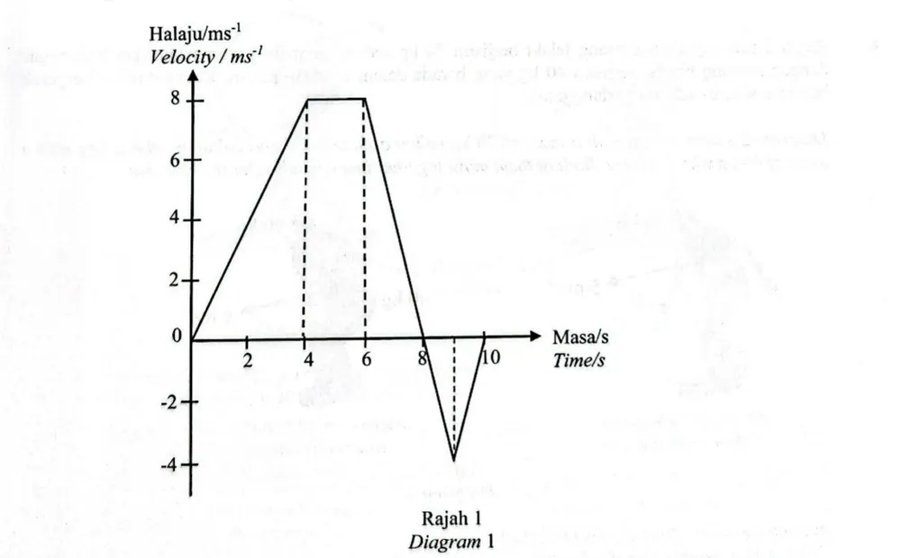
44 m
40 m
38 m
36 m
Trial 2026 Selangor Set 1 Q4
Answer
D · Displacement = total area under the v–t graph, with the area below the time axis counted as negative. 0–4 s: ½ × 4 × 8 = 16 m; 4–6 s: 2 × 8 = 16 m; 6–8 s: ½ × 2 × 8 = 8 m; 8–10 s: −½ × 2 × 4 = −4 m. Total = 36 m. The value 44 m is the distance (areas added without their signs), not the displacement.
5 A steel ball and a feather are released at the same time from the top of a long glass tube from which all the air has been removed. Which statement is correct?
Both fall with the same acceleration and reach the bottom of the tube at the same time.
The steel ball falls with a larger acceleration because its weight is greater.
The feather falls with a smaller acceleration because its mass is smaller.
Both fall with a constant velocity because there is no air resistance.
New
Answer
A · In a vacuum the only force acting is the weight, so a = W/m = g for both objects whatever their masses, and they land together. Option A is tempting because the heavier object has a larger weight, but it also has a larger inertia and the two effects cancel. Without air resistance the velocity increases at 9.81 m s⁻² rather than staying constant.
6 A bus moving at 20 m s⁻¹ brakes suddenly. Passengers who are not wearing seat belts are thrown forward. What explains this situation?
A forward force acts on the passengers when the bus brakes.
The momentum of the bus is transferred to the passengers.
The passengers have inertia, so their bodies tend to keep moving forward.
The weight of the passengers increases when the bus brakes.
New
Answer
C · Inertia is the tendency of an object to stay at rest or keep moving uniformly unless a force acts on it (Newton's first law of motion). When the bus stops, the passengers' bodies carry on forward at the original velocity. No forward force pushes them (A), and the momentum of the bus is not "transferred" to them (B).
7 Diagram 1 shows two trolleys being pushed with the same force, F in 30 seconds. The distance travelled by trolley R and trolley S is 5 m and 3 m respectively. Which of the following statements is correct?
The decreasing in mass will increase the acceleration of the trolley.
The increasing of mass will increase the acceleration of the trolley.
The decreasing of the velocity will increase the acceleration of the trolley.
The increasing of velocity will decrease the acceleration of the trolley.
Trial 2026 KL Q5
Answer
A · With the same force, a = F/m, so the trolley with the smaller load (smaller mass) has the larger acceleration; trolley R travelled further (5 m against 3 m) in the same 30 s because it accelerated more. Options B, C and D reverse the relationship or bring in velocity, which does not decide the acceleration.
8 Diagram 3 shows two characteristics of safety vehicles. Why is a crumple zone used at the front part of a vehicle?
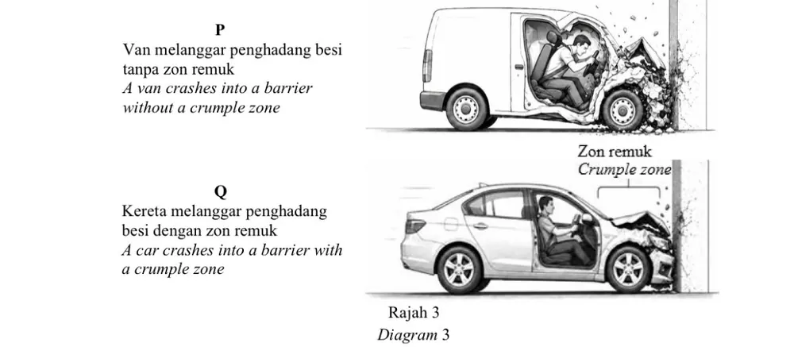
To increase the momentum of the car during collision.
To shorten the collision time so that force increases.
To lengthen the collision time so that the acting force decreases.
To reduce the mass of the car so that velocity increases.
Trial 2026 Melaka Q4
Answer
C · Impulsive force F = (mv − mu) ÷ t. A crumple zone crumples and lengthens the time of the collision, so for the same change in momentum the impulsive force on the passengers is smaller. Option B states the opposite and would cause worse injuries.
F4 · Gravitation
9 Diagram 4 shows that the distance between the centers of an apple and an orange is r. Which of the following is the correct statement about the gravitational force, F between the apple and the orange?
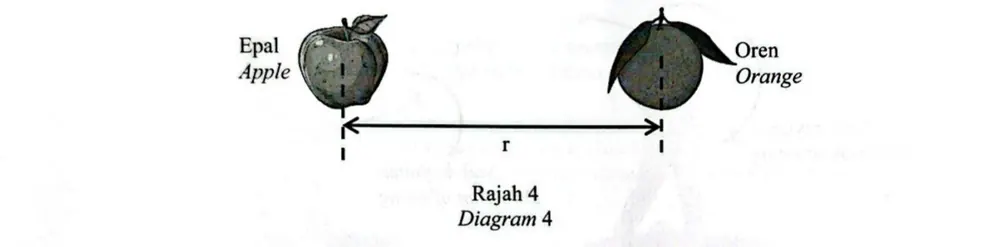
F is directly proportional to the sum of the masses of the apple and orange and inversely proportional to 2r
F is directly proportional to the sum of the masses of the apple and orange and inversely proportional to r²
F is directly proportional to the product of the masses of the apple and orange and inversely proportional to 2r
F is directly proportional to the product of the masses of the apple and orange and inversely proportional to r²
Trial 2026 Selangor Set 1 Q10
Answer
D · Newton's law of universal gravitation: F = Gm₁m₂/r². The force is directly proportional to the product of the two masses, not their sum, and inversely proportional to the square of the distance between the centres, not to r or 2r. Options A and B use the sum of the masses; options A and C use r or 2r instead of r².
10 The escape velocity on the surface of Mars is 5.03 km s⁻¹. Given the radius of the planet Mars is R. What is the escape velocity at a height of ½R from the surface of the planet Mars?
7.11 km s⁻¹
4.11 km s⁻¹
3.56 km s⁻¹
2.90 km s⁻¹
Trial 2026 N9 Q22
Answer
B · Escape velocity v = √(2GM/r), so v ∝ 1/√r with r measured from the centre of the planet. At a height of ½R, r = R + ½R = 1.5R, so v = 5.03 ÷ √1.5 = 4.11 km s⁻¹. The tempting 3.56 km s⁻¹ comes from using r = 2R, forgetting that the height is only ½R.
F4 · Heat
11 Diagram 3 shows two copper blocks, L and M, are in thermal contact. The initial temperatures of L and M are 50°C and 30°C respectively. Which statement is correct when blocks L and M are at thermal equilibrium?
Temperature of L is higher than M
The quantity of heat in L is the same as in M
Rate of change in temperature of L is bigger than that of M
Net heat transfer between L and M is zero
Trial 2026 Perak Q9
Answer
D · At thermal equilibrium, blocks L and M are at the same temperature, so the net rate of heat transfer between them is zero: heat flows from L to M and from M to L at equal rates. Heat does not stop moving, and blocks of different size need not hold the same quantity of heat, so A and B are wrong.
12 The diagram shows the temperature–time graph when 0.50 kg of a liquid is heated by a 150 W immersion heater. Assume all the heat from the heater is absorbed by the liquid. What is the specific heat capacity of the liquid?
450 J kg⁻¹ °C⁻¹
900 J kg⁻¹ °C⁻¹
1030 J kg⁻¹ °C⁻¹
1800 J kg⁻¹ °C⁻¹
New
Answer
D · Energy supplied E = Pt = 150 × 240 = 3.60 × 10⁴ J and the temperature rise Δθ = 70 − 30 = 40 °C. c = E / (mΔθ) = 36 000 / (0.50 × 40) = 1800 J kg⁻¹ °C⁻¹. 900 comes from leaving out the mass, 1030 from using the final temperature 70 °C instead of the rise, and 450 from multiplying E by m.
13 Diagram 8 shows air trapped in a plastic bottle floating on the surface of a lake at noon. At night, the volume of the trapped air decreases. Which law explains this situation?
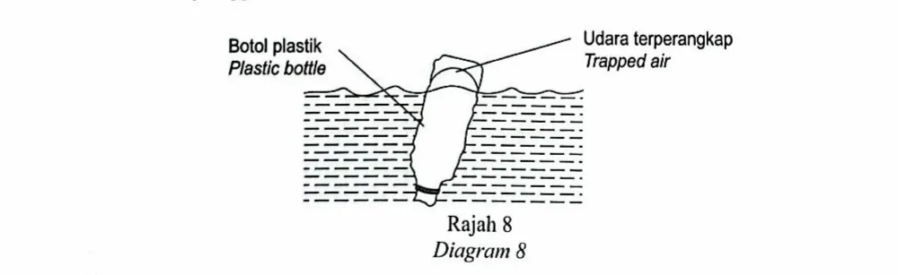
Snell's Law
Charles' Law
Boyle's Law
Gay-Lussac's Law
Trial 2026 KL Q14
Answer
B · When the temperature falls at night, the volume of the trapped air decreases while its pressure stays constant. V ∝ T at constant pressure is Charles' law. Boyle's law needs a constant temperature and Gay-Lussac's law a constant volume, while Snell's law is about the refraction of light.
F4 · Waves
14 In a Young's double-slit experiment, monochromatic light of wavelength 5.50 × 10⁻⁷ m passes through two slits separated by 0.25 mm. The screen is 2.00 m from the double slit. What is the distance between two consecutive bright fringes?
4.40 × 10⁻⁶ m
4.40 × 10⁻³ m
8.80 × 10⁻³ m
9.09 × 10² m
New
Answer
B · x = λD/a with a = 0.25 mm = 2.5 × 10⁻⁴ m. x = (5.50 × 10⁻⁷ × 2.00) / (2.5 × 10⁻⁴) = 4.40 × 10⁻³ m. 4.40 × 10⁻⁶ m comes from not converting 0.25 mm to metres, 8.80 × 10⁻³ m is the distance across two fringes, and 9.09 × 10² m comes from inverting the formula.
15 A boy is playing on a swing. The swing is left to oscillate freely until it stops. Which graph represents the oscillation of the swing?
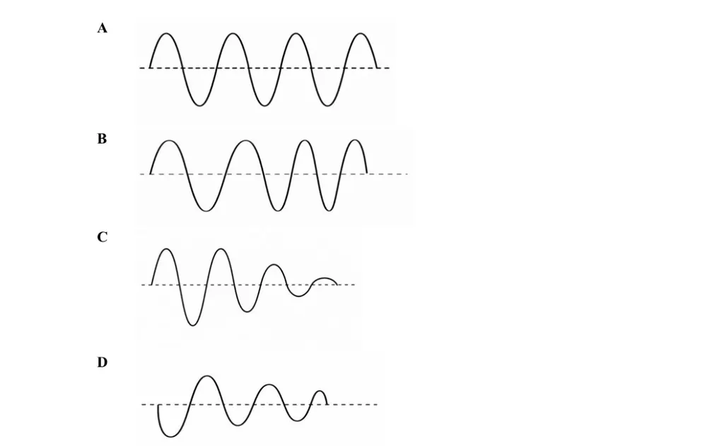
Graph A
Graph B
Graph C
Graph D
Trial 2026 Melaka Q12
Answer
C · A freely swinging swing loses energy to air resistance and friction at the pivot, so its amplitude decreases gradually while its period stays the same. This is damping, shown by graph C. Graph A has a constant amplitude (no energy loss), while graphs B and D show a changing wave spacing.
16 Diagram 12 shows electromagnetic waves R, S, T and U forming a continuous electromagnetic spectrum. Which position represent the visible light?
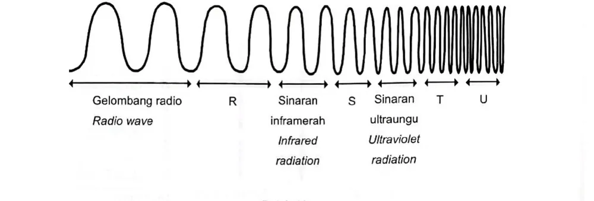
R
S
T
U
Trial 2026 Kedah Q17
Answer
B · The electromagnetic spectrum runs from the longest to the shortest wavelength: radio waves, microwaves, infrared, visible light, ultraviolet, X-rays, gamma rays. S lies between infrared and ultraviolet, so S is visible light. R is microwaves while T and U are X-rays and gamma rays.
17 Diagram 4 shows water waves moving from deep region to a shallow region. Which of the following will happen when waves entering the shallow region? I. The wave speed decreases II. The wave frequency decreases III. The wavelength decreases IV. The direction of movement bends towards the normal line
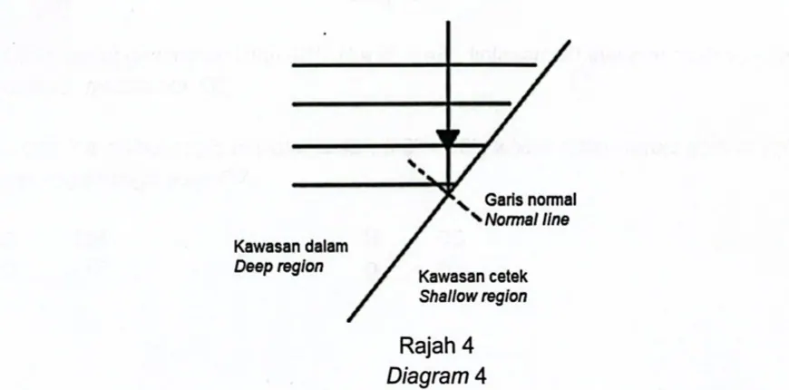
I and II only
III and IV only
I, III and IV only
I, II, III and IV
Trial 2026 Kelantan Q15
Answer
C · When water waves enter the shallow region, the speed and the wavelength decrease (v = fλ) and the waves bend towards the normal. The frequency is fixed by the source and does not change, so II is wrong. Only I, III and IV are correct.
F4 · Light & Optics
18 Diagram 18 shows a ray diagram for a concave mirror. What is the position and image distance, v produced?
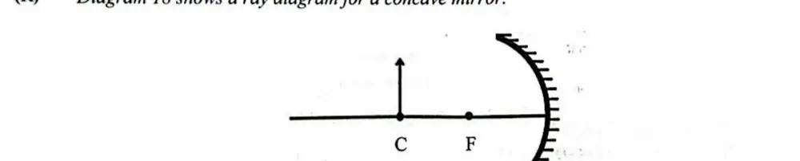
In front of the mirror and v = f
In front of the mirror and v = 2f
In front of the mirror and f < v < 2f
In front of the mirror and v > 2f
Trial 2026 KL Q27
Answer
B · The object is at the centre of curvature C (distance 2f). A concave mirror forms the image also at C: real, inverted and the same size, so v = 2f in front of the mirror. v = f only when the object is at infinity, f < v < 2f when the object is beyond C, and v > 2f when the object is between F and C.
19 In modern communication systems such as high-speed internet, light is transmitted through optical fibre which applies total internal reflection. Which condition allows total internal reflection to occur?
I The angle of incidence is equal to the critical angle II The angle of incidence is greater than the critical angle III Light propagates from lower optical density medium to a higher optical density medium IV Light propagates from higher optical density medium to a lower optical density medium
I and III only
I and IV only
II and III only
II and IV only
Trial 2026 Kedah Q19
Answer
D · Total internal reflection needs two conditions: light travels from a medium of higher optical density to one of lower optical density (IV), and the angle of incidence is greater than the critical angle (II). If the angle of incidence equals the critical angle, the refracted ray only grazes the surface and total internal reflection has not yet occurred.
20 An object is placed at a distance 15.0 cm from a convex lens with focal length 10.0 cm. What is the image distance?
15.0 cm
20.0 cm
25.0 cm
30.0 cm
Trial 2026 KL Q23
Answer
D · 1/f = 1/u + 1/v, so 1/v = 1/10.0 − 1/15.0 = 1/30.0, giving v = 30.0 cm. 15.0 cm assumes v = u, while 25.0 cm comes from adding u and f.
F5 · Force & Motion II
21 Diagram 17 shows a box of mass 5 kg at rest on a rough inclined plane at 35°. [g = 9.81 m s⁻²] Calculate the value of the friction force, F_R.
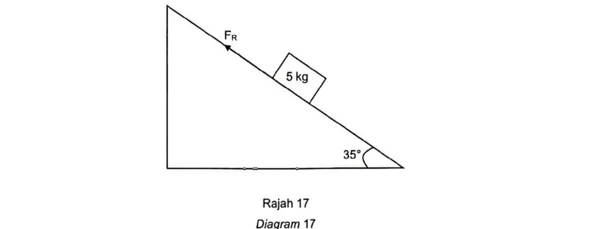
2.87 N
4.10 N
28.13 N
40.18 N
Trial 2026 Kedah Q25
Answer
C · The box is at rest, so the friction force up the slope equals the component of weight down the slope: F = mg sin 35° = 5 × 9.81 × 0.5736 = 28.13 N. The value 40.18 N is mg cos 35°, the component pressing into the plane, not the one along it.
22 The diagram shows a graph of force, F against extension, x for a spring that is stretched until it passes its elastic limit at point E.
Which statement is correct?
The spring constant is equal to the area under the graph from O to E.
The spring obeys Hooke's law along the whole graph because F keeps increasing.
The spring returns to its original length when the force is removed at any point beyond E.
The spring obeys Hooke's law from O to E because F is directly proportional to x.
New
Answer
D · Hooke's law holds only up to the elastic limit E, where the graph is a straight line through the origin, so F is directly proportional to x. Beyond E the graph curves and the spring is permanently stretched. The spring constant is the gradient (F/x), not the area; the area gives the elastic potential energy.
F5 · Pressure
23 Diagram 17 shows a water dam. Why is the dam wall built thicker at the bottom?
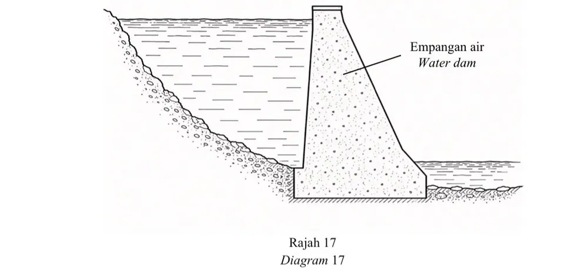
To increase the stability of the dam
Because water pressure increases as depth increases
Because water density is higher at the base of the dam
To increase the speed of water flowing out from the dam
Trial 2026 Sarawak Q24
Answer
B · Liquid pressure P = hρg increases with depth, so the water at the bottom pushes on the wall with a much larger force than the water near the surface. The wall has to be thicker at the bottom to withstand it. The density of the water is the same throughout the dam, so C is wrong.
24 Diagram 23 shows a cross-section of a hydraulic jack system with a master piston (small) and slave piston (large) lifting a car. The weight of the load to be lifted by the slave piston is 4.5 × 10⁴ N. Given the ratio of the surface area of the master piston to the slave piston is 1 : 20. What is the minimum input force that must be applied to the master piston to lift the load?
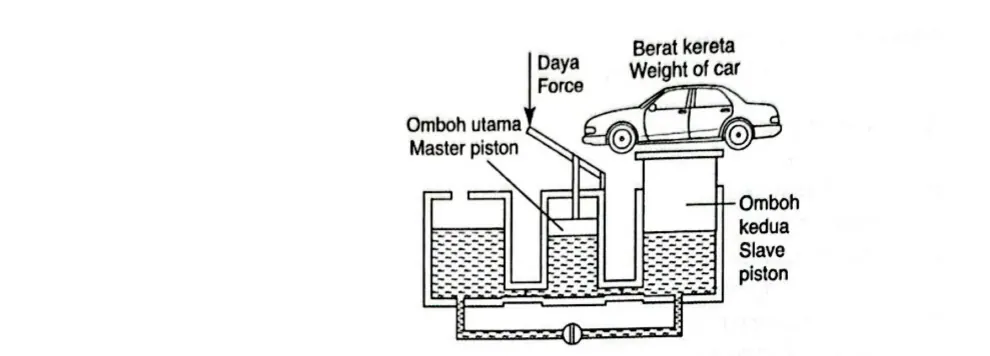
2 250 N
4 500 N
9 000 N
22 500 N
Trial 2026 KL Q32
Answer
A · By Pascal's principle the pressure is the same at both pistons, F₁/A₁ = F₂/A₂. The master piston has only 1/20 of the area of the slave piston, so F₁ = 4.5 × 10⁴ ÷ 20 = 2 250 N. A hydraulic system multiplies force, so the input force must be far smaller than the 4.5 × 10⁴ N load.
25 Diagram 14 shows a manometer connected to a bottle of gas. Which of the following is correct about the gas pressure produced?
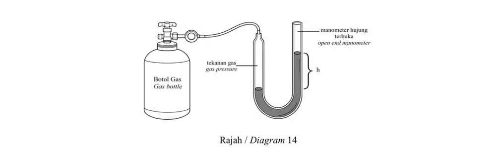
Gas pressure is same as atmospheric pressure
Gas pressure is smaller than atmospheric pressure
Gas pressure is bigger than atmospheric pressure
Gas pressure increases uniformly
Trial 2026 Perlis Q26
Answer
C · In an open-end manometer the gas pressure pushes the mercury down on the gas side. In Diagram 14 the mercury level on the gas side is lower than the level at the open end, so the gas pressure is bigger than atmospheric pressure by hρg. The gas pressure would be smaller only if the level on the gas side were higher.
F5 · Electricity
26 Diagram 28 shows a voltmeter reading of 1.5 V when the switch is open. When the switch is closed, the ammeter reading is 0.6 A. What is the internal resistance of the dry cell?
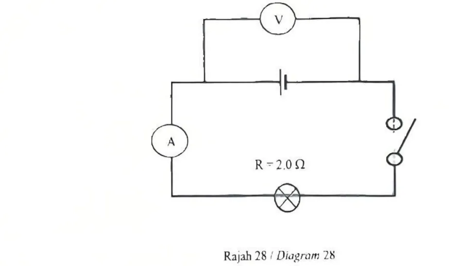
0.18 Ω
0.50 Ω
2.50 Ω
4.50 Ω
Trial 2026 Pahang Q31
Answer
B · With the switch open the voltmeter reads the e.m.f., ε = 1.5 V. With the switch closed the voltage across the external resistor is IR = 0.6 × 2.0 = 1.2 V, so the lost volts are Ir = 1.5 − 1.2 = 0.3 V and r = 0.3 ÷ 0.6 = 0.50 Ω. The value 2.50 Ω is the total resistance (R + r) = 1.5 ÷ 0.6, not the internal resistance.
27 The diagram shows a ball coated with metallic paint, hanging from an insulating thread between two parallel metal plates connected to an E.H.T. power supply. The ball touches one plate, is repelled to the other plate, and so on, so the ball oscillates between the plates.
Which changes will increase the frequency of oscillation of the ball?
I Increase the voltage of the E.H.T. power supply.
II Move the two plates closer together.
III Use a ball of greater mass.
IV Replace the ball with a plastic ball with no metallic coating.
I and III only
II and IV only
III and IV only
I and II only
New
Answer
D · A stronger electric field, E = V/d, gives a larger force on the charged ball, so it accelerates more and crosses the gap faster. Raising the voltage (I) and moving the plates closer (II) both increase E. A heavier ball (III) accelerates less for the same force, and a plastic ball (IV) cannot take charge from the plate, so it would not oscillate.
28 Diagram 23 shows a graph of potential difference, V against electric current, I for wire P, Q, R and S. The wires are made of same material and same thickness. Which wire is the longest?
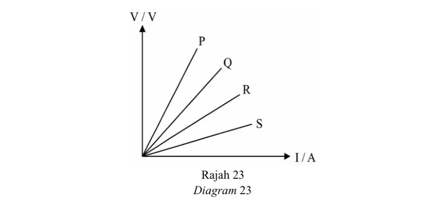
P
Q
R
S
Trial 2026 Melaka Q29
Answer
A · The gradient of a V–I graph is the resistance, R = V/I, so wire P with the steepest line has the greatest resistance. The wires have the same material and thickness, so from R = ρl/A the resistance is proportional to the length, and P is the longest. Wire S has the smallest gradient, so it is the shortest.
29 An electric kettle is labelled '240 V, 2400 W' and works normally on a 240 V supply. Which statements are correct?
I 2400 J of electrical energy is converted to heat every second.
II The current through the heating element is 10 A.
III The kettle uses 2400 J of energy during the whole time it is switched on.
IV The power of the kettle becomes 1200 W if it is connected to a 120 V supply.
I and II only
I and III only
II and IV only
III and IV only
New
Answer
A · Power is the rate of energy conversion, so 2400 W means 2400 J every second (I), and I = P/V = 2400 ÷ 240 = 10 A (II). The total energy depends on the time, E = Pt, so III is wrong. With the same heating element P = V²/R, so halving the voltage cuts the power to a quarter, 600 W, not 1200 W (IV).
F5 · Electromagnetism
30 Diagram 15 shows a bar magnet moving towards the solenoid. Which action will increase the deflection of the galvanometer needle?
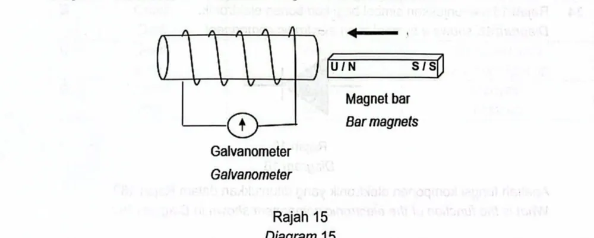
Changing the magnet pole
Decreasing the number of turns of the solenoid
Decreasing the number of magnets
Moving the bar magnet faster
Trial 2026 Kelantan Q32
Answer
D · The induced e.m.f. depends on the rate at which the solenoid cuts magnetic flux. Moving the bar magnet faster increases the rate of change of flux, so the induced current and the galvanometer deflection increase. Changing the pole only reverses the direction of the deflection, while fewer turns or fewer magnets reduce the deflection.
31 Diagram 16 shows a current-carrying conductor that is placed between two magnets. What magnetic field pattern is represented by the situation above?
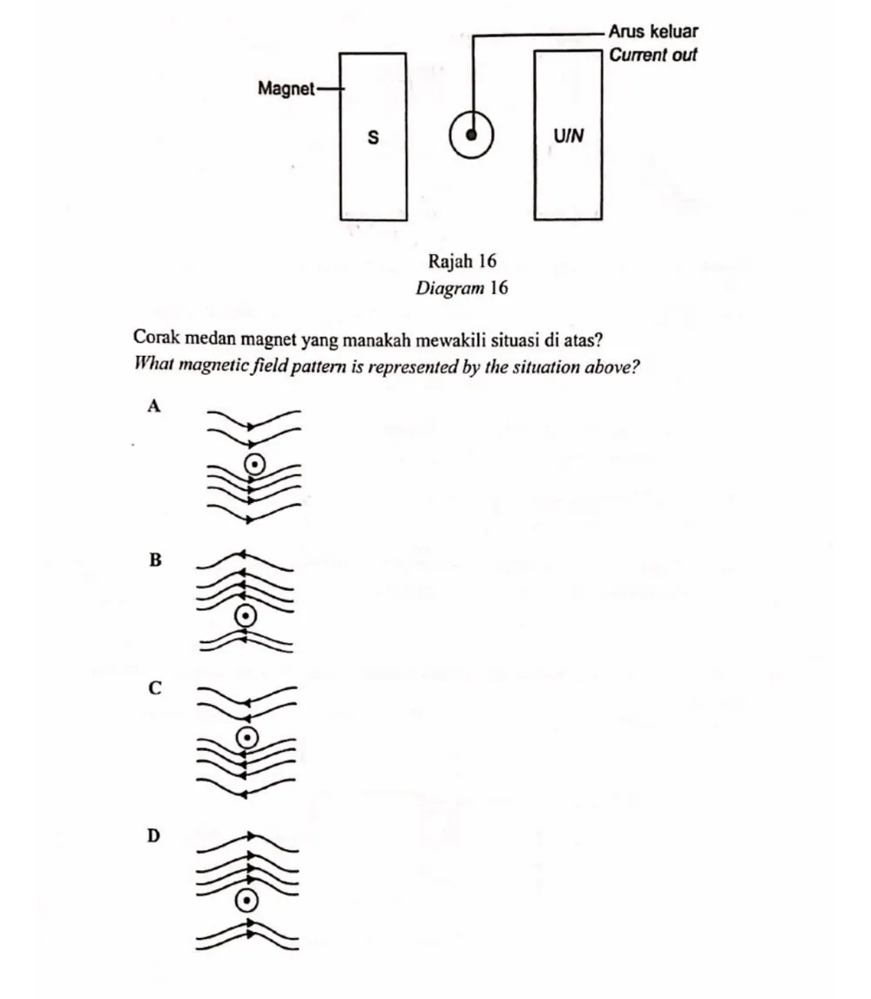
Pattern A
Pattern B
Pattern C
Pattern D
Trial 2026 Perak Q30
Answer
B · The magnetic field from the N pole to the S pole points to the left. Current out of the paper gives an anticlockwise circular field, which adds to the magnet's field above the wire (crowded lines) and cancels it below the wire (sparse lines). The conductor is pushed towards the weaker field, so the catapult field is Pattern B.
32 Diagram 26 shows Gabriel charging his notebook computer (20 V) using a charger with a transformer: primary coil 12,000 turns, input 240 V, secondary coil (number of turns unknown). Gabriel charged his notebook computer (20 V) using a battery charger containing a transformer with primary coil 12,000 turns and input 240 V. What is the number of turns of the secondary coil?
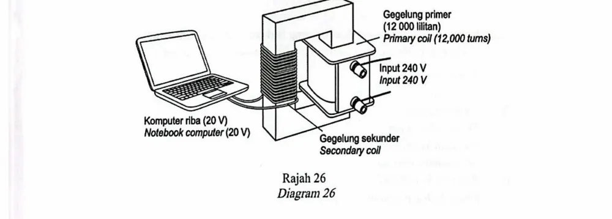
11 760
1 000
50
12
Trial 2026 KL Q35
Answer
B · For an ideal transformer, Vs/Vp = Ns/Np. So Ns = Np × Vs/Vp = 12 000 × 20/240 = 1 000 turns. The value 11 760 comes from subtracting 240 from 12 000, which is wrong because the turns ratio equals the voltage ratio, not the voltage difference.
F5 · Electronics
33 Diagram 28 shows a transistor circuit. Which following pair is correct? (Type of transistor | Relationship between Iᵦ and I꜀)
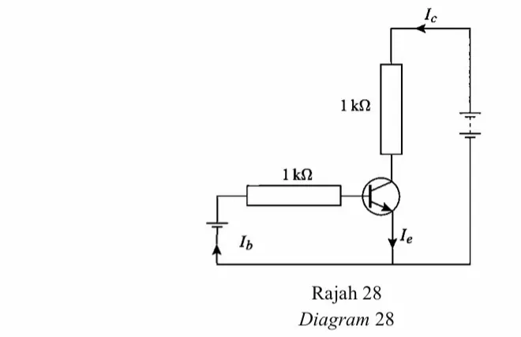
pnp | Iᵦ < I꜀
npn | Iᵦ < I꜀
npn | Iᵦ > I꜀
pnp | Iᵦ > I꜀
Trial 2026 Sarawak Q37
Answer
B · The arrow on the emitter points away from the base, so the transistor is npn. A transistor works as a current amplifier: a small base current Iᵦ controls a much larger collector current I꜀ (I꜀ = β × Iᵦ), so Iᵦ < I꜀.
34 The rate of the thermionic emission increases when
the metal is connected to a low voltage power supply
the specific heat capacity of the metal increases
the surface area of the metal decreases
the temperature of the metal increases
Trial 2026 Kelantan Q33
Answer
D · Thermionic emission is the release of electrons from a hot metal surface. When the temperature of the metal rises, more electrons gain enough energy to overcome the work function and escape, so the rate of emission increases. The specific heat capacity does not decide how many electrons are released.
35 A full-wave bridge rectifier made of four diodes is connected to an a.c. supply and a load resistor. Which statement about the bridge rectifier is correct?
Only one diode conducts at any instant, so the output is half-wave rectified.
All four diodes conduct at the same time, so the output is smooth d.c.
Two diodes conduct at any instant, so the current through the load always flows in the same direction.
Two diodes conduct at any instant, so the current through the load reverses every half cycle.
New
Answer
C · In a bridge rectifier, two diodes are forward biased during the positive half-cycle and the other two during the negative half-cycle. The current through the load always flows in the same direction, but the output is pulsating and needs a smoothing capacitor to become smooth d.c.
F5 · Nuclear Physics
36 Diagram 19 shows a Natrium-24 decay process. What is the mass of undecayed Natrium-24 after 45 hours?
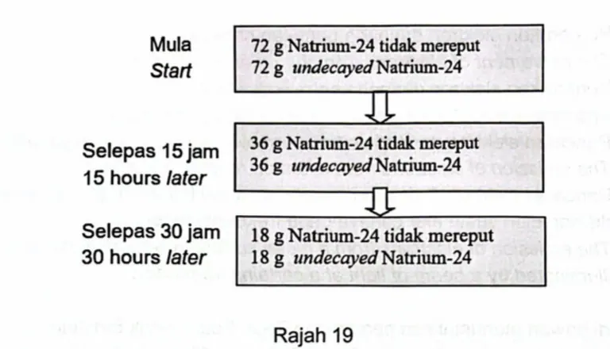
12.0 g
9.0 g
6.0 g
4.5 g
Trial 2026 Kelantan Q37
Answer
B · The mass of undecayed sodium-24 halves (72 g to 36 g) in 15 hours, so its half-life is 15 hours. 45 hours is 3 half-lives: 72 g → 36 g → 18 g → 9 g. The value 18 g only counts two half-lives.
37 What happens during nuclear fission?
A heavy nucleus splits into two lighter nuclei
An unstable neutron splits into stable neutrons
A nucleus splits producing high energy nuclei
A neutron splits at high temperature exceeding 1 000°C
Trial 2026 Perlis Q38
Answer
A · In nuclear fission a heavy nucleus such as uranium-235 absorbs a neutron and splits into two lighter nuclei, releasing energy and new neutrons. A neutron does not split, and a temperature of 1 000 °C is not the condition for fission.
38 In a nuclear reactor, the rate of the chain reaction is controlled by
boron rod
uranium rod
graphite core
concrete wall
Trial 2026 Kelantan Q38
Answer
A · Boron rods absorb neutrons in a nuclear reactor. Lowering the rods into the core absorbs more neutrons and slows down the chain reaction, while raising them speeds it up. Uranium rods are the fuel and graphite is the moderator.
F5 · Quantum Physics
39 What ideas was introduced by Max Planck?
Introducing the idea of quantum which is discrete energy.
Explain the production of line spectrum by hydrogen atoms.
Introducing the concept of photons and explain the characteristics of the photoelectric effect.
Introducing the wave nature of particle and the idea of wave–particle duality.
Trial 2026 Melaka Q39
Answer
A · Max Planck proposed that energy is emitted and absorbed in discrete packets called quanta, with E = hf. The photon concept and the photoelectric effect were Einstein's contribution, while the wave nature of particles is de Broglie's idea.
40 The table shows the work function of four metals P, Q, R and S.
Metal
P
Q
R
S
Work function / eV
1.9
2.3
3.6
4.3
Light of frequency 6.0 × 10¹⁴ Hz is shone on each metal. Which metals emit photoelectrons? [Planck constant, h = 6.63 × 10⁻³⁴ J s; 1 eV = 1.6 × 10⁻¹⁹ J]
P only
R and S only
P and Q only
P, Q, R and S
New
Answer
C · The photon energy is E = hf = 6.63 × 10⁻³⁴ × 6.0 × 10¹⁴ = 3.98 × 10⁻¹⁹ J = 2.49 eV. Photoelectrons are emitted only if the photon energy is greater than the work function: P (1.9 eV) and Q (2.3 eV) qualify, but R and S need more energy.
F4 · Measurement
1 A water rocket of mass 1.8 kg is launched vertically upwards with a velocity of 30 ms⁻¹. The rocket reaches its maximum height in 8.5 seconds. Among the physical quantities involved in the situation, which physical quantity is classified correct?
Base quantity: Mass; Vector quantity: Velocity, time
Base quantity: Velocity; Vector quantity: Displacement, velocity
Base quantity: Mass, time; Vector quantity: Velocity
Base quantity: Velocity, Displacement; Vector quantity: Mass
Trial 2026 Selangor Set 1 Q1
Answer
C · The quantities in this situation are mass (1.8 kg), velocity (30 m s⁻¹) and time (8.5 s). Mass and time are base quantities; velocity has direction, so it is a vector quantity. Option A wrongly calls time a vector; B and D treat velocity or displacement as base quantities, but both are derived quantities.
F4 · Force & Motion
2 An athlete runs one complete lap of a 400 m track in 55 s and returns to the starting line. Which statement is correct?
The average velocity is zero but the average speed is not zero.
The distance travelled is zero and the displacement is 400 m.
The distance travelled and the displacement are both 400 m.
The average speed is zero but the average velocity is not zero.
New
Answer
A · Displacement is the shortest distance from the initial position to the final position in a stated direction. The athlete finishes where she started, so the displacement and the average velocity (= displacement ÷ time) are zero. The distance (400 m) and the average speed (400 ÷ 55 ≈ 7.27 m s⁻¹) are not zero. Option B confuses displacement with distance.
3 Diagram 3 shows a ticker-tape strip of a trolley moving down an inclined runway. The ticker timer used produces 50 ticks in one second. What is the time taken for the trolley to move from R to S?
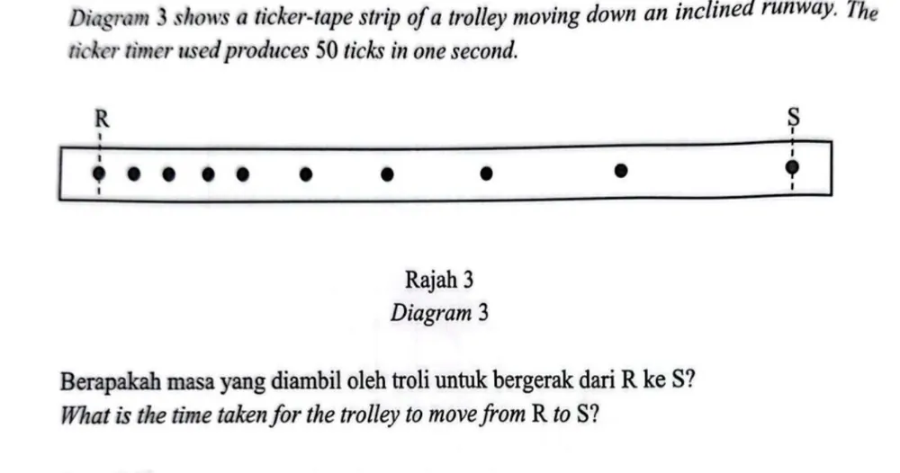
0.02 s
0.18 s
0.20 s
0.50 s
Trial 2026 SBP Q3
Answer
B · A ticker timer that makes 50 ticks per second prints one tick every 0.02 s. From R to S there are 9 tick intervals (10 dots), so t = 9 × 0.02 = 0.18 s. Option C (0.20 s) comes from counting the 10 dots as 10 intervals.
4 Diagram 2 shows a man with a mass of 70 kg riding a skateboard and colliding with a boy with a mass of 40 kg who is at rest. Both of them move together immediately after the collision. What is their common final velocity?
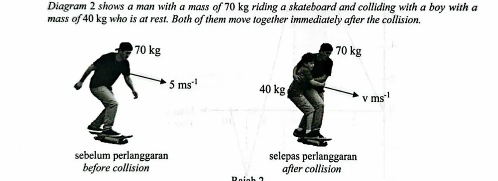
3.2 ms⁻¹
−3.2 ms⁻¹
5.0 ms⁻¹
−5.0 ms⁻¹
Trial 2026 Selangor Set 1 Q6
Answer
A · Momentum is conserved: m₁u₁ + m₂u₂ = (m₁ + m₂)v, so 70(5) + 40(0) = (70 + 40)v and v = 350 ÷ 110 = 3.2 m s⁻¹, in the original direction of the man's motion. The negative values are wrong because the direction does not reverse; 5.0 m s⁻¹ would mean the speed is unchanged even though the moving mass has increased.
5 A rocket burns fuel and pushes hot gases downward at a high speed, and the rocket rises. Which statement explains why the rocket moves upward?
The gases gain downward momentum, so the rocket gains an upward momentum of equal magnitude.
The hot gases push against the air below the rocket.
The total momentum of the rocket and the gases increases upward.
The weight of the rocket decreases as the fuel is burnt, so the rocket rises.
New
Answer
A · Before launch the total momentum of the rocket and fuel is zero. By the principle of conservation of momentum it stays zero: the downward momentum of the gases equals the upward momentum of the rocket. The rocket does not need air to push against (B is a common misconception) and the total momentum does not increase (C).
6 Diagram 10 shows a pulley system. When object X is released, object Y will move on the surface with an acceleration of 0.5 m s⁻². If the masses of objects X and Y are 5 kg and 2 kg respectively, what is the frictional force acting on object Y?
25.75 N
32.15 N
40.85 N
45.55 N
Trial 2026 Perlis Q21
Answer
D · Treat X and Y as one system accelerating at 0.5 m s⁻²; resultant force = (5 + 2)(0.5) = 3.5 N. The driving force is the weight of X, 5 × 9.81 = 49.05 N, so the friction on Y = 49.05 − 3.5 = 45.55 N. A common slip is to use the mass of X or Y alone for the resultant force, but both masses accelerate together because they are joined by the string.
F4 · Gravitation
7 The Earth orbits the Sun with an orbital radius of 1.50 × 10¹¹ m and an orbital period of 1.00 year. Mars orbits the Sun with an orbital radius of 2.28 × 10¹¹ m. What is the orbital period of Mars?
1.23 years
1.87 years
1.52 years
3.51 years
New
Answer
B · Kepler's third law: T² ∝ r³, so (T₂/T₁)² = (r₂/r₁)³ (1 = Earth, 2 = Mars). (r₂/r₁)³ = (2.28/1.50)³ = 3.51, so T₂ = √3.51 = 1.87 years. Using T ∝ r gives 1.52 years, while forgetting to take the square root leaves 3.51 years.
8 Which of the following statements are true about a geostationary satellite?
I The orbital period is 24 hours.
II It moves in the same direction as the rotation of the Earth.
III It orbits directly above the equator.
IV It is above different places on the Earth's surface at different times.
I and II only
I and III only
II and IV only
I, II and III only
New
Answer
D · A geostationary satellite has an orbital period of 24 hours (equal to the rotation period of the Earth), moves eastward like the Earth's rotation and orbits above the equator so that it stays above the same place; IV is therefore false. Options A and B each leave out a true statement, while C includes the false one.
9 Diagram 5 shows an Earth imaging satellite orbiting at a specific height with a linear speed, v. What will happen to the satellite if its linear speed becomes lower than the required orbital speed?
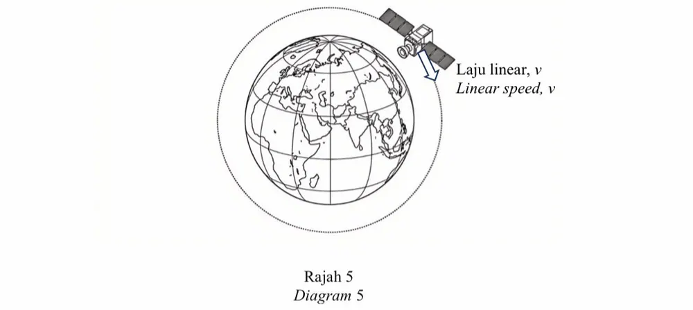
The satellite will escape into outer space.
The satellite will move into a higher orbit.
The satellite will fall into a lower orbit and eventually enter the Earth's atmosphere.
The satellite will remain in the same position but rotate slower.
Trial 2026 Sarawak Q9
Answer
C · Gravity provides the centripetal force mv²/r that keeps the satellite on its circular path at the speed v = √(GM/r). If the speed is lower than this, the gravitational pull is larger than the force needed for the circular path, so the satellite curves inward and falls to a lower orbit, eventually entering the atmosphere. Escaping (A) needs a higher speed (the escape velocity), and a higher orbit (B) needs more speed, not less.
F4 · Heat
10 The table shows the specific heat capacity and boiling point of four liquids, P, Q, R and S, that can be used as the coolant of a car engine. Which liquid is the most suitable?
Liquid
Specific heat capacity / J kg⁻¹ °C⁻¹
Boiling point / °C
P
2400
78
Q
3300
100
R
2100
190
S
4200
130
P
Q
R
S
New
Answer
D · A coolant must absorb a large amount of heat for a small rise in temperature, so it needs a high specific heat capacity, and it must not boil at the engine's working temperature, so it needs a high boiling point. S has the highest specific heat capacity and a high boiling point. R has the highest boiling point but the lowest specific heat capacity, while P would boil too early.
11 0.5 kg of ice at a temperature of 0 °C is heated until all the ice melts into water at 0°C. Given the specific latent heat of fusion of ice is 3.34 × 10⁵ J kg⁻¹. What is the total amount of heat required to melt the ice?
1.67 × 10⁴ J
1.67 × 10⁵ J
3.34 × 10⁴ J
3.34 × 10⁵ J
Trial 2026 Selangor Q13
Answer
B · The temperature stays at 0 °C during melting, so only latent heat is involved: Q = ml = 0.5 × 3.34 × 10⁵ = 1.67 × 10⁵ J. 3.34 × 10⁵ J is just the value of l (the mass was not multiplied in), while the 10⁴ values come from a power-of-ten slip.
12 The diagram shows the temperature–time graph when a solid is heated steadily until it melts completely and the liquid is then heated further. Which statements are correct about the substance during the process PQ?
I The temperature remains constant
II The average kinetic energy of the molecules increases
III Heat absorbed is used to overcome the forces of attraction between the molecules
IV The substance exists only as a solid
I and III only
I and II only
II and IV only
III and IV only
New
Answer
A · The flat section PQ is melting: the temperature is constant (I) and the heat absorbed becomes latent heat used to overcome the forces of attraction between molecules (III). Average kinetic energy depends on temperature, so it does not increase (II is wrong). During melting, solid and liquid exist together (IV is wrong).
13 A sealed aerosol can is left in a car exposed to sunlight. What happens to the pressure of the gas inside the can and why?
The pressure increases because the molecules move faster and hit the walls more often and with greater force.
The pressure decreases because the molecules lose kinetic energy.
The pressure increases because the gas molecules expand and become larger.
The pressure stays constant because the volume of the can does not change.
New
Answer
A · The can has a fixed volume. When the temperature rises, the gas molecules move faster, so they collide with the walls more often and each collision is stronger, hence the pressure increases (pressure law, P ∝ T). The molecules do not grow in size, and a fixed volume does not mean a constant pressure.
F4 · Waves
14 Diagram 9 shows a vibrating tuning fork held near a resonance tube containing an air column above water in a measuring cylinder. What causes the loud sound to be produced in the air column?
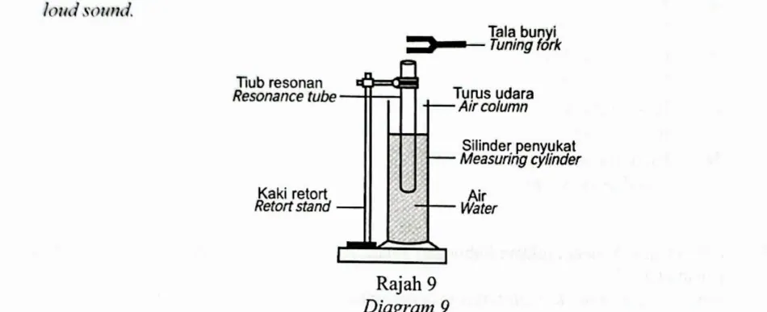
Tuning fork has a mass that is equal to the mass of the air column.
Tuning fork transfers energy to the air column.
Tuning fork has a length that is equal to the length of the air column.
Tuning fork has a frequency that is equal to the natural frequency of the air column.
Trial 2026 KL Q16
Answer
D · The loud sound is produced when the frequency of the vibrating tuning fork equals the natural frequency of the air column, which is resonance, so the air column vibrates with maximum amplitude. Their masses and lengths need not be equal, and energy is transferred in any forced vibration, which is not why the sound becomes loud.
15 Diagram 13 shows a pattern formed by the superposition of two waves with points P and R. Which of the following statements is correct about points P and R?
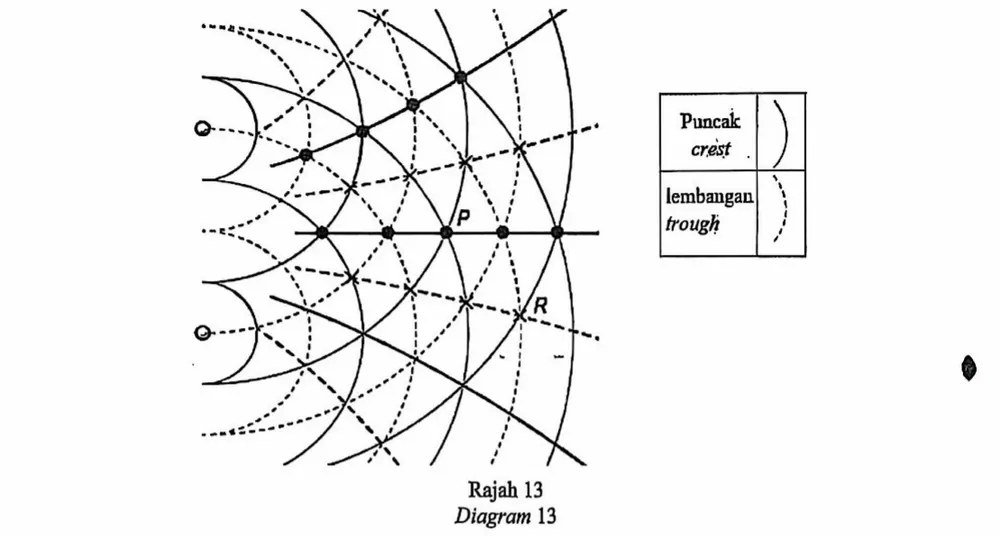
P: constructive interference (two crests) forms a node; R: destructive interference (crest & trough) forms an antinode
P: constructive interference (two troughs) forms a node; R: destructive interference (crest & trough) forms an antinode
P: constructive interference (two crests) forms an antinode; R: destructive interference (crest & trough) forms a node
P: destructive interference (crest & trough) forms an antinode; R: constructive interference (crest & trough) forms a node
Trial 2026 N9 Q16
Answer
C · P is where a crest meets a crest: constructive interference with maximum amplitude, an antinode. R is where a crest meets a trough: destructive interference with minimum amplitude, a node. The other options swap constructive or destructive interference with node or antinode.
16 Which of the following pairs of electromagnetic wave and its use is correct?
Infrared rays: transmitting signals from a television remote control
X-rays: sterilising food and surgical equipment
Ultraviolet rays: detecting broken bones
Microwaves: detecting counterfeit banknotes
New
Answer
A · A remote control sends its signals using infrared rays. Sterilising food and surgical equipment uses gamma rays, detecting broken bones uses X-rays, and detecting counterfeit banknotes uses ultraviolet rays.
F4 · Light & Optics
17 The diagram shows a light ray travelling along a radius of a semicircular glass block and reaching O on the flat surface at an angle of incidence of 42°. The ray emerges along the flat surface. What is the refractive index of the glass?
1.49
1.35
1.11
0.669
New
Answer
A · The ray emerges along the surface, so 42° is the critical angle c. n = 1 / sin c = 1 / sin 42° = 1.49. 1.35 comes from using the 48° angle, 1.11 from using tan 42°, and 0.669 is just sin 42° (a refractive index cannot be less than 1).
18 Diagram 13 shows a light ray propagating through an optical fibre consisting of an inner core and an outer cladding. Which of the following combinations of refractive index for the inner core, nᵢ and outer cladding, nₒ allows the light signal to be reflected most efficiently along the fibre?
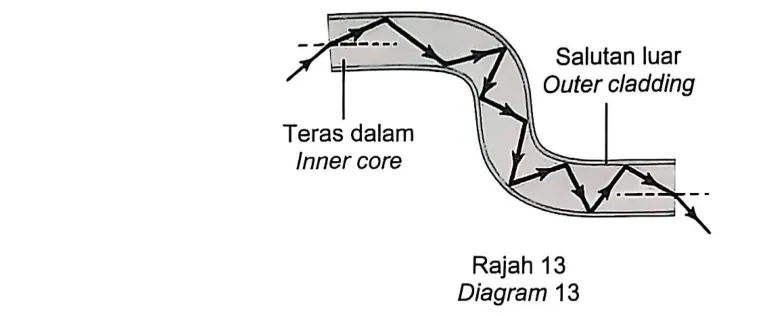
nᵢ = 1.33, nₒ = 1.33
nᵢ = 1.45, nₒ = 1.55
nᵢ = 1.72, nₒ = 1.48
nᵢ = 1.55, nₒ = 1.62
Trial 2026 Terengganu Q20
Answer
C · Light is trapped in an optical fibre by total internal reflection at the core–cladding boundary. This needs the core to have a higher refractive index than the cladding. Only C satisfies this (1.72 > 1.48): A has no difference in index, and B and D have a cladding that is denser than the core.
19 Diagram 16 shows an object is placed in front of a convex lens to study the characteristics of the formation of images. What are the characteristics of the image formed if the focal length of the lens is 10 cm?
Real, inverted and diminished
Real, inverted and same size as the object
Real, inverted and magnified
Virtual, upright and magnified
Trial 2026 Melaka Q18
Answer
B · The object distance u = 20 cm = 2f (f = 10 cm). 1/v = 1/10 − 1/20 = 1/20, so v = 20 cm and the magnification m = v/u = 1. The image is real, inverted and the same size as the object. A diminished image needs u > 2f and a magnified image needs f < u < 2f.
20 A convex mirror is fixed at a blind corner on a narrow road so that drivers can see oncoming vehicles. Why is a convex mirror used?
It forms a real, inverted image that is easy to see.
It forms a virtual, upright and diminished image and gives a wider field of view.
It forms a virtual, upright and magnified image of the vehicle.
It converges the light from vehicles to a focal point in front of the mirror.
New
Answer
B · A convex mirror diverges parallel rays, so its image is always virtual, upright and diminished, and a wide area can be seen. A real, inverted or magnified image is formed by a concave mirror, and converging light to a focal point is a property of a concave mirror.
F5 · Force & Motion II
21 Which of the following phenomenon shows forces in equilibrium?
A coconut falling from a tree
A rocket accelerates upwards
An elevator starting to move downwards
A picture is hanging on the wall
Trial 2026 Perak Q23
Answer
D · Forces are in equilibrium when the resultant force is zero, so the object is at rest or moving with constant velocity. The picture hanging on the wall is at rest because its weight is balanced by the tension in the wire. The falling coconut, the rocket and the elevator starting to move are all accelerating, so each has a resultant force.
22 The diagram shows a lamp of mass 8.0 kg hanging in equilibrium from two identical cables fixed to two posts. Each cable makes an angle of 40° with the horizontal.
What is the tension in each cable? [g = 9.81 m s⁻²]
39.2 N
61.0 N
51.2 N
122 N
New
Answer
B · In equilibrium the upward vertical components of the two tensions balance the weight: 2T sin 40° = mg = 8.0 × 9.81 = 78.5 N, so T = 78.5 ÷ (2 × 0.643) = 61.0 N. The value 39.2 N ignores the angle (T = W/2), 51.2 N wrongly uses cos 40° for the vertical component, and 122 N forgets that there are two cables.
F5 · Pressure
23 Diagram 19 shows a helium gas weather balloon floating at a constant altitude. Why does the balloon float at constant altitude?
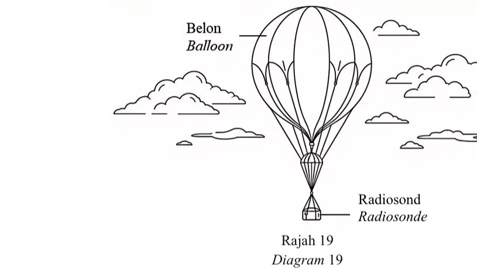
The gas pressure inside the balloon is equal to the atmospheric pressure surrounding.
The buoyant force acting on the balloon is equal to the weight of the helium gas inside it.
The weight of the air displaced by the balloon is equal to the total weight of the weather balloon.
The density of the helium gas inside the balloon is equal to the density of the air at that altitude.
Trial 2026 Sarawak Q26
Answer
C · A balloon floating at constant altitude is in equilibrium, so the upward buoyant force equals the total weight of the balloon, its helium and its equipment. By Archimedes' principle the buoyant force equals the weight of the air displaced, so the weight of air displaced equals the total weight of the balloon system. B is wrong because the buoyant force balances the weight of the whole system, not the helium alone.
24 The diagram shows the streamlines of air flowing past the wing of an aeroplane in flight.
Which statement explains how the lift force is produced?
Air above the wing flows slower, so the pressure above is higher than the pressure below.
Air above the wing flows faster, so the pressure above is lower than the pressure below.
Air above the wing flows faster, so the pressure above is higher than the pressure below.
Air above the wing flows slower, so the pressure above is lower than the pressure below.
New
Answer
B · The streamlines are closer together above the wing, so the air flows faster there. By Bernoulli's principle faster-flowing air has lower pressure, so the pressure above is lower than below, and the higher pressure underneath pushes the wing upwards as the lift force. Option A fits Bernoulli's principle but would push the wing downwards, as a spoiler does on a racing car.
25 Diagram 18 shows a bottle becoming dented after the air is completely sucked out. Why is the bottle dented?
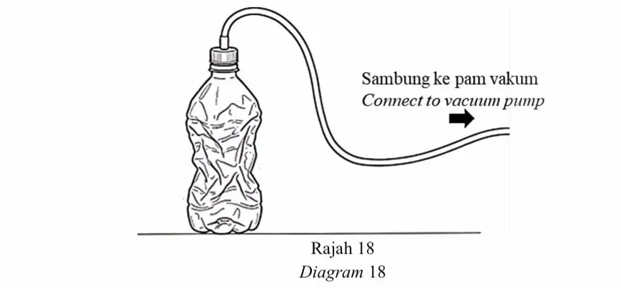
The pressure inside the bottle increases.
The Earth's gravitational force acts stronger on the vacuumised bottle.
The atmospheric pressure outside the bottle is greater than the air pressure inside the bottle.
The air particles outside the bottle collide with the outer wall of the bottle at a higher speed.
Trial 2026 Sarawak Q25
Answer
C · When the air is pumped out, the pressure inside the bottle becomes much lower than the atmospheric pressure outside. The greater atmospheric pressure pushes the walls of the bottle inwards and it is dented. Gravity does not change (B), and the pressure inside the bottle decreases rather than increases (A).
F5 · Electricity
26 The nichrome heating element in an electric kettle is connected to a constant 240 V supply. Using the same nichrome material, which changes will make the element produce heat at a higher rate?
I Use a longer wire.
II Use a shorter wire.
III Use a thicker wire.
IV Use a thinner wire.
I and II only
I and IV only
III and IV only
II and III only
New
Answer
D · At constant voltage the rate of heating is P = V²/R, so the element needs a smaller resistance. Since R = ρl/A, this needs a shorter wire (II) or a thicker wire with a larger cross-sectional area A (III). A longer (I) or thinner (IV) wire has a larger resistance and produces less power.
27 Two identical dry cells, each with an e.m.f. of 1.5 V and an internal resistance of 0.50 Ω, are connected (i) in series and (ii) in parallel. Which row gives the correct total e.m.f. and total internal resistance of the two combinations?
Series: 3.0 V, 0.50 Ω; Parallel: 1.5 V, 0.50 Ω
Series: 3.0 V, 0.25 Ω; Parallel: 1.5 V, 1.00 Ω
Series: 1.5 V, 1.00 Ω; Parallel: 3.0 V, 0.25 Ω
Series: 3.0 V, 1.00 Ω; Parallel: 1.5 V, 0.25 Ω
New
Answer
D · In series the e.m.f.s and the internal resistances both add: ε = 1.5 + 1.5 = 3.0 V and r = 0.50 + 0.50 = 1.00 Ω. In parallel the e.m.f. stays the same as one cell, 1.5 V, but the internal resistances combine like parallel resistors: 1/r = 1/0.50 + 1/0.50, so r = 0.25 Ω. Option A wrongly assumes the internal resistance does not change.
28 Diagram 23 shows one electrical circuit connected with four identical resistors R: two in series and two in parallel, on a 12 V supply with current 1.0 A. What is the value of R?
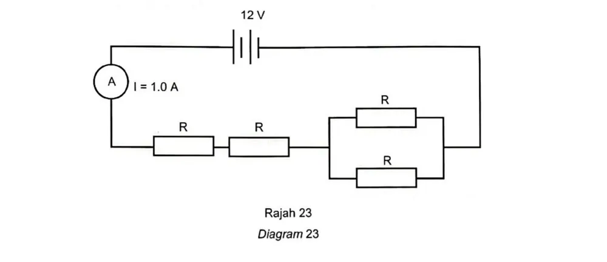
0.5 Ω
2.8 Ω
4.8 Ω
6.5 Ω
Trial 2026 Kedah Q31
Answer
C · Two resistors R in parallel give R/2, and this is in series with R + R, so the total resistance = R + R + R/2 = 2.5R. From V = IR: 12 = 1.0 × 2.5R, so R = 4.8 Ω. Treating the parallel pair as an ordinary R would give a total of 4R and R = 3.0 Ω, which is wrong.
29 Diagram 13 shows a negatively charged particle is stationary between two parallel metal plates connected to an Extra High Tension (E.H.T) power supply. What will happen to the particle if the voltage of the E.H.T power supply is increased?
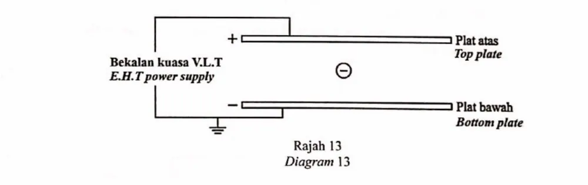
The particle remains stationary
The particle accelerates to the left
The particle deflected towards the top plate
The particle deflected towards the bottom plate
Trial 2026 Perak Q27
Answer
C · The stationary negative particle is balanced by an upward electric force (towards the positive top plate) equal to its weight. When the E.H.T. voltage is increased, the electric field E = V/d increases, so the upward force becomes larger than the weight and the particle moves up towards the top plate. It does not move sideways because the field is vertical.
F5 · Electromagnetism
30 Diagram 30 shows a wire QR hanging freely between two strong magnets. Which of the following is correct?
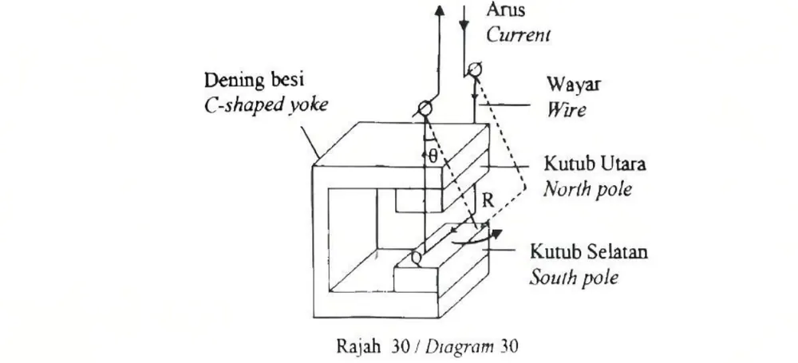
The higher the current, the lower the deflection angle
The lower the current, the higher the deflection angle
The higher the distance between two magnets, the higher the deflection angle
The lower the distance between two magnets, the higher the deflection angle
Trial 2026 Pahang Q33
Answer
D · The force on the wire is F = BIL. When the distance between the two magnets is decreased, the magnetic field B becomes stronger, so the force and the deflection angle increase. A higher current gives a larger force, not a smaller one, so the first two options are the wrong way round.
31 Which of the following methods reduce the loss of energy in transformers and in the transmission of electrical energy?
I Using a laminated soft iron core in the transformer
II Transmitting the electrical energy at a very high voltage
III Using thin cables of high resistivity for the transmission lines
IV Using a solid steel core in the transformer
I and III only
II and IV only
III and IV only
I and II only
New
Answer
D · I and II are correct: a laminated soft iron core reduces eddy currents, and transmitting at a very high voltage lowers the current in the cables, so the I²R power loss falls. III and IV are wrong: thin cables of high resistivity increase resistance and heating, and a solid steel core increases eddy currents and hysteresis loss.
32 Diagram 27 shows a transformer with 85% efficiency. Calculate the input current in primary coil.
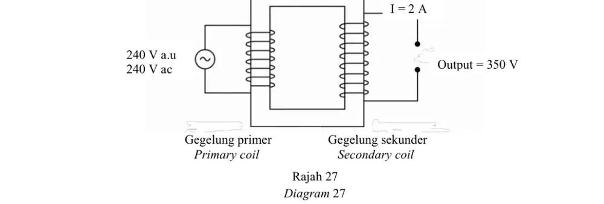
2.25 A
2.45 A
3.43 A
4.25 A
Trial 2026 Melaka Q33
Answer
C · Output power = 350 V × 2 A = 700 W. An efficiency of 85% means input power = 700/0.85 = 823.5 W. Primary current Iₚ = 823.5/240 = 3.43 A. Dividing by the efficiency is essential, because the input power is larger than the output power.
F5 · Electronics
33 The diagram shows the electron beam in a cathode ray oscilloscope (CRO). The upper deflecting plate is connected to the positive terminal of a power supply and the lower plate to the negative terminal. Which of the following describes the path of the beam?
Curves downwards between the plates, then travels in a straight line to Z
Travels in a straight line to Y because electrons are not affected by an electric field
Curves upwards all the way from the plates to X
Curves upwards between the plates, then travels in a straight line to X
New
Answer
D · Electrons are negatively charged, so they are attracted towards the positive plate at the top and are deflected upwards along a curved path between the plates, where the electric field acts. After leaving the plates no force acts on them, so the beam travels in a straight line to X.
34 Diagram shows a transistor circuit. Which of the following is true?
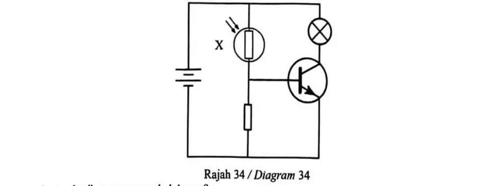
Component X: Light Dependent Resistor | Bulb lights up: night
Component X: Light Dependent Resistor | Bulb lights up: day
Component X: Thermistor | Bulb lights up: night
Component X: Thermistor | Bulb lights up: day
Trial 2026 Pahang Q37
Answer
B · Component X, which receives light, is a light dependent resistor (LDR). In the daytime the LDR has a low resistance, so a larger share of the supply voltage falls across the fixed resistor below it, which is the base voltage. The transistor switches on, a collector current flows and the bulb lights up in the day.
35 Diagram 29 shows an electronic circuit which consists of a diode. Which statement is correct? I The bulb lights up II The bulb not lights up III Diode is in forward biased IV Diode is in reverse biased
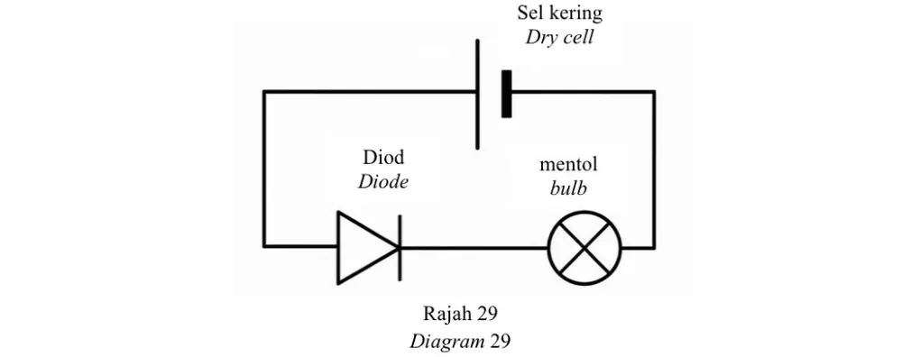
I and III only
I and II only
II and III only
II and IV only
Trial 2026 Melaka Q35
Answer
A · The long plate of the dry cell is the positive terminal and it is connected to the anode of the diode (the flat side of the triangle). The diode is forward biased and has a low resistance, so current flows and the bulb lights up. Statements I and III are correct.
F5 · Nuclear Physics
36 A doctor wants to inject a radioisotope into a patient's blood to trace the blood flow using a detector outside the body. The table shows four radioisotopes.
Radioisotope
Radiation
Half-life
P
Gamma
6 hours
Q
Gamma
20 years
R
Alpha
6 hours
S
Beta
5 days
Which radioisotope is the most suitable?
P
Q
R
S
New
Answer
A · A tracer must emit gamma rays because only gamma rays are penetrating enough to leave the body and be detected; alpha and beta are absorbed by tissue. The half-life must be short (a few hours) so the activity falls quickly and the dose to the patient is small. Q is a gamma emitter but stays radioactive in the body for years, while R and S cannot be detected outside the body.
37 Diagrams 31 shows a nuclear reactor. What is the function of moderator?
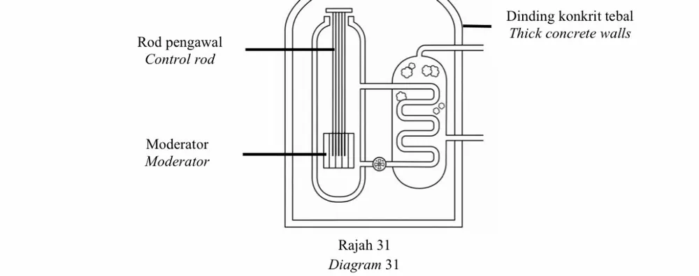
Control the reaction rate.
Slow down the fast moving neutron.
As fuel to produce nuclear energy.
Absorb heat energy from the chain reaction.
Trial 2026 Melaka Q38
Answer
B · The moderator, such as graphite or heavy water, slows fast neutrons down to thermal neutrons so that they are more likely to cause further fission of uranium-235. The control rods control the reaction rate, the fuel produces the nuclear energy and the coolant absorbs the heat.
38 Diagram 18 shows a series of radioactive decays for the nucleus of Uranium-238 to nucleus Radium-226. What is the number of the alpha particles and beta particles emitted during this process?
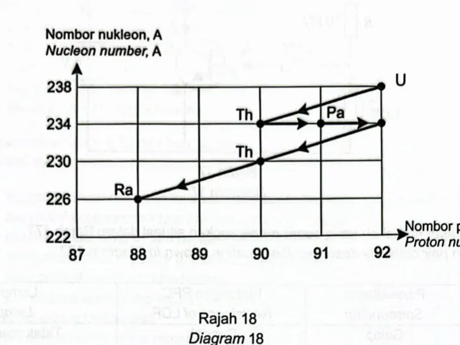
Alpha particles: 1, Beta particles: 1
Alpha particles: 2, Beta particles: 3
Alpha particles: 3, Beta particles: 2
Alpha particles: 4, Beta particles: 1
Trial 2026 Kelantan Q36
Answer
C · The nucleon number falls from 238 to 226, a change of 12, so 12 ÷ 4 = 3 alpha particles. Three alpha particles reduce the proton number by 6 (92 → 86), but radium has 88, so 2 beta particles are needed to raise it. The answer is 3 alpha and 2 beta, matching the graph (3 diagonal arrows and 2 horizontal arrows).
F5 · Quantum Physics
39 A green light has a wavelength of 540 nm. How much energy is in the photon of the light? [Planck's constant, h = 6.63 × 10⁻³⁴ J s] [Speed of light in vacuum, c = 3.0 × 10⁸ ms⁻¹]
1.28 × 10⁻¹⁷ J
3.68 × 10⁻¹⁹ J
3.58 × 10⁻⁵⁰ J
1.19 × 10⁻⁵⁸ J
Trial 2026 Terengganu Q39
Answer
B · The photon energy is E = hf = hc/λ = (6.63 × 10⁻³⁴ × 3.0 × 10⁸)/(540 × 10⁻⁹) = 3.68 × 10⁻¹⁹ J. The wavelength must be converted to metres (1 nm = 10⁻⁹ m), otherwise the answer is wrong by many orders of magnitude.
40 Diagram 21 shows the graph of the maximum kinetic energy of photoelectron, K_max against the frequency of light, f for metals A, B, C and D. Which of the metals A, B, C and D, that has the least work function?
A
B
C
D
Trial 2026 Perak Q39
Answer
A · K_max = hf − W = hf − hf₀, so all the lines are parallel (gradient = h) and the intercept on the frequency axis is the threshold frequency f₀. The work function is W = hf₀, so the metal with the smallest intercept, A, has the least work function.
F4 · Measurement
1 Which of the following S.I. unit for physical quantities is correct?
Area — cm³
Velocity — ms⁻²
Momentum — kg ms⁻¹
Density — kg m⁻²
Trial 2026 N9 Q1
Answer
C · Momentum = mass × velocity, so its unit is kg × m s⁻¹ = kg m s⁻¹. The others are wrong: area is in m² (cm³ is a unit of volume and is not an SI unit), velocity is in m s⁻¹ (m s⁻² is the unit of acceleration) and density is in kg m⁻³ (kg m⁻² is mass per unit area).
F4 · Force & Motion
2 A stone is thrown up and let falling back onto the floor. Which of the following acceleration-time graphs represents the motion of the stone?
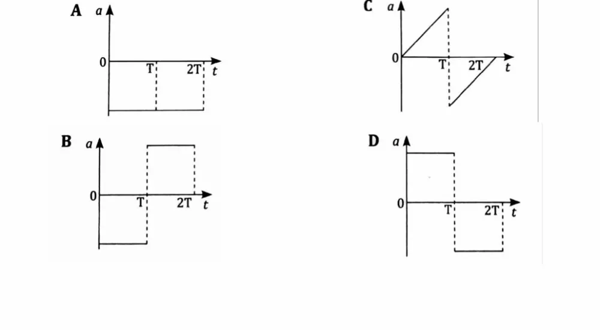
Graph A
Graph B
Graph C
Graph D
Trial 2026 Perlis Q2
Answer
A · While the stone rises, slows and falls back, the only force on it is its weight, so the acceleration stays constant at g = 9.81 m s⁻² downward (negative if upward is taken as positive). The a–t graph is a single horizontal line below the time axis from 0 to 2T (graph A). Graphs B and D suggest the acceleration changes direction at the highest point, which is the misconception that the stone accelerates upward and then downward.
3 Ahmad throws a stone upwards vertically with an initial velocity of 20 m s⁻¹. What is the maximum height that the stone can reach if the air resistance is neglected? [Gravitational acceleration, g = 9.81 m s⁻²]
10.39 m
20.39 m
30.39 m
40.49 m
Trial 2026 Kelantan Q3
Answer
B · At the maximum height v = 0, so 0 = u² − 2gs and s = u²/(2g) = 20² ÷ (2 × 9.81) = 20.4 m. Option D is roughly double the correct height, the result of leaving out the factor of 2 in s = u²/2g.
4 A magician pulls a tablecloth quickly from under some plates and the plates stay almost in place. Which combination of plates and tablecloth is most likely to make the trick succeed?
Light plates and a rough tablecloth
Light plates and a smooth tablecloth
Heavy plates and a rough tablecloth
Heavy plates and a smooth tablecloth
New
Answer
D · Heavy plates have a larger mass and therefore a larger inertia: they resist a change in their state of rest more. A smooth cloth that is pulled quickly exerts only a small friction force for a short time, so the plates hardly move. A rough cloth (A, C) and light plates (A, B) make the plates more likely to be dragged along.
5 A cloth of mass 0.18 kg is fired from a cannon of mass 3.5 kg at a speed of 55 m s⁻¹. What is the recoil velocity of the cannon?
0.07 m s⁻¹
0.63 m s⁻¹
2.83 m s⁻¹
9.90 m s⁻¹
Trial 2026 SBP Q7
Answer
C · The total momentum before firing is zero, so m(cloth)v(cloth) + MV = 0. The magnitude of the recoil velocity V = (0.18 × 55) ÷ 3.5 = 2.83 m s⁻¹, opposite to the direction of the cloth. Option D (9.90 m s⁻¹) is the momentum 0.18 × 55 not divided by the mass of the cannon.
6 In sports, a soccer player will follow-through while kicking the ball. What is the main purpose of this action?
To prevent injuries to the players' knee joint
To shorten the contact time between the foot and the ball
To reduce the impulsive force acting on the foot
To increase the impulse so that the ball moves with a higher velocity
Trial 2026 Kelantan Q6
Answer
D · Impulse = Ft = change in momentum. Following through keeps the foot in contact with the ball for longer, so for a given force the impulse is larger and the ball leaves the foot with a higher velocity. Shortening the contact time (B) would reduce the impulse, and preventing injury is not the main purpose.
7 An astronaut with a mass of 75 kg can jump 40 cm from the surface of the Earth. Which of the following statements is correct if the astronaut jumped on the Moon?
I The height of jumping increases.
II The time of landing increases.
III The velocity during landing increases.
IV Acceleration increases.
I and II
I and III
II and III
II and IV
Trial 2026 Terengganu Q10
Answer
A · On the Moon, g is about one-sixth of its value on Earth while the take-off velocity is unchanged. The jump height h = u²/2g increases (I) and the time in the air t = 2u/g increases (II). The landing velocity equals the take-off velocity, so it does not increase (III), and the acceleration decreases because g is smaller (IV).
F4 · Gravitation
8 A planet has a mass of 6.40 × 10²³ kg and a radius of 3.40 × 10⁶ m. What is the gravitational field strength at the surface of the planet? [G = 6.67 × 10⁻¹¹ N m² kg⁻²]
0.923 N kg⁻¹
3.69 N kg⁻¹
7.39 N kg⁻¹
12.6 N kg⁻¹
New
Answer
B · g = GM/r² = (6.67 × 10⁻¹¹ × 6.40 × 10²³) ÷ (3.40 × 10⁶)² = 4.27 × 10¹³ ÷ 1.156 × 10¹³ = 3.69 N kg⁻¹. Option A results from using the diameter in place of the radius, while option D results from squaring only the power of ten of the radius.
9 A satellite moves around the Earth in a circular orbit at a constant speed. Which statement is correct?
The gravitational force on the satellite acts along its direction of motion.
The resultant force on the satellite is zero because its speed is constant.
The centripetal force acts away from the centre of the Earth.
The gravitational force acts towards the centre of the Earth and provides the centripetal force.
New
Answer
D · The direction of motion of the satellite keeps changing, so it accelerates towards the centre of the orbit; the unbalanced force needed is the Earth's gravitational pull, which is always perpendicular to its velocity and provides the centripetal force F = mv²/r. A constant speed does not mean the resultant force is zero (B), because velocity is a vector quantity.
10 Diagram 3 shows a comet orbiting the Sun in an elliptical orbit. The comet takes 30 days to move from P to Q and also 30 days to move from R to S.
Which statement is correct?
The comet moves faster from R to S because the gravitational force is larger there.
The comet moves faster from P to Q than from R to S because P and Q are nearer to the Sun.
The areas swept by the line joining the comet and the Sun are different because arc PQ and arc RS have different lengths.
The comet moves at a constant speed because the areas swept are equal.
New
Answer
B · Kepler's second law: the line joining the comet and the Sun sweeps out equal areas in equal times. Near the Sun this line is short, so the comet must travel along a longer arc (PQ) to sweep the same area; its speed is higher there. Option C is wrong because the areas are equal, and D confuses equal areas with equal speed.
F4 · Heat
11 Diagram 2 shows four blocks, P, Q, R and S with different specific heat capacity but have the same mass and initial temperature, were heated on the stove by the same amount of heat energy. Specific heat capacity, c: P = 850 J kg⁻¹°C⁻¹, Q = 550 J kg⁻¹°C⁻¹, R = 350 J kg⁻¹°C⁻¹, S = 150 J kg⁻¹°C⁻¹. Which block will have the lowest temperature increase after being heated for 5 minutes?
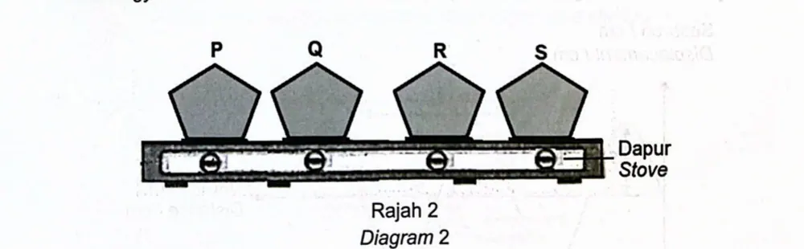
P
Q
R
S
Trial 2026 Kelantan Q11
Answer
A · The mass and the heat supplied are the same, so the temperature rise Δθ = Q / mc is inversely proportional to the specific heat capacity c. P has the largest c (850 J kg⁻¹ °C⁻¹), so it has the smallest temperature rise. S, with the smallest c, becomes the hottest.
12 Diagram 8 shows the injury on a hand that is caused by steam. Which of the following statement explains this phenomenon most accurately?
Steam absorbs heat from the skin more rapidly.
The specific heat capacity of steam is greater than water.
Steam has a higher temperature than boiling water.
Steam releases a large amount of specific latent heat when it condenses on the skin.
Trial 2026 Sarawak Q12
Answer
D · When steam at 100 °C condenses on the skin it releases a large amount of latent heat of vaporisation (2.26 × 10⁶ J for every kg), in addition to cooling down. Boiling water at 100 °C releases far less heat. Steam is not hotter than boiling water because both are at 100 °C.
13 A gas has a volume of 100 cm³ at a pressure of 120 kPa. If the gas pressure increases to 200 kPa at constant temperature, what is the new volume of the gas?
40 cm³
50 cm³
60 cm³
80 cm³
Trial 2026 Perlis Q11
Answer
C · The temperature is constant, so Boyle's law p₁V₁ = p₂V₂ applies: V₂ = (120 × 100) / 200 = 60.0 cm³. When the pressure increases the volume decreases, but the ratio is 120/200, not 100/200, so 50 cm³ is wrong.
F4 · Waves
14 The diagram shows a displacement–distance graph of a wave travelling with a frequency of 5.0 Hz. The distance between crest P and crest Q is 80 cm. What is the speed of the wave?
1.00 m s⁻¹
2.00 m s⁻¹
4.00 m s⁻¹
12.5 m s⁻¹
New
Answer
B · From P to Q there are two complete waves, so the wavelength λ = 80 / 2 = 40 cm = 0.40 m. v = fλ = 5.0 × 0.40 = 2.00 m s⁻¹. 4.00 m s⁻¹ treats 80 cm as one wavelength, 1.00 m s⁻¹ uses 20 cm, and 12.5 m s⁻¹ uses v = f / λ.
15 Diagram 10 shows sound waves from a sound source reflected by a concrete wall. Which characteristics of wave will change after being reflected?
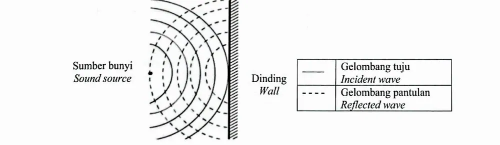
Speed
Frequency
Wavelength
Direction of wave propagation
Trial 2026 KL Q17
Answer
D · After reflection the wave stays in the same medium and its source does not change, so the speed, frequency and wavelength are unchanged. Only the direction of propagation changes, following angle of incidence = angle of reflection.
16 Diagram 4 shows water wave propagating through a small slit. Which characteristics of the diffracted wave is correct?
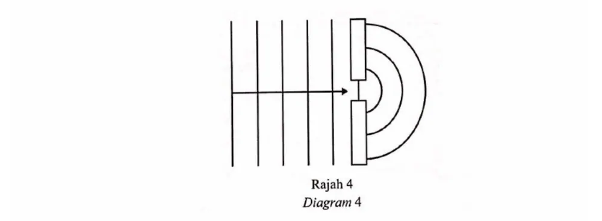
The wavelength decreases
The amplitude decreases
The frequency increases
The speed decreases
Trial 2026 Perak Q15
Answer
B · After passing through the gap the wave is still in the same medium with the same source, so its speed, wavelength and frequency are unchanged. The wave energy spreads over a larger arc, so the amplitude decreases and the wave becomes weaker.
17 Diagram 13 shows two speakers connected to an audio signal generator producing a series of loud and soft sounds alternately. Which of the following causes the distance between two consecutive loud sounds to increase?
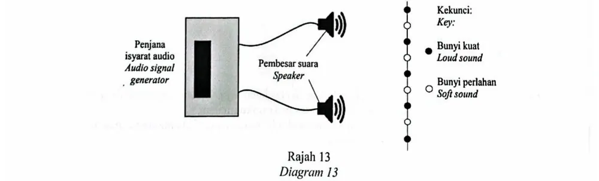
The frequency of sound decreases.
The wavelength decreases.
The distance between two speakers increases.
The perpendicular distance from the speakers and the position where the series of loud and soft sounds is produced decreases.
Trial 2026 KL Q20
Answer
A · The distance between two consecutive loud sounds is x = λD/a. When the frequency decreases, λ = v/f increases, so x increases. A larger speaker separation a, a smaller perpendicular distance D, or a smaller λ would all decrease x.
F4 · Light & Optics
18 A swimming pool is 2.00 m deep. When viewed vertically from above, the bottom of the pool appears to be 1.50 m below the water surface. What is the refractive index of the water?
0.500
0.750
1.33
1.50
New
Answer
C · The refractive index n = real depth / apparent depth = 2.00 / 1.50 = 1.33. 0.750 comes from inverting the ratio, 1.50 is just the apparent depth itself, and 0.500 is the difference between the two depths.
19 A student uses a convex lens as a magnifying glass to produce an image of an ant which is virtual, upright and magnified. Where is the position of the object, u, that is most suitable for this situation?
u < f
u = f
f < u < 2f
u > 2f
Trial 2026 Kelantan Q20
Answer
A · A convex lens acts as a magnifying glass when the object is placed within the focal length (u < f), giving a virtual, upright and magnified image. At u = f no image is formed, f < u < 2f gives a real, inverted, magnified image, and u > 2f gives a real, diminished image.
20 The focal lengths of the objective lens and the eyepiece of an astronomical telescope and a compound microscope are compared. Which combination is correct?
Telescope: objective 5 cm, eyepiece 90 cm; microscope: objective 0.8 cm, eyepiece 4 cm
Telescope: objective 90 cm, eyepiece 5 cm; microscope: objective 4 cm, eyepiece 0.8 cm
Telescope: objective 5 cm, eyepiece 90 cm; microscope: objective 4 cm, eyepiece 0.8 cm
Telescope: objective 90 cm, eyepiece 5 cm; microscope: objective 0.8 cm, eyepiece 4 cm
New
Answer
D · An astronomical telescope needs an objective lens of long focal length to collect light and an eyepiece of short focal length so that the magnification fo/fe is large. A compound microscope needs an objective lens whose focal length is shorter than that of the eyepiece. The other options reverse one or both pairs.
F5 · Force & Motion II
21 The diagram shows a student pulling a toy cart of mass 5.0 kg with a force of 40 N through a string that makes an angle of 60° with the horizontal floor. The friction between the cart and the floor is 12 N.
What is the acceleration of the cart?
4.00 m s⁻²
1.60 m s⁻²
4.53 m s⁻²
5.60 m s⁻²
New
Answer
B · Only the horizontal component of the pull moves the cart: F cos 60° = 40 × 0.5 = 20 N. The resultant force = 20 − 12 = 8 N, so a = F/m = 8 ÷ 5.0 = 1.60 m s⁻². The value 4.53 uses sin 60° (the vertical component), 4.00 ignores friction, and 5.60 ignores the angle.
22 The diagram shows three identical springs, each with a spring constant of 60 N m⁻¹, connected to support a load of mass 2.0 kg. Two springs are connected in parallel and this combination is connected in series with the third spring.
What is the total extension of the spring system? [g = 9.81 m s⁻²]
0.109 m
0.491 m
0.164 m
0.981 m
New
Answer
B · Two springs in parallel have a combined spring constant of 60 + 60 = 120 N m⁻¹. This combination is in series with the third spring, so k = (120 × 60) ÷ (120 + 60) = 40 N m⁻¹. Then x = F/k = (2.0 × 9.81) ÷ 40 = 0.491 m. Treating all three springs as parallel (k = 180 N m⁻¹) gives 0.109 m, the tempting mistake.
F5 · Pressure
23 Diagram 25 shows a hydraulic brake system for a car. A driver steps on the brake pedal of the car. Which modification can increase the force acting on piston Q?
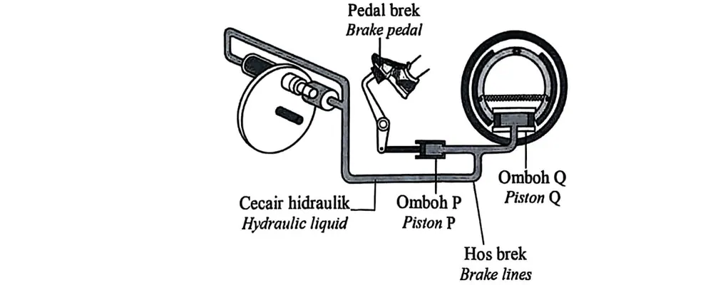
Increase the diameter of brake lines
Decrease the diameter of brake lines
Increase the surface area of piston Q
Decrease the surface area of piston Q
Trial 2026 Pahang Q28
Answer
C · By Pascal's principle the pressure applied at the brake pedal is transmitted equally through the liquid, so F₂/A₂ = F₁/A₁ and the force on piston Q is F₂ = F₁ × A₂/A₁. A larger area of piston Q gives a larger force. The diameter of the brake lines does not appear in the relationship, so changing it does not change the force (A and B).
24 Diagram 11 shows a student blowing strongly between two candle flames. Why do the candle flames come closer to each other when being blown?
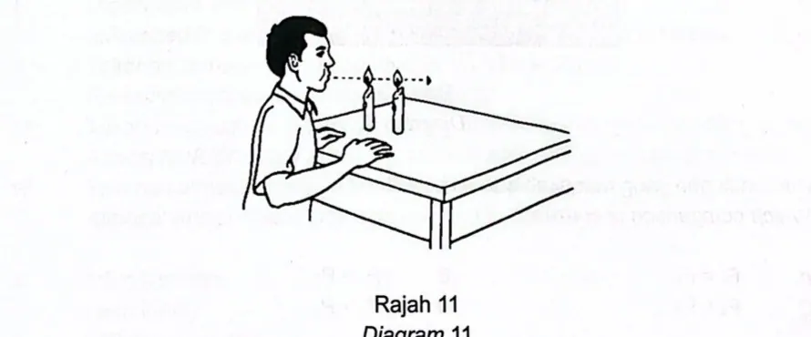
Temperature between the candle flames becomes low
Exist a vacuum area between the candle flames
Pressure between the candle flames becomes low
Hot air in the bottom of the candles rises
Trial 2026 Kelantan Q28
Answer
C · Air blown fast between the two flames has a lower pressure (Bernoulli's principle). The higher atmospheric pressure on the outer sides of the flames pushes them towards each other. Option B is wrong because the pressure there is only lower, not zero or a vacuum.
25 Which of the following statements is true to explain atmospheric pressure?
I Influenced by the weight of the air layer in the Earth's atmosphere
II Pressure decreases as altitude increases
III Atmospheric pressure at the top of a mountain is higher than at sea level
IV Atmospheric pressure only acts from top to bottom
I and II only
III and IV only
I, III and IV only
I, II, III and IV
Trial 2026 Kelantan Q24
Answer
A · Atmospheric pressure is caused by the weight of the air layer above (I is true) and it decreases with altitude because there is less air above (II is true). The pressure at the top of a mountain is lower, not higher (III is false), and atmospheric pressure acts in all directions, not only downwards (IV is false).
F5 · Electricity
26 Diagram 17 shows an electric kettle that is used for 15 minutes to boil water. How much heat energy that is produced by the electrical kettle?
3.0 × 10⁴ J
3.2 × 10⁴ J
1.8 × 10⁶ J
7.2 × 10⁶ J
Trial 2026 Perlis Q31
Answer
C · E = Pt with P = 2000 W and t = 15 × 60 = 900 s, so E = 2000 × 900 = 1.8 × 10⁶ J. The value 3.0 × 10⁴ J comes from using 15 minutes directly without converting to seconds (2000 × 15).
27 Diagram 23 shows a simple circuit system for the headlight in a car. Starter motor requires large current to function. When switch S₁ is closed, the headlight lights up with normal brightness. When switch S₂ is closed to activate the starter motor, the headlight becomes dim for a while. Explain this situation.
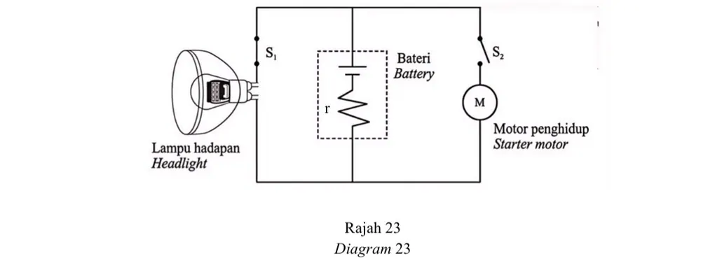
The internal resistance, r of the battery increases due to the heat of the car engine.
The entire electromotive force (e.m.f) of the battery is converted into kinetic energy by the starter motor, M alone.
The parallel circuit arrangement causes the electric current to split equally into two between the lights and the starter motor, M.
The functioning starter motor, M increases the voltage drop of battery and reduces the terminal potential difference.
Trial 2026 Sarawak Q30
Answer
D · The starter motor draws a large current from the battery. The voltage lost across the internal resistance, Ir, increases, so the terminal potential difference V = ε − Ir falls and the headlight receives a lower voltage and becomes dim. The internal resistance is a property of the battery and does not change noticeably because of engine heat (A); it is the larger current that causes the larger voltage drop.
28 Diagram 13 shows a graph of V against I for an electrical experiment. Negative gradient of the graph in Diagram 13 represents
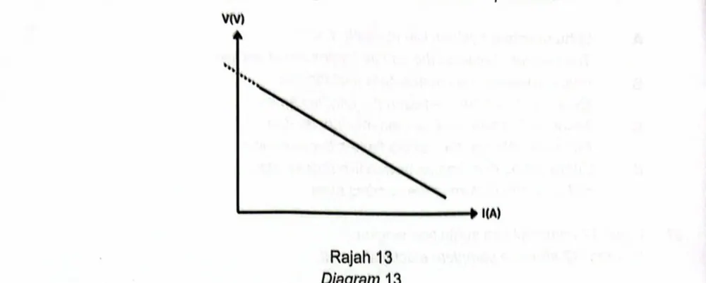
electric current
potential difference
electromotive force
internal resistance
Trial 2026 Kelantan Q30
Answer
D · For a cell, V = ε − Ir, so the graph of V against I is a straight line with a negative gradient. The magnitude of the gradient equals the internal resistance, r, while the intercept on the V-axis equals the e.m.f., ε. The gradient of a V–I graph is not the current or the potential difference, because those are the variables plotted on the axes.
29 Table 2 shows two types of lamps that produce the same output power after 5 minutes.
Type of lamp
Input power / W
Output power / W
LED
18
10
Filament
60
10
Based on Table 2, which statement is correct?
The energy efficiency of LED lamp is higher because the loss of energy is lower.
The energy efficiency of LED lamp is higher because the loss of energy is higher.
The energy efficiency of filament lamp is higher because the loss of energy is lower.
The energy efficiency of filament lamp is higher because the loss of energy is higher.
Trial 2026 MRSM Q31
Answer
A · Efficiency = output power ÷ input power × 100%: LED = 10 ÷ 18 = 56%, filament = 10 ÷ 60 = 17%. The LED wastes only 8 W as heat while the filament wastes 50 W, so the LED is more efficient because its energy loss is lower. B is wrong because a higher energy loss would make the efficiency lower, not higher.
F5 · Electromagnetism
30 Diagram 20 shows a simple electric motor. What changes need to be made to convert the motor into an alternating current generator?
Replace the dry cell to a bulb and reverse the polarity of the magnet
Replace the dry cell to a bulb and replace the commutator to a slip ring
Replace the dry cell to an alternating current power supply and use a commutator
Replace the dry cell to an alternating current power supply and replace the commutator to a slip ring
Trial 2026 Selangor Set 1 Q34
Answer
B · A d.c. motor uses a battery and a commutator. To convert it into an a.c. generator, the battery is replaced by a bulb (to show the output) and the commutator is replaced by slip rings so that the alternating current is delivered to the outside. A generator does not need an a.c. supply because it produces the current itself.
31 Diagram 25 shows the catapult field that is produced when a current-carrying conductor is placed in a permanent magnetic field. Which of the following pair is correct?
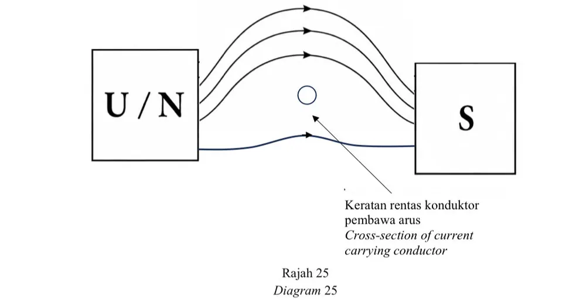
Direction of current: Out of the paper | Direction of motion: Downward
Direction of current: Out of the paper | Direction of motion: Upward
Direction of current: Into the paper | Direction of motion: Upward
Direction of current: Into the paper | Direction of motion: Downward
Trial 2026 Sarawak Q32
Answer
D · The field lines are crowded above the conductor and sparse below it, so the catapult force acts downwards (from the strong field to the weak field). By Fleming's left-hand rule: first finger to the right (field N to S), thumb downwards (force), so the second finger (current) points into the paper.
32 The north pole of a bar magnet is pushed towards one end of a solenoid connected to a galvanometer. According to Lenz's law, what is the polarity of the end of the solenoid nearest the magnet, and what is the effect of the induced current?
North pole; the induced current opposes the motion of the magnet
South pole; the induced current opposes the motion of the magnet
North pole; the induced current helps the magnet to move into the solenoid
South pole; the induced current helps the magnet to move into the solenoid
New
Answer
A · Lenz's law states that the induced current flows in a direction that opposes the change producing it. The end of the solenoid facing the approaching N pole becomes a N pole and repels the magnet, so work must be done to push the magnet in, and this work is converted into electrical energy. A S pole would attract the magnet and break the conservation of energy.
F5 · Electronics
33 A transistor in an amplifier circuit has a base current of 20 μA and a collector current of 1.8 mA. What are the current gain and the emitter current of the transistor?
90; 1.78 mA
0.090; 1.78 mA
90; 1.82 mA
0.090; 1.82 mA
New
Answer
C · Current gain = I꜀/Iᵦ = 1.8 × 10⁻³/20 × 10⁻⁶ = 90. The emitter current is the sum of the base and collector currents: Iₑ = Iᵦ + I꜀ = 0.02 + 1.8 = 1.82 mA. The value 0.090 comes from not converting mA and μA, and 1.78 mA comes from subtracting the base current.
34 A full-wave rectifier circuit has a capacitor connected in parallel with the load resistor to smooth the output. What happens to the ripple (the variation in the output voltage) when the capacitor is replaced by one of larger capacitance?
The ripple decreases, because the capacitor discharges more slowly through the load
The ripple increases, because the capacitor stores more charge
The ripple decreases, because the capacitor converts the a.c. to d.c.
The ripple does not change, because only the diodes determine the output
New
Answer
A · The capacitor charges when the rectified voltage rises and discharges through the load when it falls. A larger capacitance stores more charge and discharges more slowly through the load, so the output voltage drops less between peaks and the ripple is smaller. The conversion from a.c. to d.c. is done by the diodes, not by the capacitor.
35 Diagram 26 shows a temperature control alarm circuit with a thermistor, 1 kΩ and 10 kΩ resistors, NPN transistor, and a bulb on 6 V supply. What happens to the voltage across the thermistor when the temperature increases?
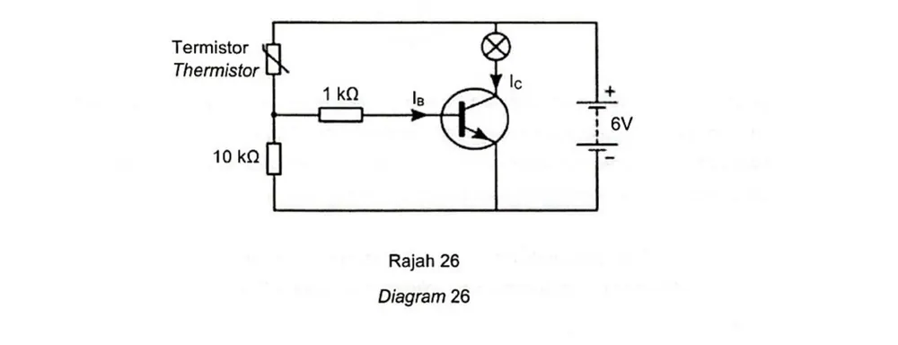
The voltage increases
The voltage decreases
The voltage remains constant
The voltage becomes zero
Trial 2026 Kedah Q36
Answer
B · The resistance of an NTC thermistor decreases when the temperature rises. In the potential divider, the voltage across the thermistor decreases while the voltage across the 10 kΩ resistor (the base voltage) increases, until the transistor switches on and the alarm sounds.
F5 · Nuclear Physics
36 The following equation represents a radioactive decay: ²⁴₁₁Na → ²⁴₁₂Mg + ⁰₋₁e. Which of the following represents radioactive decay by this equation?
Proton
Neutron
Alpha decay
Beta decay
Trial 2026 Melaka Q37
Answer
D · The particle ⁰₋₁e is an electron, which is a beta particle. In beta decay a neutron changes into a proton and an electron, so the proton number increases by one (11 → 12) while the nucleon number stays the same (24). Alpha decay would reduce the nucleon number by 4.
37 In a nuclear fission process, the total mass before the reaction and after the reaction is 236.053 amu and 236.051 amu, respectively. Determine the nuclear energy released.
9.96 × 10⁻²² J
2.99 × 10⁻¹³ J
7.05 × 10⁻⁸ J
1.34 × 10⁷ J
Trial 2026 Kedah Q38
Answer
B · The mass defect is Δm = 236.053 − 236.051 = 0.002 u = 0.002 × 1.66 × 10⁻²⁷ = 3.32 × 10⁻³⁰ kg. The energy is E = mc² = 3.32 × 10⁻³⁰ × (3.0 × 10⁸)² = 2.99 × 10⁻¹³ J. The value 9.96 × 10⁻²² J comes from forgetting to square c.
38 The equation below shows a nuclear reaction in a fusion reactor: ²₁H + ³₁H → ⁴₂He + ¹₀n + energy Which statement is correct?
Nuclear fission, because a neutron is released
Nuclear fission, which only occurs in a reactor that uses a moderator
Nuclear fusion; the total mass of the products is less than the total mass of the reactants
Nuclear fusion; the total mass of the products is equal to the total mass of the reactants
New
Answer
C · Two light nuclei (hydrogen-2 and hydrogen-3) join to form a heavier nucleus (helium-4), so this is nuclear fusion. Energy is released because the total mass of the products is less than that of the reactants, and the mass defect is converted to energy by E = mc². The release of a neutron does not make this reaction fission.
F5 · Quantum Physics
39 Which of the following statement is correct explaining the given equation?
W = hf − ½mv²
I: W is the minimum energy to release an electron from the metal surface. II: ½mv² is the maximum kinetic energy of the photoelectron. III: f is the frequency of the energy produced by the electron emission. IV: hf is the total minimum energy to release an electron from the metal surface.
I and II
I and IV
II and III
III and IV
Trial 2026 Perlis Q40
Answer
A · In the photoelectric equation, W is the work function, the minimum energy needed to release an electron from the metal surface, ½mv² is the maximum kinetic energy of the photoelectron, and hf is the energy of the incoming photon. So only I and II are correct; hf is not the minimum energy, and f is the frequency of the light, not of energy produced by the emission.
40 A beam of monochromatic light is incident on metal X causing production of photoelectrons. The rate of photoelectrons produced will be doubled if
the temperature of metal X is doubled.
the frequency of the incident light is doubled.
the intensity of the incident light is doubled.
the wavelength of the incident light is doubled.
Trial 2026 KL Q39
Answer
C · The intensity of light is directly proportional to the number of photons arriving per second. Doubling the intensity doubles the number of photons, so the rate of photoelectrons emitted is also doubled. The frequency only decides the kinetic energy of each photoelectron, not their number.
Diagram 1 shows the graph of the maximum kinetic energy, K_max, of photoelectrons against the frequency, f, of light shining on a metal surface. The line is extended (dashed) to meet the K_max axis. Point P on the graph is (9.0 × 10¹⁴ Hz, 2.64 × 10⁻¹⁹ J).
Diagram 1 / Rajah 1
(a)Determine the threshold frequency of the metal from the graph.[1]
(b)Calculate the Planck constant, h, from the gradient of the graph.[2]
(c)Determine the work function of the metal from the intercept on the K_max axis.[1]
Intercept = −3.3 × 10⁻¹⁹ J, so work function W = 3.3 × 10⁻¹⁹ J (accept 3.2 – 3.4 × 10⁻¹⁹ J; unit required)
Marking: (a) 1 m; (b) 1 m substitution + 1 m answer with unit (h = 6.6 × 10⁻³⁴ J s); (c) 1 m. Graph line: K_max = 6.6 × 10⁻³⁴ (f − 5.0 × 10¹⁴).
2Springs in series and in parallel — spring constant · F4 · Force & Motion · 5 marks
Diagram 2.1 and Diagram 2.2 show two arrangements of two identical springs supporting the same load of 4.0 N. The extension of each spring system is shown. The springs obey Hooke's law.
(a)State Hooke's law.[1]
(b(i))Compare the extension of the spring system in Diagram 2.1 and Diagram 2.2.[1]
(b(ii))Compare the spring constant of the spring system in Diagram 2.1 and Diagram 2.2.[1]
(c)Calculate the spring constant of the spring system in Diagram 2.2.[2]
New forecast question
Suggested scheme
(a) [1 m]
The extension of a spring is directly proportional to the applied force, provided the elastic limit is not exceeded.
(b(i)) [1 m]
The extension in Diagram 2.1 (4.0 cm) is greater than in Diagram 2.2 (1.0 cm).
(b(ii)) [1 m]
The spring constant in Diagram 2.1 is smaller than in Diagram 2.2 (same force, larger extension means smaller k).
(c) [2 m]
k = F / x = 4.0 / 0.010
k = 400 N m⁻¹ (accept 4.0 N cm⁻¹)
Marking: (c) 1 m substitution + 1 m answer with unit. For reference: one spring k = 200 N m⁻¹, series k = 100 N m⁻¹, parallel k = 400 N m⁻¹.
3Bernoulli's principle — lift on an aerofoil · F5 · Pressure · 6 marks
Diagram 3 shows air flowing past the wing of an aeroplane in flight. The wing has the shape of an aerofoil. The air speed at point X above the wing is 85 m s⁻¹ and at point Y below the wing is 70 m s⁻¹. The air pressure below the wing is 1500 Pa higher than the air pressure above it. The total area of the wings is 18 m².
Diagram 3 / Rajah 3
(a)Name the upward force F acting on the wing.[1]
(b(i))Compare the air speed at X and at Y.[1]
(b(ii))Compare the air pressure at X and at Y.[1]
(c)State the relationship between the air speed and the air pressure.[1]
(d)Calculate the magnitude of the lift F on the wings.[2]
New forecast question
Suggested scheme
(a) [1 m]
Lift (accept lift force)
(b(i)) [1 m]
The air speed at X is higher than at Y.
(b(ii)) [1 m]
The air pressure at X is lower than at Y.
(c) [1 m]
The higher the air speed, the lower the air pressure (Bernoulli's principle).
(d) [2 m]
F = ΔP × A = 1500 × 18
F = 2.7 × 10⁴ N (27 000 N)
Marking: (d) 1 m substitution + 1 m answer with unit.
4Nuclear fission in a reactor — mass defect and energy · F5 · Nuclear Physics · 9 marks
Diagram 4 shows a nuclear reactor that uses uranium-235 as fuel. A fission reaction in the reactor is: ²³⁵₉₂U + ¹₀n → ¹³⁹₅₄Xe + ⁹⁵₃₈Sr + 2 ¹₀n + energy. Masses: U-235 = 235.0439 u; neutron = 1.0087 u; Xe-139 = 138.9179 u; Sr-95 = 94.9194 u. [1 u = 1.66 × 10⁻²⁷ kg; c = 3.0 × 10⁸ m s⁻¹]
(a)State the meaning of nuclear fission.[1]
(b(i))State the function of component X.[1]
(b(ii))State the function of component Y.[1]
(c)Calculate the mass defect, in u, in the fission reaction.[2]
(d)Calculate the nuclear energy released in one fission reaction.[2]
(e)Suggest a suitable material for making component X and give ONE reason.[2]
Adapted from Trial 2026 SBP Q4
Suggested scheme
(a) [1 m]
The splitting of a heavy nucleus into two lighter nuclei when it is bombarded by a neutron, releasing a large amount of energy.
(b(i)) [1 m]
X (control rods) absorbs neutrons to control the rate of the chain reaction // control the rate of fission
(b(ii)) [1 m]
Y (moderator) slows down the fast neutrons so that they can cause further fission
(c) [2 m]
Mass before = 235.0439 + 1.0087 = 236.0526 u; mass after = 138.9179 + 94.9194 + 2(1.0087) = 235.8547 u
Absorbs neutrons very well (a good neutron absorber, so the chain reaction is controlled)
Marking: (c) 1 m masses before/after + 1 m Δm = 0.1979 u; (d) 1 m substitution + 1 m answer with unit; (e) 1 m material + 1 m reason. Boron or cadmium accepted; the reason is neutron absorption only. The trial fission equation was fixed (Xe-139 and Sr-95 so that nucleon numbers balance: 235 + 1 = 139 + 95 + 2).
5Satellites in orbit — Kepler's third law and orbit design · F4 · Gravitation · 9 marks
Diagram 5 shows two satellites A and B moving in circular orbits around the Earth. Satellite A has an orbital radius of 7.0 × 10⁶ m, a period of 5.8 × 10³ s and an orbital speed of 7.6 × 10³ m s⁻¹. Satellite B has an orbital radius of 4.2 × 10⁷ m and an orbital speed of 3.1 × 10³ m s⁻¹.
(a)State Kepler's third law.[1]
(b)Calculate the orbital period of satellite B in seconds.[2]
(c(i))Compare the orbital speed of satellite A and satellite B.[1]
(c(ii))State the relationship between the orbital radius and the orbital speed of a satellite.[1]
(d(i))Satellite C is to be launched to take detailed images of the whole surface of the Earth. Suggest a suitable orbit height for satellite C and give a reason.[2]
(d(ii))Suggest a suitable type of orbit for satellite C and give a reason.[2]
Adapted from Trial 2026 Perak Q4
Suggested scheme
(a) [1 m]
The square of the orbital period of a planet (satellite) is directly proportional to the cube of its orbital radius, T² / r³ = constant.
The larger the orbital radius, the smaller the orbital speed.
(d(i)) [2 m]
Low orbit (a few hundred kilometres above the Earth)
Closer to the Earth's surface, so the images have higher resolution / more detail
(d(ii)) [2 m]
Polar orbit (passes over the North and South poles)
The Earth rotates beneath the satellite, so it can scan the whole surface of the Earth
Marking: (b) 1 m substitution + 1 m answer (8.5 × 10⁴ s, about 23.7 hours); (d) each part 1 m suggestion + 1 m reason. Data checked against T² ∝ r³ and v = 2πr/T.
6Refraction of water waves — wavelength, speed and coastal erosion · F4 · Waves · 9 marks
Diagram 6.1 shows plane water waves of frequency 5.0 Hz moving from region P into region Q in a ripple tank. The wavelength in region P is 3.0 cm and the speed of the waves in region Q is 10 cm s⁻¹. Diagram 6.2 shows the plan view of a coast with a headland H and bays B. The dashed arrows show the direction in which the waves move.
(a)State the meaning of refraction of waves.[1]
(b(i))Compare the wavelength of the waves in region P and region Q.[1]
(b(ii))State which region, P or Q, has the shallower water. Give a reason.[1]
(c)Calculate the wavelength of the waves in region Q.[2]
(d)In Diagram 6.2, the waves cause more erosion at the headland H than at the bays B. Explain why.[2]
(e)A breakwater is to be built near the headland. Suggest ONE suitable characteristic of the breakwater and give a reason.[2]
Adapted from Trial 2025 Penang Q5 and Trial 2026 Selangor Q1
Suggested scheme
(a) [1 m]
The change in the direction of travel of a wave when it moves from one region to another, caused by a change in the speed of the wave.
(b(i)) [1 m]
The wavelength in region P is longer than in region Q.
(b(ii)) [1 m]
Region Q
The waves have a shorter wavelength / lower speed in Q (waves travel slower in shallow water)
(c) [2 m]
λ = v / f = 10 / 5.0 (frequency stays the same)
λ = 2.0 cm
(d) [2 m]
The water near the headland is shallow, so the waves slow down and bend (refract) towards the headland
The wave energy is concentrated on the headland (a smaller length of coast), so the erosion is greater
(e) [2 m]
Made of large rocks / concrete blocks with a rough or sloping surface (accept high and strong, built parallel to the shore)
Absorbs and dissipates wave energy // reflects the waves so that less energy reaches the coast
Marking: (c) 1 m substitution + 1 m answer with unit; (d) 1 m + 1 m; (e) 1 m characteristic + 1 m reason (accept any other reasonable characteristic with matching reason). Check: v_P = fλ = 15 cm s⁻¹; λ_Q/λ_P = v_Q/v_P = 2/3, as drawn.
7Bridge rectifier — full-wave rectification and smoothing · F5 · Electronics · 9 marks
Diagram 7.1 shows a bridge rectifier circuit connected to an a.c. supply of peak voltage 10 V and frequency 50 Hz. A cathode-ray oscilloscope (CRO) is connected across the resistor R. Diagram 7.2 shows the trace on the CRO screen. The Y-gain is 5 V per division and the time-base is 5 ms per division.
(a)State the meaning of rectification.[1]
(b)When terminal P of the a.c. supply is positive, which two diodes are forward biased?[1]
(c)Calculate the frequency of the output voltage using Diagram 7.2.[2]
(d(i))On Diagram 7.2, sketch the trace on the CRO when a capacitor is connected in parallel with R.[1]
(d(ii))Explain how the capacitor produces the trace in d(i).[2]
(e)Suggest ONE modification to the circuit so that the output voltage is steadier. Give a reason.[2]
Adapted from Trial 2026 MRSM Q3
Suggested scheme
(a) [1 m]
The process of converting alternating current (a.c.) to direct current (d.c.).
(b) [1 m]
D1 and D4 (both needed)
(c) [2 m]
Period T = 2 × 5 ms = 10 ms = 0.010 s; f = 1 / T = 1 / 0.010
f = 100 Hz
(d(i)) [1 m]
Trace has the same peaks (about 10 V) but the voltage falls only a little between the peaks (small ripple), never down to 0 V
(d(ii)) [2 m]
The capacitor charges when the voltage rises to a peak
The capacitor discharges through R when the voltage falls, so the voltage stays high and does not drop to zero
(e) [2 m]
Use a capacitor with a larger capacitance
It discharges more slowly, so the voltage drops less between the peaks (smaller ripple)
Marking: (b) both diodes for 1 m; (c) 1 m T = 10 ms + 1 m f = 100 Hz; (d)(i) 1 m for ripple with peaks level with the original; (d)(ii) 1 m charge + 1 m discharge; (e) 1 m + 1 m. In Diagram 7.1 current flows P → D1 → R (top to bottom) → D4 → Q for one half-cycle.
8Impulsive force — safety helmet design · F4 · Force & Motion · 9 marks
Diagram 8 shows a headform of mass 4.5 kg fitted into helmet K and into helmet L. Each helmet is dropped onto hard ground and the headform hits the ground at a speed of 6.0 m s⁻¹, then stops. Helmet K has a hard shell only. Helmet L has a hard shell and a foam liner.
(a)State the meaning of impulsive force.[1]
(b(i))Compare the change in momentum of the headform in helmet K and in helmet L.[1]
(b(ii))Compare the time of impact in helmet K and in helmet L.[1]
(c)Using F = Δp / t and your answers in (b), state the relationship between the time of impact and the impulsive force.[1]
(d)Calculate the impulsive force on the headform in helmet L.[2]
(e)Helmet L is to be improved for a motorcyclist. Suggest THREE modifications and give a reason for each.[3]
New forecast question
Suggested scheme
(a) [1 m]
The rate of change of momentum // the large force that acts over a very short time
(b(i)) [1 m]
The change in momentum is the same in both helmets (27 N s).
(b(ii)) [1 m]
The time of impact in helmet K is shorter than in helmet L.
(c) [1 m]
The longer the time of impact, the smaller the impulsive force (for the same change in momentum).
(d) [2 m]
F = m(v − u) / t = 4.5 × 6.0 / 0.040
F = 6.8 × 10² N (accept 675 N)
(e) [3 m]
Thicker, softer (low density) foam liner — increases the time of impact, so the impulsive force is smaller
Outer shell made of a strong, hard material (polycarbonate / fibreglass) — does not crack or get pierced; spreads the force over a larger area
Lighter helmet // chin strap — less strain on the neck // the helmet stays on the head in a crash
(Any three suggestions, each with its reason; 1 m for each pair)
Marking: (d) 1 m substitution + 1 m answer with unit; (e) 1 m per modification with its reason (accept other reasonable answers). For reference: helmet K, F = 27 / 0.010 = 2700 N. (d) data are 2 s.f., so 6.8 × 10² N; 675 N also accepted.
Section B (20 marks): answer one question.
9Thermal equilibrium and specific heat capacity — thermos box design · F4 · Heat · 20 marks
Diagram 9.1 shows a thermometer placed in boiling water. Diagram 9.2 shows a metal block M of mass 500 g at 100 °C placed into a polystyrene cup containing 200 g of water at 30 °C. [Specific heat capacity of metal M = 800 J kg⁻¹ °C⁻¹; specific heat capacity of water = 4200 J kg⁻¹ °C⁻¹.] Table 9 shows the specifications of four thermos boxes W, X, Y and Z for keeping drinks cold.
Table 9 / Jadual 9
Thermos box Kotak termos
Lid Penutup
Space between the walls Ruang antara dinding
Inner wall material Bahan dinding dalam
Outer coating Salutan luar
W
Airtight / Kedap udara
Vacuum / Vakum
Glass / Kaca
Shiny (silvered) / Berkilat (bersadur perak)
X
Airtight / Kedap udara
Vacuum / Vakum
Copper / Kuprum
Opaque (dull) / Legap (kusam)
Y
Not airtight / Tidak kedap udara
Air / Udara
Glass / Kaca
Opaque (dull) / Legap (kusam)
Z
Not airtight / Tidak kedap udara
Air / Udara
Copper / Kuprum
Shiny (silvered) / Berkilat (bersadur perak)
(a(i))State the meaning of thermal equilibrium.[1]
(a(ii))Explain why the thermometer in Diagram 9.1 reads 100 °C after it has been in the boiling water for some time.[4]
(b(i))Calculate the final temperature of the water when the metal block M is placed in the water in Diagram 9.2.[4]
(b(ii))State ONE assumption made in the calculation in b(i).[1]
(c)Study the specifications of the four thermos boxes W, X, Y and Z in Table 9. Explain the suitability of each characteristic and determine the most suitable thermos box to keep drinks cold for a long time. Give reasons for your choice.[10]
Adapted from Trial 2026 Perlis Q9
Suggested scheme
(a(i)) [1 m]
The state in which there is no net heat transfer between two objects in thermal contact because they are at the same temperature.
(a(ii)) [4 m]
Heat flows from the boiling water to the thermometer, which is at a lower temperature
The temperature of the thermometer (the liquid in it) rises
When the net rate of heat transfer between the water and the thermometer is zero, thermal equilibrium is reached
The thermometer is at the same temperature as the boiling water, 100 °C
(b(i)) [4 m]
Heat lost by M = heat gained by water
m_M c_M (100 − θ) = m_w c_w (θ − 30)
0.5 × 800 × (100 − θ) = 0.2 × 4200 × (θ − 30)
θ = 52.6 °C
(b(ii)) [1 m]
No heat is lost to the surroundings // the polystyrene cup absorbs no heat // all the heat lost by M is gained by the water
(c) [10 m]
Lid: airtight — stops warm air from the surroundings entering the box, so there is no heat gain by convection
Space between the walls: vacuum — no particles, so no heat transfer by conduction or convection
Inner wall material: glass — poor conductor of heat (low thermal conductivity), so heat enters the drink slowly
Outer coating: shiny (silvered) — reflects thermal radiation and is a poor absorber of heat radiation
Choose W
W has an airtight lid, a vacuum between the walls, a glass inner wall and a shiny coating
Marking: a(ii) 4 × 1 m; b(i) 1 m heat lost = heat gained, 1 m formula, 1 m substitution, 1 m answer (52.6 °C); c: 4 characteristics × 2 m (suitable characteristic 1 m + reason 1 m) + choice W 1 m + reason 1 m = 10 m. Trial numbers kept; mark scheme written for this set.
10Electromagnetic induction — Faraday, Lenz and generator design · F5 · Electromagnetism · 20 marks
Diagram 10.1 shows a bar magnet released from a height of 10 cm above a solenoid connected to a galvanometer. The galvanometer deflects as the magnet falls into the solenoid. Diagram 10.2 shows the same magnet released from a height of 40 cm above the solenoid. Table 10 shows the specifications of four a.c. generators U, V, W and X that can be used in a small hydroelectric power station.
Table 10 / Jadual 10
Generator Penjana
Number of turns of coil Bilangan lilitan gegelung
Wire of coil Dawai gegelung
Magnet Magnet
Output connection Sambungan output
U
Few / Sedikit
Thick / Tebal
Weak / Lemah
Slip rings / Cincin gelincir
V
Many / Banyak
Thin / Nipis
Strong / Kuat
Split-ring commutator / Komutator gelang belah
W
Many / Banyak
Thick / Tebal
Strong / Kuat
Slip rings / Cincin gelincir
X
Few / Sedikit
Thin / Nipis
Weak / Lemah
Split-ring commutator / Komutator gelang belah
(a)State the meaning of electromagnetic induction.[1]
(b)Explain why the galvanometer deflection in Diagram 10.2 is larger than in Diagram 10.1.[4]
(c(i))State Lenz's law.[1]
(c(ii))The induced e.m.f. in the solenoid in Diagram 10.2 is 0.50 V and the resistance of the circuit is 1.2 Ω. Calculate the induced current.[2]
(c(iii))A d.c. source of e.m.f. 0.50 V and total resistance 1.2 Ω supplies a steady current for 3 hours. Calculate the electrical energy supplied.[2]
(d)Study the specifications of the four generators U, V, W and X in Table 10. Explain the suitability of each characteristic and determine the most suitable generator for the power station. Give reasons for your choice.[10]
Adapted from Trial 2026 Selangor Q10
Suggested scheme
(a) [1 m]
The production of an induced e.m.f. (current) in a conductor when there is a change in the magnetic flux linked with it // when a conductor cuts magnetic field lines
(b) [4 m]
The magnet is released from a greater height, so it enters the solenoid at a higher speed
The rate of change of magnetic flux (rate of cutting of magnetic field lines) is larger
By Faraday's law, the induced e.m.f. is larger
The induced current is larger, so the galvanometer deflection is larger
(c(i)) [1 m]
The direction of the induced current (e.m.f.) is such that it opposes the change in magnetic flux that produces it.
(c(ii)) [2 m]
I = V / R = 0.50 / 1.2
I = 0.42 A (0.417 A)
(c(iii)) [2 m]
E = VIt = 0.50 × 0.417 × (3 × 3600)
E = 2.25 × 10³ J (accept 2.25 – 2.27 × 10³ J, or 2.3 × 10³ J if I = 0.42 A is used)
(d) [10 m]
Number of turns of coil: many — the flux linkage is larger, so the induced e.m.f. is larger (Faraday's law)
Wire of coil: thick — lower resistance, so less heat is produced (smaller power loss) and a larger current can flow
Magnet: strong — the magnetic flux is larger, so the induced e.m.f. is larger
Output connection: slip rings — give an a.c. output, which can be stepped up by a transformer for transmission; a split-ring commutator gives a d.c. output
Choose W
W has many turns of coil, thick wire, a strong magnet and slip rings
Marking: b 4 × 1 m; c(ii) 1 m substitution + 1 m answer; c(iii) 1 m substitution + 1 m answer with unit (accept 2.25 – 2.27 × 10³ J); d: 4 characteristics × 2 m + choice W 1 m + reason 1 m. Fixed from the trial: the trial energy answer (4.32 × 10⁶ J) was wrong (correct E = VIt = 2250 J) and its "solar cells" column was replaced by a coil/magnet/slip-ring table that suits a generator.
Diagram 11.1 shows parallel rays from a distant object passing through two convex lenses P and Q of the same material and diameter. Diagram 11.2 shows an astronomical telescope in normal adjustment. The focal length of the objective lens is 80 cm and the focal length of the eyepiece is 4.0 cm. Table 11 shows the specifications of four astronomical telescopes P, Q, R and S.
Table 11 / Jadual 11
Telescope Teleskop
Focal length of objective lens Panjang fokus kanta objektif
Diameter of objective lens Diameter kanta objektif
Focal length of eyepiece Panjang fokus kanta mata
Anti-reflection coating on the lenses Salutan anti-pantulan pada kanta
P
120 cm
5.0 cm
1.5 cm
Yes / Ya
Q
40 cm
10 cm
4.0 cm
No / Tidak
R
120 cm
10 cm
1.5 cm
Yes / Ya
S
40 cm
5.0 cm
1.5 cm
Yes / Ya
(a)State the meaning of focal length.[1]
(b(i))Compare the thickness of lens P and lens Q in Diagram 11.1.[1]
(b(ii))Compare the focal length of lens P and lens Q in Diagram 11.1.[1]
(b(iii))State the relationship between the thickness of a lens and its focal length.[1]
(b(iv))State the relationship between the focal length of a lens and its power.[1]
(c(i))State ONE characteristic of the final image formed by the telescope in Diagram 11.2.[1]
(c(ii))Calculate the magnification of the telescope in Diagram 11.2.[2]
(c(iii))Calculate the distance between the objective lens and the eyepiece in Diagram 11.2.[2]
(d)Study the specifications of the four telescopes P, Q, R and S in Table 11. Explain the suitability of each characteristic and determine the most suitable telescope for observing faint, distant stars with a bright, clear and highly magnified image. Give reasons for your choice.[10]
Adapted from Trial 2026 Selangor Q8 (telescope), extended to a 20-mark question
Suggested scheme
(a) [1 m]
The distance between the optical centre of the lens and the focal point (principal focus).
(b(i)) [1 m]
Lens P is thicker than lens Q.
(b(ii)) [1 m]
The focal length of lens P is shorter than that of lens Q.
(b(iii)) [1 m]
The thicker the lens, the shorter the focal length.
(b(iv)) [1 m]
The shorter the focal length, the greater the power of the lens (P = 1/f).
(c(i)) [1 m]
Inverted // virtual // magnified (any one)
(c(ii)) [2 m]
M = f_o / f_e = 80 / 4.0
M = 20
(c(iii)) [2 m]
Distance = f_o + f_e = 80 + 4.0
Distance = 84 cm
(d) [10 m]
Focal length of objective lens: long — larger magnification (M = f_o / f_e)
Diameter of objective lens: large — collects more light, so the image is brighter and has better resolution (less diffraction)
Focal length of eyepiece: short — larger magnification (M = f_o / f_e)
Anti-reflection coating: yes — reduces the loss of light by reflection, so the image is brighter and clearer
Choose R
R has a long objective focal length, a large objective diameter, a short eyepiece focal length and an anti-reflection coating
Marking: c(ii) 1 m substitution + 1 m answer; c(iii) 1 m + 1 m (84 cm); d: 4 characteristics × 2 m + choice R 1 m + reason 1 m. Diagram 11.2 is marked not drawn to scale (f_o : f_e is 20 : 1). Table 11: only R has all four suitable characteristics (P small diameter, Q short objective / long eyepiece / no coating, S short objective / small diameter). Magnification: P 80, Q 10, R 80, S 26.7.
Set 2
4531/2 · 2 h 30 min · 100 marks
Section A (60 marks): answer all questions.
1Pascal's principle — hydraulic jack · F5 · Pressure · 4 marks
Diagram 1 shows a hydraulic jack used to lift a car. A force of 400 N is applied to the small piston of area 5 cm². The large piston has an area of 125 cm².
(a)State Pascal's principle.[1]
(b)Oil, not air, is used as the fluid in the jack. Give one reason.[1]
(c)Calculate the maximum load that the large piston can lift.[2]
Adapted from Trial 2026 Perak Q2
Suggested scheme
(a) [1 m]
Pressure applied to an enclosed fluid is transmitted uniformly (equally) to every part of the fluid
(b) [1 m]
Oil is incompressible, so the pressure is transmitted fully to the large piston (air is compressible and would absorb part of the pressure)
(c) [2 m]
F₁/A₁ = F₂/A₂ → 400/5 = F₂/125
F₂ = 10 000 N
Marking: (c) 1 m substitution + 1 m answer with unit. Accept 1.0 × 10⁴ N (a load of about 1000 kg, so the jack can lift a small car).
2Radioactive decay — half-life of phosphorus-32 · F5 · Nuclear Physics · 5 marks
Graph 2 shows how the activity of a sample of phosphorus-32, a radioisotope used to trace fertiliser uptake in plants, decreases with time. The initial activity is 480 Bq.
(a)State the meaning of half-life.[1]
(b)Using Graph 2, determine the half-life of phosphorus-32. Show on the graph how you obtain your answer.[2]
(c)A sample contains 8.0 g of phosphorus-32 at t = 0. Calculate the mass of phosphorus-32 that remains after 42 days.[2]
New forecast question
Suggested scheme
(a) [1 m]
The time taken for the activity (or the number of undecayed nuclei) of a radioactive sample to decrease to half of its initial value
(b) [2 m]
Half of the initial activity = 240 Bq, read off the graph (construction lines shown)
Half-life = 14 days
(c) [2 m]
Number of half-lives = 42 ÷ 14 = 3
Remaining mass = 8.0 × (½)³ = 1.0 g
Marking: (b) 1 m construction/reading at 240 Bq + 1 m answer with unit (accept 13.5–14.5 days). (c) 1 m number of half-lives + 1 m mass with unit.
3Photons from a laser pointer — E = hf and photons per second · F5 · Quantum Physics · 6 marks
A green laser pointer emits light of wavelength 532 nm with a power output of 3.0 mW. [h = 6.63 × 10⁻³⁴ J s, c = 3.00 × 10⁸ m s⁻¹]
Table 3 / Jadual 3 — Laser pointer
Wavelength / Panjang gelombang
Power output / Kuasa keluaran
532 nm
3.0 mW
(a)State the meaning of a photon.[1]
(b)Calculate the energy of one photon of the laser light.[2]
(c)Calculate the number of photons emitted by the laser pointer in one second.[2]
(d)The light is directed at a zinc plate of work function 6.9 × 10⁻¹⁹ J. Will photoelectrons be emitted? Give a reason.[1]
New forecast question
Suggested scheme
(a) [1 m]
A packet (quantum) of electromagnetic energy, with energy E = hf
No — the photon energy (3.74 × 10⁻¹⁹ J) is less than the work function (the frequency is below the threshold frequency)
Marking: (b) and (c) 1 m substitution + 1 m answer with unit. (d) 1 m for "No" with the reason (both needed).
4Pressure law — kinetic theory and tyre pressure · F4 · Heat · 9 marks
Diagrams 4.1 and 4.2 show a flask containing a fixed mass of air connected to a pressure gauge that reads the absolute pressure of the air. The flask is placed in a water bath at two different temperatures. The volume of the air remains constant.
(a(i))Compare the temperature of the air in Diagram 4.1 and Diagram 4.2.[1]
(a(ii))Compare the pressure of the air in Diagram 4.1 and Diagram 4.2.[1]
(b)State the relationship between the pressure and the absolute temperature of the air. Name the gas law.[1]
(c)Using the kinetic theory of gases, explain why the pressure of the air increases when the temperature increases.[2]
(d)The absolute pressure of the air in a car tyre is 320 kPa at 27 °C. After a long journey the temperature of the air in the tyre rises to 57 °C. Assuming that the volume of the tyre is constant, calculate the new absolute pressure of the air.[2]
(e)Tyres are more likely to burst on a long journey on a hot day. Suggest one way to reduce this risk. Give a reason.[2]
New forecast question
Suggested scheme
(a(i)) [1 m]
The temperature in Diagram 4.2 (87 °C) is higher than in Diagram 4.1 (27 °C)
(a(ii)) [1 m]
The pressure in Diagram 4.2 (120 kPa) is higher than in Diagram 4.1 (100 kPa)
(b) [1 m]
The pressure of a fixed mass of gas at constant volume is directly proportional to its absolute temperature (P ∝ T) — pressure law (Gay-Lussac's law)
(c) [2 m]
The average kinetic energy (speed) of the air molecules increases
The molecules hit the wall more often and with a larger force, so the rate of change of momentum per unit area (pressure) increases
Do not over-inflate the tyre — inflate to the recommended pressure when the tyre is cold (accept: use a stronger/thicker tyre wall)
So that the pressure after the temperature rise stays below the maximum pressure the tyre can withstand (accept: the stronger wall can withstand a higher pressure)
Marking: (c) 1 m + 1 m. (d) the pressures are absolute; 1 m for temperatures in kelvin with substitution + 1 m answer with unit; a candidate who forgets to convert to kelvin loses both. (e) 1 m suggestion + 1 m matching reason.
5Step-down transformer — turns ratio, efficiency and transmission loss · F5 · Electromagnetism · 9 marks
Diagram 5 shows a transformer that steps the 240 V a.c. supply down to 6 V to operate a lamp rated 6 V, 19.2 W. The primary coil has 2000 turns and the ammeter in the primary circuit reads 0.10 A. The lamp lights up at normal brightness.
(a)State the type of this transformer. Give a reason.[1]
(b)Explain why the lamp lights up when the primary coil is connected to the a.c. supply.[2]
(c)Calculate the number of turns of the secondary coil.[2]
(d)Calculate the efficiency of the transformer.[2]
(e)Electrical energy is transmitted from a power station to consumers through cables. Suggest one way to reduce the power loss in the cables. Give a reason.[2]
Adapted from Trial 2026 Terengganu Q4
Suggested scheme
(a) [1 m]
Step-down transformer, because the number of turns of the secondary coil is less than that of the primary coil (output voltage < input voltage)
(b) [2 m]
The alternating current in the primary coil produces a changing magnetic flux, which is linked to the secondary coil through the soft iron core
The changing flux cuts the secondary coil and induces an e.m.f. (and current) in it, which lights the lamp
(c) [2 m]
Nₛ/Nₚ = Vₛ/Vₚ → Nₛ/2000 = 6/240
Nₛ = 50 turns
(d) [2 m]
Input power = VₚIₚ = 240 × 0.10 = 24 W
Efficiency = (19.2 / 24) × 100% = 80%
(e) [2 m]
Transmit the electricity at a very high voltage (step it up with a step-up transformer)
The current is smaller, so the heat loss I²R in the cables is smaller (accept: use thick cables of low resistivity — lower resistance, less I²R heat)
Marking: (a) 1 m (answer and reason together). (b) 1 m changing flux/linking by core + 1 m induced e.m.f. in secondary. (c),(d) 1 m substitution + 1 m answer; (d) the answer needs the % sign.
6Curved mirrors — images in a concave mirror and uses · F4 · Light & Optics · 9 marks
Diagrams 6.1 and 6.2 show an object of height 3.0 cm placed in front of the same concave mirror of focal length 10 cm, at two different distances from the mirror. P is the pole, F the principal focus and C the centre of curvature of the mirror.
(a)State the meaning of the focal length of a concave mirror.[1]
(b(i))Compare the object distance in Diagram 6.1 and Diagram 6.2.[1]
(b(ii))Compare the image distance in Diagram 6.1 and Diagram 6.2.[1]
(b(iii))Compare the size of the image in Diagram 6.1 and Diagram 6.2.[1]
(c)State the relationship between the object distance and the size of the image.[1]
(d)Using the magnification m = v/u, calculate the height of the image in Diagram 6.2.[2]
(e(i))A dentist uses a small concave mirror to see an enlarged, upright image of a tooth. State the position of the tooth in relation to the mirror.[1]
(e(ii))A convex mirror is installed at a blind corner of a road. Give one reason why a convex mirror is suitable.[1]
Adapted from Trial 2026 KL Q6
Suggested scheme
(a) [1 m]
The distance between the principal focus F and the pole P of the mirror
(b(i)) [1 m]
Object distance in Diagram 6.1 (30 cm) is greater than in Diagram 6.2 (15 cm)
(b(ii)) [1 m]
Image distance in Diagram 6.1 (15 cm) is less than in Diagram 6.2 (30 cm)
(b(iii)) [1 m]
Image in Diagram 6.1 is smaller than in Diagram 6.2
(c) [1 m]
The greater the object distance, the smaller the size of the image
(d) [2 m]
m = v/u = 30/15 = 2, so image height = 2 × 3.0 cm
Image height = 6.0 cm
(e(i)) [1 m]
Between the pole P and the principal focus F of the mirror (object distance less than the focal length)
(e(ii)) [1 m]
It gives a wider field of view (the image is always upright and diminished, so more of the road can be seen)
Marking: (b) 3 × 1 m, give the mark only when the comparison names both diagrams (readings from the ruler: u = 30 / 15 cm, v = 15 / 30 cm). (d) 1 m substitution + 1 m answer with unit.
7Newton's law of gravitation — geostationary satellite · F4 · Gravitation · 9 marks
Table 7 shows data of two satellites, X and Y, orbiting the Earth. Satellite Y is a communication satellite of mass 2000 kg. [G = 6.67 × 10⁻¹¹ N m² kg⁻², mass of the Earth = 5.97 × 10²⁴ kg]
Table 7 / Jadual 7
Satellite / Satelit
Orbital radius / Jejari orbit
Orbital period / Tempoh orbit
Orbit / Orbit
X (remote sensing / pengesanan jauh)
7.17 × 10⁶ m
101 minutes / minit
Passes over the North and South poles / Melalui kutub Utara dan Selatan
Y (communication / komunikasi)
4.22 × 10⁷ m
24 hours / jam
Above the equator / Di atas khatulistiwa
(a)State Newton's law of universal gravitation.[1]
(b(i))Compare the orbital radius of satellite X and satellite Y.[1]
(b(ii))Compare the orbital period of satellite X and satellite Y.[1]
(c)Relate the orbital radius to the orbital period of a satellite.[1]
(d)Calculate the gravitational force between the Earth and satellite Y.[2]
(e(i))Explain why satellite Y is suitable for relaying television broadcasts to a country.[2]
(e(ii))State the direction of motion of satellite Y relative to the rotation of the Earth.[1]
New forecast question
Suggested scheme
(a) [1 m]
The gravitational force between two masses is directly proportional to the product of the masses and inversely proportional to the square of the distance between their centres
(b(i)) [1 m]
The orbital radius of X is smaller than that of Y
(b(ii)) [1 m]
The orbital period of X is shorter than that of Y
(c) [1 m]
The greater the orbital radius, the longer the orbital period
The orbital period of Y (24 hours) is equal to the period of rotation of the Earth
Y stays above the same point on the Earth (geostationary), so the receiving dish can be fixed and the signal is continuous
(e(ii)) [1 m]
In the same direction as the Earth's rotation (west to east)
Marking: (d) 1 m substitution + 1 m answer with unit (446–448 N). (e)(i) 1 m for equal period + 1 m for fixed position / no tracking.
8E.m.f. and internal resistance — V–I graph · F5 · Electricity · 9 marks
Diagrams 8.1 and 8.2 show a cell with internal resistance r connected to a voltmeter, an ammeter and a resistor R. In Diagram 8.1 switch S is open and in Diagram 8.2 switch S is closed. Graph 8 is obtained by varying R and plotting the voltmeter reading V against the ammeter reading I.
(a)State the meaning of electromotive force (e.m.f.).[1]
(b(i))Compare the voltmeter reading in Diagram 8.1 and Diagram 8.2.[1]
(b(ii))Explain the difference in the voltmeter readings in (b)(i).[1]
(c)Calculate the resistance of R in Diagram 8.2.[1]
(d(i))Based on Graph 8, determine the e.m.f. of the cell.[1]
(d(ii))Based on Graph 8, determine the internal resistance r of the cell.[2]
(e)A car battery supplies a large current to the starter motor. Suggest the suitable internal resistance of the battery. Give a reason.[2]
Adapted from Trial 2026 MRSM Q5
Suggested scheme
(a) [1 m]
The work done (energy transferred) by a source to move one coulomb of charge through the complete circuit
(b(i)) [1 m]
The voltmeter reading in Diagram 8.1 (3.0 V) is greater than in Diagram 8.2 (2.4 V)
(b(ii)) [1 m]
When the switch is closed, a current flows through the cell and some energy is used to drive it through the internal resistance (lost volt Ir = 0.6 V), so the terminal potential difference is lower than the e.m.f.
(c) [1 m]
R = V/I = 2.4 / 0.6 = 4.0 Ω
(d(i)) [1 m]
e.m.f. = V-intercept (I = 0) = 3.0 V
(d(ii)) [2 m]
Gradient = (0.5 − 3.0) / (2.5 − 0) = −1.0 V A⁻¹ (triangle shown on the graph)
r = −gradient = 1.0 Ω
(e) [2 m]
Low internal resistance
Small lost volt (Ir) and less heat in the battery, so a large current can be delivered and the terminal p.d. stays high
Marking: (d)(ii) 1 m for the gradient with a visible triangle (accept any two points on the line) + 1 m for r with unit. Check: E = V + Ir → 3.0 = 2.4 + 0.6 × 1.0.
Section B (20 marks): answer one question.
9Velocity–time graph, inertia, momentum — racing car design · F4 · Force & Motion · 20 marks
Graph 9 shows the velocity–time graphs of two racing cars, A and B, which start from rest at the same time and move along a straight track. Car B has a mass of 900 kg.
(a)State the meaning of inertia.[1]
(b(i))Compare the gradient of the graph of car A and car B in the first 5 s.[1]
(b(ii))Compare the velocity of car A and car B at t = 5 s.[1]
(b(iii))Compare the distance travelled by car A and car B in 15 s.[1]
(b(iv))Relate the gradient of a velocity–time graph to the acceleration of the car.[1]
(c(i))Calculate the acceleration of car B in the first 5 s.[2]
(c(ii))Calculate the distance travelled by car B in 15 s.[2]
(d)Calculate the momentum of car B at t = 5 s.[1]
(e)Table 9 shows the specifications of four racing cars, P, Q, R and S. Study the specifications of the four cars. Explain the suitability of each characteristic and determine the most suitable car to accelerate quickly to a high speed and to stop safely. Give reasons for your choice.
Table 9 / Jadual 9 — Racing cars / Kereta lumba
Car / Kereta
Mass of car / Jisim kereta
Engine power / Kuasa enjin
Shape of body / Bentuk badan
Tyres / Tayar
P
1100 kg
450 kW
Boxy / Berbentuk kotak
Wide, soft rubber / Lebar, getah lembut
Q
850 kg
250 kW
Streamlined / Aerodinamik
Narrow, hard rubber / Sempit, getah keras
R
1100 kg
250 kW
Streamlined / Aerodinamik
Wide, soft rubber / Lebar, getah lembut
S
850 kg
450 kW
Streamlined / Aerodinamik
Wide, soft rubber / Lebar, getah lembut
[10]
Adapted from Trial 2025 Kelantan Q11
Suggested scheme
(a) [1 m]
The tendency of an object to remain at rest, or if moving, to continue in uniform motion in a straight line (a property that resists a change in its state of motion)
(b(i)) [1 m]
The gradient of car B (4 m s⁻²) is greater than that of car A (3 m s⁻²)
(b(ii)) [1 m]
The velocity of car B (20 m s⁻¹) is greater than that of car A (15 m s⁻¹)
(b(iii)) [1 m]
The distance travelled by car B (area under the graph, 250 m) is greater than that of car A (187.5 m)
(b(iv)) [1 m]
The greater the gradient, the greater the acceleration
(c(i)) [2 m]
a = (v − u)/t = (20 − 0)/5
a = 4 m s⁻²
(c(ii)) [2 m]
Distance = area under the graph = ½ × 5 × 20 + 10 × 20 (or ½(15 + 10) × 20)
Distance = 250 m
(d) [1 m]
p = mv = 900 × 20 = 1.8 × 10⁴ kg m s⁻¹
(e) [10 m]
Low mass (850 kg) — low inertia, so a larger acceleration for the same force (a = F/m) and easier to change its motion
High engine power (450 kW) — larger driving force, so larger acceleration and higher speed
Streamlined body — smaller air resistance, so a higher speed can be reached
Wide tyres of soft rubber — larger friction (grip) with the road, so good traction and braking without skidding
Choose S because it has a low mass, high engine power, streamlined body and wide tyres of soft rubber
Marking: (e) 4 characteristics × 2 m (characteristic 1 m + reason 1 m) + choice of S with reasons 2 m. (c) 1 m substitution/method + 1 m answer with unit. (b)(iii) accept a qualitative comparison of the areas.
10Thermionic emission, CRO and the electron gun · F5 · Electronics · 20 marks
Diagrams 10.1 and 10.2 show the traces of two a.c. signals on the screen of a cathode ray oscilloscope (CRO). The Y-gain is set at 2 V/div and the time-base at 2 ms/div for both diagrams. [e = 1.60 × 10⁻¹⁹ C, mass of electron m = 9.11 × 10⁻³¹ kg]
(a)State the meaning of thermionic emission.[1]
(b(i))Compare the peak voltage of the signal in Diagram 10.1 and Diagram 10.2.[1]
(b(ii))Compare the period of the signal in Diagram 10.1 and Diagram 10.2.[1]
(b(iii))Compare the frequency of the signal in Diagram 10.1 and Diagram 10.2.[1]
(b(iv))Relate the period to the frequency of a signal.[1]
(c(i))Determine the peak voltage of the signal in Diagram 10.2.[1]
(c(ii))Calculate the frequency of the signal in Diagram 10.2.[2]
(d)In the electron gun of a cathode ray tube, electrons are accelerated from rest through a potential difference of 2.0 kV. Calculate the speed of the electrons when they reach the anode.[2]
(e)Table 10 shows the specifications of four electron gun designs, P, Q, R and S, for a cathode ray tube display. Study the specifications of the four designs. Explain the suitability of each characteristic and determine the most suitable design to produce a bright and sharp spot on the screen. Give reasons for your choice.
Table 10 / Jadual 10 — Electron gun designs / Reka bentuk senapang elektron
Design / Reka bentuk
Cathode material / Bahan katod
Temperature of cathode / Suhu katod
Accelerating voltage / Voltan pemecut
Inside the tube / Dalam tiub
P
Coated with barium oxide / Disalut barium oksida
High / Tinggi
High / Tinggi
Vacuum / Vakum
Q
Pure tungsten / Tungsten tulen
High / Tinggi
Low / Rendah
Vacuum / Vakum
R
Coated with barium oxide / Disalut barium oksida
Low / Rendah
High / Tinggi
Low-pressure gas / Gas bertekanan rendah
S
Coated with barium oxide / Disalut barium oksida
High / Tinggi
Low / Rendah
Low-pressure gas / Gas bertekanan rendah
[10]
New forecast question
Suggested scheme
(a) [1 m]
The emission of electrons from the surface of a heated metal
(b(i)) [1 m]
The peak voltage in Diagram 10.2 is greater than in Diagram 10.1
(b(ii)) [1 m]
The period in Diagram 10.2 is shorter than in Diagram 10.1
(b(iii)) [1 m]
The frequency in Diagram 10.2 is higher than in Diagram 10.1
(b(iv)) [1 m]
The shorter the period, the higher the frequency (frequency is inversely proportional to period)
Cathode coated with barium oxide — low work function, so many electrons are emitted at a lower temperature (pure tungsten needs a much higher temperature)
High temperature of the cathode — more electrons gain enough energy to escape, so the rate of thermionic emission is higher and the spot is brighter
High accelerating voltage — electrons gain more kinetic energy (eV = ½mv²) and a higher speed, so they strike the screen with more energy and produce a brighter spot
Vacuum inside the tube — electrons do not collide with air/gas molecules, so they travel in straight lines without losing energy (the beam stays sharp)
Choose P because it has a barium oxide-coated cathode, a high cathode temperature, a high accelerating voltage and a vacuum
Marking: (e) 4 characteristics × 2 m (characteristic 1 m + reason 1 m) + choice of P with reasons 2 m. (c)(ii) 1 m for the period in seconds + 1 m for f with unit. (d) 1 m substitution + 1 m answer with unit.
Section C (20 marks): answer the question.
11Interference — Young's double slit and a hall sound system · F4 · Waves · 20 marks
Diagrams 11.1 and 11.2 show the interference patterns formed on a screen 2.0 m from a double slit when light of the same wavelength passes through slits with different separations a.
(a(i))State the meaning of interference of waves.[1]
(a(ii))State one condition needed to obtain a clear and stable interference pattern.[1]
(b(i))Compare the distance between the two slits, a, in Diagram 11.1 and Diagram 11.2.[1]
(b(ii))Compare the distance between two consecutive bright fringes, x, in Diagram 11.1 and Diagram 11.2.[1]
(b(iii))Relate the distance between the slits to the distance between two consecutive bright fringes.[1]
(b(iv))Name the type of interference that occurs at a bright fringe.[1]
(c(i))Using the data in Diagram 11.1, calculate the wavelength of the light.[2]
(c(ii))Explain how a dark fringe is formed.[2]
(d)A school hall has two loudspeakers connected to the same amplifier. Some members of the audience hear loud sound while others hear almost no sound, and the speech is not clear because of echoes. Table 11 shows the specifications of four sound systems, P, Q, R and S. Study the specifications of the four systems. Explain the suitability of each characteristic and determine the most suitable system to produce clear sound over the whole hall. Give reasons for your choice.
Table 11 / Jadual 11 — Sound systems for a hall / Sistem bunyi untuk dewan
Design / Reka bentuk
Distance between the two loudspeakers / Jarak antara dua pembesar suara
Frequency of sound / Frekuensi bunyi
Wall surface of the hall / Permukaan dinding dewan
Power of each loudspeaker / Kuasa setiap pembesar suara
P
1.0 m
250 Hz
Hard concrete / Konkrit keras
20 W
Q
6.0 m
2000 Hz
Soft and rough (carpet, curtains) / Lembut dan kasar (permaidani, langsir)
100 W
R
1.0 m
250 Hz
Soft and rough (carpet, curtains) / Lembut dan kasar (permaidani, langsir)
100 W
S
6.0 m
250 Hz
Hard concrete / Konkrit keras
100 W
[10]
New forecast question
Suggested scheme
(a(i)) [1 m]
The superposition of two (or more) waves that meet at the same point, producing a resultant displacement equal to the sum of the displacements of the waves
(a(ii)) [1 m]
The two sources must be coherent (same frequency/wavelength and a constant phase difference)
(b(i)) [1 m]
The distance between the slits in Diagram 11.1 (0.50 mm) is greater than in Diagram 11.2 (0.30 mm)
(b(ii)) [1 m]
The fringe separation in Diagram 11.1 (2.4 mm) is less than in Diagram 11.2 (4.0 mm)
(b(iii)) [1 m]
The smaller the distance between the slits, the greater the distance between two consecutive bright fringes
(b(iv)) [1 m]
Constructive interference
(c(i)) [2 m]
λ = ax/D = (0.50 × 10⁻³)(2.4 × 10⁻³) / 2.0
λ = 6.0 × 10⁻⁷ m
(c(ii)) [2 m]
The waves from the two slits arrive out of phase (path difference = (n + ½)λ), crest meets trough
Destructive interference occurs, so the resultant amplitude is zero (minimum brightness)
(d) [10 m]
Small distance between the loudspeakers (1.0 m) — x = λD/a, so the distance between loud and soft regions is large; fewer dead spots in the hall
Low frequency (250 Hz) — longer wavelength, so x is larger (fewer dead spots) and the sound diffracts more, spreading to all corners of the hall
Soft and rough wall surface — absorbs sound, reducing echoes (reflected sound), so the speech is clearer
High power (100 W) — larger amplitude, so the sound is loud enough for the audience at the back of the hall
Choose R because it has a small distance between the loudspeakers, a low frequency, soft and rough walls and a high power
Marking: (d) 4 characteristics × 2 m (characteristic 1 m + reason 1 m) + choice of R with reasons 2 m. (c)(i) 1 m substitution + 1 m answer with unit. Consistency check: Diagram 11.2 gives λ = (0.30 × 10⁻³)(4.0 × 10⁻³)/2.0 = 6.0 × 10⁻⁷ m, the same light.
Set 3
4531/2 · 2 h 30 min · 100 marks
Section A (60 marks): answer all questions.
1Resultant force on a crate pushed up a ramp · F4 · Force & Motion · 4 marks
Diagram 1 shows a crate of mass 20 kg being pushed up a rough ramp inclined at 30° to the horizontal by a force F = 150 N parallel to the ramp. A frictional force f = 20 N acts on the crate. [g = 10 m s⁻²]
Diagram 1 / Rajah 1
(a)State the direction of the frictional force acting on the crate.[1]
(b)Calculate the component of the weight of the crate that acts parallel to the ramp.[2]
(c)Calculate the resultant force acting on the crate along the ramp.[1]
New forecast question
Suggested scheme
(a) [1 m]
Down the ramp (parallel to the ramp) / opposite to the direction of motion of the crate
(b) [2 m]
W sin 30° = mg sin 30° = (20)(10) sin 30°
= 100 N
(c) [1 m]
F − mg sin 30° − f = 150 − 100 − 20 = 30 N (up the ramp)
Marking: (a) 1 m; (b) 1 m substitution + 1 m answer with unit; (c) 1 m for 30 N with the working shown (150 − 100 − 20). Accept g sin 30° = 5 m s⁻² then × 20.
2Photoelectric effect — threshold frequency and work function · F5 · Quantum Physics · 5 marks
Diagram 2 shows a photocell with a caesium cathode. The threshold frequency of caesium is 5.16 × 10¹⁴ Hz. Light of different frequencies is shone onto the cathode and the reading of the microammeter is observed. [Planck constant, h = 6.63 × 10⁻³⁴ J s]
Diagram 2 / Rajah 2
(a)State the meaning of threshold frequency.[1]
(b)When light of frequency 4.0 × 10¹⁴ Hz is shone onto the cathode, the microammeter reads zero. Explain why.[1]
(c)Calculate the work function of caesium.[1]
(d)Light of frequency 7.50 × 10¹⁴ Hz is now shone onto the cathode. Using Einstein's photoelectric equation, calculate the maximum kinetic energy of the photoelectrons.[2]
Adapted from Trial 2026 MRSM Q2
Suggested scheme
(a) [1 m]
The minimum frequency of light (photons) needed to emit photoelectrons from the metal surface
(b) [1 m]
The frequency of the light is less than the threshold frequency / photon energy is less than the work function, so electrons cannot escape from the surface
Marking: (c) answer with correct unit; accept 2.14 eV only if converted correctly. (d) 1 m substitution into hf − W (or h(f − f₀)) + 1 m answer with unit; ecf from (c).
3Radioactive decay series — alpha and beta particles, choosing a radioisotope · F5 · Nuclear Physics · 6 marks
Diagram 3 shows the path of the radioactive decay series from uranium-238 to radium-226 on a graph of proton number Z against nucleon number A. Table 3 shows four radioisotopes P, Q, R and S that a hospital considers using as a tracer to study blood flow in a patient.
(b)Based on Diagram 3, determine the number of alpha particles and the number of beta particles emitted in the decay from uranium-238 to radium-226.[2]
(c)The hospital needs a radioisotope to be injected into a patient as a tracer. Based on Table 3, choose the most suitable radioisotope. Give a reason for each of TWO characteristics.[3]
Adapted from Trial 2026 KL Q3
Suggested scheme
(a) [1 m]
The nucleus is unstable (too large / has excess energy), so it decays to become more stable
(b) [2 m]
Alpha: (238 − 226) ÷ 4 = 3 alpha particles
Beta: 2 beta particles (after 3 alpha, Z = 92 − 6 = 86, but Ra has Z = 88, so Z must increase by 2)
(c) [3 m]
Choose P
Gamma radiation — high penetrating power, passes out of the body and can be detected by a detector outside the body
Half-life of 6 hours is short — the activity falls quickly, so the patient is exposed to radiation for a short time / the isotope does not stay active in the body for long
Marking: (b) 1 m each for alpha and beta, working may be from A or Z. (c) 1 m for P, then 1 m each for gamma + reason and half-life + reason; choice without reasons scores 0 for the reasons. Do not credit "long half-life" for a tracer.
4Bernoulli's principle — racing car spoiler and vacuum cleaner design · F5 · Pressure · 9 marks
Diagram 4 shows the rear spoiler of a racing car. Its cross-section is an inverted aerofoil. When the car moves at high speed, the air pressure above the spoiler is 101 800 Pa and the air pressure below it is 100 600 Pa. The area of the spoiler is 0.50 m². Table 4 shows four vacuum cleaners K, L, M and N that use the same principle to suck up dust.
Diagram 4 / Rajah 4
Table 4 / Jadual 4
Vacuum cleaner / Pembersih vakum
Size of the floor nozzle / Saiz muncung lantai
Size of the fan / Saiz kipas
K
Narrow / Sempit
Small / Kecil
L
Narrow / Sempit
Big / Besar
M
Wide / Lebar
Big / Besar
N
Wide / Lebar
Small / Kecil
(a(i))Compare the speed of the air flowing above and below the spoiler.[1]
(a(ii))State the principle that explains the difference in air pressure above and below the spoiler.[1]
(b)Calculate the downward force acting on the spoiler.[2]
(c)Based on Table 4, state and explain the most suitable characteristics of the vacuum cleaner for sucking up a large amount of dust quickly: (i) size of the floor nozzle, (ii) size of the fan.[4]
(d)Based on your answers in (c), determine the most suitable vacuum cleaner.[1]
Adapted from Trial 2026 N9 Q7
Suggested scheme
(a(i)) [1 m]
The air below the spoiler flows faster than the air above it
(a(ii)) [1 m]
Bernoulli's principle: where the speed of a fluid is higher, its pressure is lower
(b) [2 m]
ΔP = 101 800 − 100 600 = 1 200 Pa; F = ΔP × A = (1 200)(0.50)
F = 600 N
(c) [4 m]
(i) Wide nozzle
Sucks in dust from a larger area at one time / a larger amount of air and dust enters at once
(ii) Big fan
Pushes out a larger amount of air at high speed, so the pressure inside the cleaner is lower and the pressure difference (suction) is greater
(d) [1 m]
M
Marking: (b) 1 m for ΔP with substitution into F = PA, 1 m answer with unit. (c) 1 m characteristic + 1 m reason for each of (i) and (ii). The original trial used 3 200 Pa / 1 000 Pa; changed to realistic atmospheric values.
5Diffraction of water waves — ripple tank and harbour design · F4 · Waves · 9 marks
Diagram 5.1 and Diagram 5.2 show plane water waves of the same wavelength passing through gaps of different widths in a ripple tank. The dipper vibrates at a frequency of 12 Hz and the wavelength of the waves is 2.0 cm. Diagram 5.3 shows a harbour whose entrance faces the open sea.
Diagram 5.1 and Diagram 5.2 / Rajah 5.1 dan Rajah 5.2
Left / Kiri: Diagram 5.1 / Rajah 5.1. Right / Kanan: Diagram 5.2 / Rajah 5.2.
Diagram 5.3 / Rajah 5.3
(a)State the meaning of diffraction of waves.[1]
(b(i))Compare the width of the gap in Diagram 5.1 and Diagram 5.2.[1]
(b(ii))Compare the shape of the waves after passing through the gap in Diagram 5.1 and Diagram 5.2.[1]
(c)Using your answers in (b), state the relationship between the width of the gap and the extent of diffraction.[1]
(d)Calculate the speed of the water waves in Diagram 5.1.[2]
(e)The harbour authority wants the water near the jetty in Diagram 5.3 to be calmer. Suggest a suitable change to the width of the harbour entrance and give TWO reasons for your answer.[3]
New forecast question
Suggested scheme
(a) [1 m]
The spreading (bending) of waves as they pass through a gap or round an obstacle
(b(i)) [1 m]
The gap in Diagram 5.1 is wider than the gap in Diagram 5.2 (8 cm > 2 cm)
(b(ii)) [1 m]
In Diagram 5.1 the waves stay almost straight and bend only slightly at the edges (little diffraction); in Diagram 5.2 the waves become semicircular and spread out widely (more diffraction)
(c) [1 m]
The smaller the width of the gap, the greater the extent of diffraction (for the same wavelength)
(d) [2 m]
v = fλ = (12)(2.0)
v = 24 cm s⁻¹ (0.24 m s⁻¹)
(e) [3 m]
Make the entrance narrower (about equal to, or smaller than, the 20 m wavelength)
Less wave energy enters the harbour
Waves diffract more and spread over a wider area inside the harbour, so the energy per unit area (amplitude of the waves) at the jetty is smaller
Marking: (d) 1 m formula/substitution + 1 m answer with unit (accept 0.24 m s⁻¹). (e) 1 m narrower entrance, 1 m each for the two reasons.
6Lenz's law — induced current, eddy currents and the induction cooker · F5 · Electromagnetism · 9 marks
Diagram 6.1 shows a bar magnet moved towards a solenoid connected to a galvanometer. Diagram 6.2 shows identical magnets released at the same time into a copper tube and a plastic tube. Table 6 shows the properties of three materials considered for the base of a pan used on an induction cooker.
Diagram 6.1 / Rajah 6.1
Diagram 6.2 / Rajah 6.2
Table 6 / Jadual 6
Material for the base of the pan / Bahan untuk dasar periuk
Electrical property / Sifat elektrik
Magnetic property / Sifat magnet
Iron / Besi
Conductor, high resistance / Konduktor, rintangan tinggi
Magnetic / Bermagnet
Glass / Kaca
Insulator / Penebat
Non-magnetic / Tidak bermagnet
Copper / Kuprum
Conductor, very low resistance / Konduktor, rintangan sangat rendah
Non-magnetic / Tidak bermagnet
(a)State Lenz's law.[1]
(b(i))In Diagram 6.1, state the magnetic polarity at end P of the solenoid when the magnet moves towards it.[1]
(b(ii))Explain your answer in b(i) using Lenz's law.[1]
(c)Based on Diagram 6.2, explain why the magnet takes longer to fall through the copper tube than through the plastic tube.[2]
(d(i))An induction cooker heats a pan by eddy currents. Based on Table 6, state the most suitable material for the base of the pan. Give a reason.[2]
(d(ii))State the suitable type of current in the coil of the induction cooker. Give a reason.[2]
New forecast question
Suggested scheme
(a) [1 m]
The direction of the induced current is such that its magnetic field opposes the change (in magnetic flux) that produces it
(b(i)) [1 m]
North (pole)
(b(ii)) [1 m]
The induced current produces a north pole at P to repel (oppose) the approaching north pole of the magnet, which opposes the change in magnetic flux
(c) [2 m]
The falling magnet changes the magnetic flux through the copper tube, which is a conductor, so eddy currents are induced in the copper (no current is induced in plastic, an insulator)
By Lenz's law the eddy currents produce a magnetic field that opposes the motion of the magnet, an upward force acting on the magnet, so its acceleration is smaller and it falls more slowly
(d(i)) [2 m]
Iron
Iron is a conductor with high resistance and is magnetic, so strong eddy currents are induced in the base and produce a large heating effect (copper has too low a resistance; glass is an insulator, so no eddy current)
(d(ii)) [2 m]
Alternating current (a.c.)
It produces a continuously changing magnetic field (flux) which keeps inducing eddy currents in the base of the pan (a steady d.c. gives a constant field and no induction)
Marking: (c) 1 m eddy current induced in conductor + 1 m opposing force (Lenz). (d)(i) 1 m iron + 1 m reason (high resistance and/or magnetic, large eddy current heating). (d)(ii) 1 m a.c. + 1 m changing flux.
7Thermistor and transistor — fire alarm circuit and current gain · F5 · Electronics · 9 marks
Diagram 7 shows a fire alarm circuit. X is a component whose resistance changes with temperature. The buzzer rings when a fire starts and the temperature around X rises. [Supply voltage = 6 V]
Diagram 7 / Rajah 7
(a)Name component X.[1]
(b)Explain how the buzzer rings when a fire starts.[3]
(c)When the buzzer rings, the base current is 40 μA and the collector current is 2.0 mA. Calculate the current gain β of the transistor.[2]
(d)State the function of the transistor in this circuit.[1]
(e)The owner wants the alarm to ring at a lower temperature than before. Suggest a modification to the circuit and give a reason.[2]
Adapted from Trial 2026 Selangor Q4 and KL Q10
Suggested scheme
(a) [1 m]
Thermistor
(b) [3 m]
The temperature rises, so the resistance of the thermistor X decreases
The potential difference across resistor R (the base circuit) increases until it reaches the value needed to turn the transistor on, so a base current I_B flows
The transistor switches on, a large collector current I_C flows through the buzzer and the buzzer rings
(c) [2 m]
β = I_C / I_B = (2.0 × 10⁻³) / (40 × 10⁻⁶)
β = 50
(d) [1 m]
It acts as an automatic switch (a small base current switches on the large collector current to the buzzer)
(e) [2 m]
Increase the resistance of R (use a larger resistor / a variable resistor set to a higher value)
A larger share of the supply voltage is across R, so the base voltage needed to switch the transistor on is reached when the thermistor resistance is still high, that is at a lower temperature
Marking: (b) 3 m, one per step (R_T falls → V across R rises → I_B flows, transistor on, I_C, buzzer). (c) 1 m substitution with correct unit conversion + 1 m answer (β has no unit). (e) 1 m increase R + 1 m reason. Do not credit "use a more sensitive thermistor" without a circuit change.
8Kepler's third law and escape velocity of Mars · F4 · Gravitation · 9 marks
Table 8 shows the average orbital radius and orbital period of Earth and Mars around the Sun. Mars has a mass of 6.42 × 10²³ kg and a radius of 3.39 × 10⁶ m. [G = 6.67 × 10⁻¹¹ N m² kg⁻²]
Table 8 / Jadual 8
Planet
Average orbital radius around the Sun, r (m) / Jejari orbit purata mengelilingi Matahari, r (m)
Period of orbit, T (year) / Tempoh orbit, T (tahun)
Earth / Bumi
1.50 × 10¹¹
1.00
Mars / Marikh
2.28 × 10¹¹
?
(a)State Kepler's third law.[1]
(b)Using Table 8, calculate the period of orbit of Mars around the Sun.[2]
(c)State the meaning of escape velocity.[1]
(d)Calculate the escape velocity from the surface of Mars.[2]
(e(i))Two spacecraft of mass 2 000 kg and 500 kg are launched from Mars. Compare their escape velocities. Give a reason.[1]
(e(ii))State TWO factors that affect the escape velocity from a planet. State how each factor affects the escape velocity.[2]
New forecast question
Suggested scheme
(a) [1 m]
The square of the period of a planet's orbit is directly proportional to the cube of its average orbital radius (T² ∝ r³, i.e. T²/r³ is the same for all planets)
The escape velocities are the same, because escape velocity does not depend on the mass of the object (m cancels in v = √(2GM/R))
(e(ii)) [2 m]
Mass of the planet: the larger the mass, the larger the escape velocity
Radius of the planet: the larger the radius, the smaller the escape velocity
Marking: (b) 1 m substitution + 1 m answer (accept 1.87 to 1.88 years). (d) 1 m substitution + 1 m answer with unit (accept 5.0 km s⁻¹). (e)(ii) 1 m per factor with its effect.
Section B (20 marks): answer one question.
9Specific latent heat — steam cooking and steamer pot design · F4 · Heat · 20 marks
Diagram 9 shows a steamer pot used to cook food with steam. A cook finds that a burn from steam at 100 °C hurts more than a burn from boiling water at 100 °C. Table 9 shows four designs of steamer pot P, Q, R and S. [Specific heat capacity of water = 4 200 J kg⁻¹ °C⁻¹; specific latent heat of vaporisation of water = 2.26 × 10⁶ J kg⁻¹]
Diagram 9 / Rajah 9
Table 9 / Jadual 9
Steamer pot / Periuk pengukus
Specific heat capacity of the base / Muatan haba tentu dasar
Number of holes in the rack / Bilangan lubang pada rak
Lid / Penutup
Material of the handle / Bahan pemegang
P
High / Tinggi
Many / Banyak
Tight-fitting / Ketat
Plastic / Plastik
Q
Low / Rendah
Few / Sedikit
Tight-fitting / Ketat
Metal / Logam
R
Low / Rendah
Many / Banyak
Loose / Longgar
Plastic / Plastik
S
Low / Rendah
Many / Banyak
Tight-fitting / Ketat
Plastic / Plastik
(a)State the meaning of specific latent heat of vaporisation.[1]
(b)Explain why a burn caused by steam at 100 °C is more serious than a burn caused by the same mass of boiling water at 100 °C.[4]
(c(i))The pot contains 1.5 kg of water at 28 °C. Calculate the heat absorbed by the water to reach 100 °C.[2]
(c(ii))The heater has a power of 2.0 kW and there is no heat loss. Calculate the time taken to heat the water to 100 °C and then boil away 0.20 kg of it as steam.[3]
(d)Study the specifications of the steamer pots P, Q, R and S in Table 9. Explain the suitability of each characteristic and determine the most suitable steamer pot to cook food quickly and safely. Give reasons for your choice.[10]
Adapted from Trial 2026 Perak Q8 (steamer pot) and Trial 2025 Perak Q9 (latent heat)
Suggested scheme
(a) [1 m]
The quantity of heat needed to change 1 kg of a substance from liquid to gas (vapour) at constant temperature (at its boiling point)
(b) [4 m]
The steam condenses on the skin (changes from gas to liquid at 100 °C)
The steam releases its latent heat of vaporisation when it condenses
Both the steam (after condensing) and the boiling water then cool from 100 °C to skin temperature and release the same heat mcθ; the steam releases the latent heat ml in addition
So the steam transfers more heat to the skin than the boiling water of the same mass, causing a more serious burn
Low specific heat capacity of the base — the base becomes hot quickly with a small amount of heat, so the water boils faster
Many holes in the rack — steam passes freely to the food and condenses on it, releasing latent heat, so the food is cooked faster and evenly
Tight-fitting lid — traps the steam and prevents heat loss, so the temperature inside the pot stays high
Plastic handle — a poor conductor of heat, so the handle stays cool and is safe to hold
Choose S because it has a low specific heat capacity base, many holes in the rack, a tight-fitting lid and a plastic handle
Marking: (b) 4 × 1 m. (c)(i) 1 m substitution + 1 m answer; (c)(ii) 1 m ml, 1 m total heat, 1 m time. (d) any 4 characteristics × 2 m (characteristic 1 m + reason 1 m) = 8 m, plus choice S 1 m and its overall reason 1 m = 10 m.
10Cells in series and parallel — e.m.f., power, energy and battery pack choice · F5 · Electricity · 20 marks
Diagram 10.1 and Diagram 10.2 show three identical dry cells connected in series and in parallel to a bulb of resistance 6.0 Ω. Each cell has an e.m.f. of 1.5 V and an internal resistance of 0.50 Ω. Table 10 shows four battery packs P, Q, R and S for a portable outdoor lamp of rating 12 V, 30 W. Each pack is made of 8 identical cells, each of e.m.f. 1.5 V.
Diagram 10.1 (series) and Diagram 10.2 (parallel) / Rajah 10.1 (siri) dan Rajah 10.2 (selari)
Table 10 / Jadual 10
Battery pack / Pek bateri
Number of cells / Bilangan sel
Arrangement of cells / Susunan sel
Internal resistance of each cell / Rintangan dalam setiap sel
Capacity of each cell (mAh) / Muatan setiap sel (mAh)
Type of cell / Jenis sel
P
8
Series / Siri
High / Tinggi (1.5 Ω)
3 000
Rechargeable / Boleh dicas semula
Q
8
Parallel / Selari
Low / Rendah (0.10 Ω)
3 000
Rechargeable / Boleh dicas semula
R
8
Series / Siri
Low / Rendah (0.10 Ω)
800
Non-rechargeable / Tidak boleh dicas semula
S
8
Series / Siri
Low / Rendah (0.10 Ω)
3 000
Rechargeable / Boleh dicas semula
(a)State the meaning of electromotive force (e.m.f.).[1]
(b)Compare Diagram 10.1 and Diagram 10.2 in terms of: (i) the total e.m.f., (ii) the total internal resistance, (iii) the current flowing through each cell, (iv) the brightness of the bulb.[4]
(c(i))Calculate the current flowing in the circuit of Diagram 10.1.[2]
(c(ii))Calculate the electrical energy supplied to the bulb in Diagram 10.1 in 5 minutes.[3]
(d)Study the specifications of the battery packs P, Q, R and S in Table 10. Explain the suitability of each characteristic and determine the most suitable battery pack to power the lamp for a long time. Give reasons for your choice.[10]
Adapted from Trial 2026 Perak Q10 and SBP Q10
Suggested scheme
(a) [1 m]
The work done (energy transferred) by a source to move 1 coulomb of charge round a complete circuit
(b) [4 m]
(i) Total e.m.f. of the series arrangement (4.5 V) is greater than that of the parallel arrangement (1.5 V)
(ii) Total internal resistance of the series arrangement (1.5 Ω) is greater than that of the parallel arrangement (0.17 Ω)
(iii) In series each cell carries the full current of the circuit; in parallel each cell carries only one-third of the current
(iv) The bulb in the series arrangement is brighter than in the parallel arrangement (larger current)
(c(i)) [2 m]
E = I(R + r) → 4.5 = I(6.0 + 1.5)
I = 0.60 A
(c(ii)) [3 m]
P = I²R = (0.60)²(6.0)
P = 2.16 W
E = Pt = (2.16)(5 × 60) = 648 J
(d) [10 m]
Series arrangement of cells — the e.m.f.s add up (8 × 1.5 V = 12 V), matching the 12 V, 30 W lamp (cells in parallel give only 1.5 V, the e.m.f. of one cell)
Low internal resistance — less energy is wasted as heat inside the cells and the terminal voltage stays high, so a larger current can be supplied to the lamp
High capacity (mAh) — can supply current for a longer time before it runs out
Rechargeable cells — can be reused many times, saving cost and reducing waste
Choose S because the cells are in series, have low internal resistance, high capacity and are rechargeable
Marking: (b) 4 × 1 m. (c)(i) 1 m E = I(R + r) substitution + 1 m answer; (c)(ii) 1 m substitution for P, 1 m P = 2.16 W, 1 m E = Pt = 648 J (accept E = I²Rt). (d) any 4 characteristics × 2 m = 8 m, plus choice S 1 m and its overall reason 1 m = 10 m. Parallel pack total internal resistance 0.17 Ω, current in the parallel circuit I = 1.5 / (6.0 + 0.167) = 0.24 A (for teacher reference).
Section C (20 marks): answer the question.
11Total internal reflection and optical fibre — broadband link design · F4 · Light & Optics · 20 marks
Diagram 11.1 shows a ray of light inside a glass block striking the glass–air boundary at three different angles of incidence. A telecommunication company plans a long-distance, high-speed broadband link using optical fibres. Table 11 shows four optical fibres P, Q, R and S. [Speed of light in air, c = 3.0 × 10⁸ m s⁻¹]
(a)State the phenomenon of light shown in Diagram 11.1(c).[1]
(b(i))Name the angle of incidence in Diagram 11.1(b).[1]
(b(ii))Compare the angle of incidence in Diagram 11.1(a) and Diagram 11.1(c) with the critical angle.[1]
(b(iii))State the TWO conditions needed for total internal reflection to occur.[2]
(c(i))The critical angle of the glass is 41°, as shown in Diagram 11.1(b). Calculate the refractive index of the glass.[2]
(c(ii))Calculate the speed of light in the glass.[2]
(c(iii))Calculate the time taken for a light pulse to travel along a straight glass fibre of length 200 m.[1]
(d)Study the specifications of the optical fibres P, Q, R and S in Table 11. Explain the suitability of each characteristic and determine the most suitable optical fibre for a long-distance, high-speed broadband link. Give reasons for your choice.[10]
Adapted from Trial 2026 MRSM Q9
Suggested scheme
(a) [1 m]
Total internal reflection
(b(i)) [1 m]
Critical angle
(b(ii)) [1 m]
In (a) the angle of incidence is smaller than the critical angle; in (c) it is greater than the critical angle
(b(iii)) [2 m]
Light travels from an optically denser medium to a less dense medium (glass to air)
The angle of incidence is greater than the critical angle
(c(i)) [2 m]
n = 1 / sin c = 1 / sin 41°
n = 1.52
(c(ii)) [2 m]
v = c / n = (3.0 × 10⁸) / 1.52
v = 1.97 × 10⁸ m s⁻¹
(c(iii)) [1 m]
t = d / v = 200 / (1.97 × 10⁸) = 1.02 × 10⁻⁶ s
(d) [10 m]
Refractive index of the core higher than that of the cladding — total internal reflection occurs at the core–cladding boundary, so the light stays inside the core and is not lost
High purity of the glass — less absorption and scattering of light, so the signal weakens less and travels a longer distance
Small (thin) diameter of the core — the light travels almost straight along the fibre, so the light pulses arrive with little spreading and the signal stays clear at high speed (the thin fibre is also flexible)
Outer protective jacket — protects the glass from damage and moisture and prevents light leaking out or entering from outside
Choose S because the refractive index of the core is higher than the cladding, the glass is of high purity, the core is thin and it has an outer protective jacket
Marking: (b)(iii) 1 m each condition. (c)(i)–(ii) 1 m substitution + 1 m answer; (c)(iii) 1 m for the answer with substitution shown, ecf from (c)(ii) (accept 1.01 × 10⁻⁶ s). (d) any 4 characteristics × 2 m = 8 m, plus choice S 1 m and its overall reason 1 m = 10 m. In Diagram 11.1(a) the refracted ray is at 49.5° to the normal (sin r = 1.52 sin 30°).
Set 4
4531/2 · 2 h 30 min · 100 marks
Section A (60 marks): answer all questions.
1Conservation of momentum — trolleys in a collision · F4 · Force & Motion · 4 marks
Diagram 1 shows trolley P of mass 2.0 kg moving at 3.0 m s⁻¹ towards trolley Q of mass 1.0 kg, which is at rest. The two trolleys collide, stick together and move with a common velocity.
(a)State the principle of conservation of momentum.[1]
(b)Calculate the common velocity of the trolleys after the collision.[2]
(c)State whether the collision is elastic or inelastic.[1]
New forecast question
Suggested scheme
(a) [1 m]
In a collision or explosion, the total momentum before is equal to the total momentum after, provided no external force acts on the system.
Inelastic collision (the trolleys stick together; kinetic energy before 9.0 J ≠ after 6.0 J)
Marking: (b) 1 m substitution into the momentum equation + 1 m answer with unit. (c) accept "inelastic" for 1 m; the reason is not required.
2Kepler's second and third laws — planetary orbit · F4 · Gravitation · 5 marks
Diagram 2 shows a planet moving in an elliptical orbit around the Sun. The planet takes the same time to move from P to Q as from R to S. The shaded areas are swept out by the line joining the planet to the Sun.
(a)State Kepler's second law.[1]
(b)Compare the length of the arc PQ with the length of the arc RS.[1]
(c)State the relationship between the distance of the planet from the Sun and its linear speed.[1]
(d)The Earth has an orbital period of 1.0 year at a mean distance of 1.50 × 10¹¹ m from the Sun. Planet X orbits the Sun with a period of 8.0 years. Use Kepler's third law, T² ∝ r³, to calculate the mean distance of planet X from the Sun.[2]
New forecast question
Suggested scheme
(a) [1 m]
A line joining a planet to the Sun sweeps out equal areas in equal intervals of time.
(b) [1 m]
The arc PQ is longer than the arc RS (PQ > RS).
(c) [1 m]
The nearer the planet is to the Sun, the higher its linear speed. (OR: the greater the distance from the Sun, the lower the speed.)
Marking: (d) 1 m substitution into T²/r³ for both planets + 1 m answer with unit; r₂³ = 64 × (1.50 × 10¹¹)³ so r₂ = 4 × 1.50 × 10¹¹.
3Boyle's law — gas in a syringe · F4 · Heat · 6 marks
Diagram 3.1 shows a fixed mass of air trapped in a syringe connected to a pressure gauge. The piston is then pushed in slowly to the position in Diagram 3.2. The temperature of the air stays constant. Atmospheric pressure is not to be added to the gauge readings.
(a)State Boyle's law.[1]
(b)Calculate the pressure of the air in Diagram 3.2.[2]
(c)Using the kinetic theory of gases, explain why the pressure of the air increases when the volume decreases.[2]
(d)State one precaution that must be taken when pushing the piston so that the temperature stays constant.[1]
New forecast question
Suggested scheme
(a) [1 m]
For a fixed mass of gas at constant temperature, the pressure of the gas is inversely proportional to its volume (PV = constant).
(b) [2 m]
P₁V₁ = P₂V₂ → (100)(48) = P₂(20)
P₂ = 240 kPa (2.4 × 10⁵ Pa)
(c) [2 m]
The volume decreases, so the air molecules hit the walls of the syringe more frequently (the rate of collisions per unit area increases).
The total force exerted on a unit area of the walls increases, so the pressure increases.
(d) [1 m]
Push the piston slowly (so that the heat produced by the compression can escape to the surroundings).
Marking: (b) 1 m substitution + 1 m answer with unit (accept 240 kPa or 2.4 × 10⁵ Pa). (c) 1 m for more frequent collisions + 1 m for larger force per unit area. The gauge reads absolute gas pressure.
4LED circuit — diode bias and transistor current gain · F5 · Electronics · 9 marks
Diagrams 4.1 and 4.2 show two circuits containing a resistor R, a light-emitting diode (LED) and a 6.0 V battery. The LED is rated 2.0 V, 20 mA. Diagram 4.3 shows an n-p-n transistor circuit in which the LED is switched by a small base current.
(a)State the function of resistor R in Diagram 4.1.[1]
(b(i))Based on Diagrams 4.1 and 4.2, compare (1) the type of bias of the LED, and (2) the condition of the LED.[2]
(b(ii))Relate the type of bias to the condition of the LED.[1]
(c)Calculate the resistance of R needed in Diagram 4.1 so that the LED operates at its rated voltage and current.[2]
(d(i))Calculate the current gain, β, of the transistor in Diagram 4.3.[2]
(d(ii))The LED in Diagram 4.3 is dimmer than in Diagram 4.1. Suggest one change to the base circuit to make the LED brighter.[1]
New forecast question
Suggested scheme
(a) [1 m]
To limit the current flowing through the LED (to protect the LED from being damaged).
(b(i)) [2 m]
Diagram 4.1 is forward bias; Diagram 4.2 is reverse bias.
The LED in Diagram 4.1 lights up; the LED in Diagram 4.2 does not light up.
(b(ii)) [1 m]
When the LED is forward biased, current flows and it lights up; when it is reverse biased, no current flows and it does not light up.
(c) [2 m]
R = (6.0 − 2.0) / (20 × 10⁻³) = 4.0 / 0.020
R = 200 Ω
(d(i)) [2 m]
β = I_C / I_B = 10 mA / 0.10 mA
β = 100
(d(ii)) [1 m]
Decrease the resistance of R_B (OR increase the base voltage), so that the base current I_B and hence the collector current I_C = βI_B increase.
Marking: (b)(i) 1 m each comparison; (c) 1 m for the voltage across R (4.0 V) and substitution + 1 m answer with unit; (d)(i) 1 m formula/substitution + 1 m answer. (d)(ii) accept any change that raises the base current.
5Interference of light — Young's double slit · F4 · Waves · 9 marks
Diagrams 5.1 and 5.2 show the interference patterns formed on a screen when light from a red laser passes through a double slit. The distance D from the double slit to the screen is the same in both experiments. In Diagram 5.1, the slit separation is a = 0.50 mm and the distance between two adjacent bright fringes is x = 2.6 mm.
(a)State the meaning of coherent sources.[1]
(b(i))Compare (1) the slit separation a, and (2) the distance x between two adjacent bright fringes, in Diagrams 5.1 and 5.2.[2]
(b(ii))State the relationship between the slit separation a and the distance x between adjacent bright fringes.[1]
(c)Using Diagram 5.1, calculate the wavelength of the laser light. [λ = ax / D][2]
(d(i))The red laser in Diagram 5.1 is replaced by a blue laser of wavelength 4.5 × 10⁻⁷ m. State the change in x and give a reason for your answer.[2]
(d(ii))Suggest one change to the apparatus in Diagram 5.1 that makes the bright fringes further apart so that x is easier to measure.[1]
New forecast question
Suggested scheme
(a) [1 m]
Two sources that produce waves with the same frequency and a constant phase difference.
Distance between adjacent bright fringes x: Diagram 5.1 < Diagram 5.2 (2.6 mm < 5.2 mm).
(b(ii)) [1 m]
The smaller the slit separation, the larger the distance between adjacent bright fringes (x is inversely proportional to a).
(c) [2 m]
λ = (0.50 × 10⁻³)(2.6 × 10⁻³) / 2.0
λ = 6.5 × 10⁻⁷ m
(d(i)) [2 m]
x decreases.
Blue light has a shorter wavelength, and x is directly proportional to the wavelength (x = λD/a).
(d(ii)) [1 m]
Increase the distance D between the double slit and the screen (OR decrease the slit separation a).
Marking: (c) 1 m substitution in λ = ax/D (with unit conversion to metres) + 1 m answer with unit; (d)(i) 1 m for "x decreases" + 1 m for the reason. (b)(i) the distance D is the same in both and need not be compared.
6Liquid pressure — depth, dam wall and water tower · F5 · Pressure · 9 marks
Diagrams 6.1 and 6.2 show water spurting out of a small hole near the bottom of two identical tanks filled with water to different depths. Diagram 6.3 shows the cross-section of a dam holding back water of depth 45 m. [Density of water = 1000 kg m⁻³, g = 9.81 m s⁻²]
(a(i))Compare the depth of water in Diagrams 6.1 and 6.2.[1]
(a(ii))Compare the distance travelled by the water spurting out in Diagrams 6.1 and 6.2.[1]
(a(iii))State the relationship between the depth of water and the pressure of the water.[1]
(b)Calculate the pressure of the water at the base of the dam in Diagram 6.3 due to the water only.[2]
(c)Explain why the wall of the dam in Diagram 6.3 is built thicker at the base than at the top.[2]
(d)A water tower supplies water to houses nearby. Suggest one modification to the water tower so that water comes out of the taps with higher pressure. Give a reason.[2]
New forecast question
Suggested scheme
(a(i)) [1 m]
The depth of water in Diagram 6.1 is less than in Diagram 6.2 (20 cm < 50 cm).
(a(ii)) [1 m]
The water in Diagram 6.1 spurts a shorter distance than in Diagram 6.2 (23 cm < 37 cm).
(a(iii)) [1 m]
The greater the depth of water, the greater the pressure of the water.
(b) [2 m]
P = hρg = (45)(1000)(9.81)
P = 4.41 × 10⁵ Pa
(c) [2 m]
The pressure of the water increases with depth, so the pressure is greatest at the base.
A thicker base can withstand the larger force from the water without breaking.
(d) [2 m]
Build the tower higher (OR raise the water tank higher above the houses).
The greater the height (depth) of water above the tap, the greater the water pressure.
Marking: (b) 1 m substitution into P = hρg + 1 m answer with unit (accept 4.4 × 10⁵ Pa). (c) 1 m pressure increases with depth + 1 m thicker wall withstands greater force. (d) 1 m modification + 1 m reason.
7a.c. and d.c. generators — induced e.m.f. · F5 · Electromagnetism · 9 marks
Diagrams 7.1 and 7.2 show two simple generators. A coil is rotated between the poles of a magnet. The output is connected to a galvanometer G. The graph below each diagram shows how the output e.m.f. varies with time.
(a)Name the physics principle on which both generators work.[1]
(b(i))Compare (1) the part that connects the coil to the external circuit, and (2) the type of current produced, in Diagrams 7.1 and 7.2.[2]
(b(ii))Relate the part that connects the coil to the external circuit with the type of current produced.[1]
(c)State Faraday's law of electromagnetic induction.[1]
(d)The output e.m.f. of the generator in Diagram 7.1 is too low to light a bulb. Suggest two modifications to the generator to increase the induced e.m.f. Give a reason for each modification.[4]
Diagram 7.1 produces alternating current (a.c.); Diagram 7.2 produces direct current (d.c.).
(b(ii)) [1 m]
Slip rings keep each brush in contact with the same end of the coil, giving a.c.; a split-ring commutator swaps the contacts every half rotation, so the current always flows in one direction (d.c.).
(c) [1 m]
The magnitude of the induced e.m.f. is directly proportional to the rate of change of magnetic flux (or the rate at which the conductor cuts the magnetic field lines).
(d) [4 m]
Rotate the coil faster → the rate of change of magnetic flux (rate of cutting field lines) increases.
Use stronger magnets → the magnetic flux density increases, so more flux is cut per second.
Increase the number of turns of the coil → the induced e.m.f. in each turn adds up, so the total e.m.f. is larger.
Use a coil of larger area → the magnetic flux linking the coil is larger.
Marking: (d) any 2 × 2 m (1 m modification + 1 m reason). Accept: faster rotation, stronger magnet, more turns, larger coil area. Do not accept 'thicker wire' or 'bigger bulb'.
8Photoelectric effect — photocell and photocell plates · F5 · Quantum Physics · 9 marks
Diagram 8 shows a photocell. Light of frequency 7.5 × 10¹⁴ Hz and power 5.0 × 10⁻³ W falls on the cathode, which has a work function of 3.0 × 10⁻¹⁹ J. A microammeter detects a current in the circuit. [Planck constant h = 6.63 × 10⁻³⁴ J s] Table 8 shows the characteristics of three photocells P, Q and R that are to be used in a light-operated street lamp.
Table 8 / Jadual 8
Photocell / Fotosel
Surface area / Luas permukaan (m²)
Work function / Fungsi kerja (× 10⁻¹⁹ J)
P
2.0
1.8
Q
0.5
2.4
R
2.0
2.9
(a)State the meaning of work function.[1]
(b(i))Calculate the energy of one photon of the light.[1]
(b(ii))Calculate the maximum kinetic energy of the photoelectrons emitted from the cathode.[2]
(c)Calculate the number of photons that strike the cathode per second.[2]
(d(i))Based on Table 8, explain the suitability of (1) the surface area, and (2) the work function of the photocell cathode plate to produce a large current.[2]
(d(ii))Determine the most suitable photocell.[1]
Adapted from Trial 2026 Perak Q7 (solar cell table) and Terengganu Q8
Suggested scheme
(a) [1 m]
The minimum energy needed to release an electron from the surface of a metal.
Large surface area → more photons are absorbed per second, so more photoelectrons are released and the current is larger.
Low work function → less energy is needed to release an electron (lower threshold frequency), so more photons can release electrons and the current is larger.
(d(ii)) [1 m]
Photocell P (large surface area and low work function).
Marking: (b)(ii) 1 m substitution + 1 m answer with unit; (c) 1 m substitution + 1 m answer; (d)(i) 1 m each characteristic with its reason. Using E = hf = 4.9725 × 10⁻¹⁹ J gives K_max = 1.97 × 10⁻¹⁹ J and n = 1.01 × 10¹⁶ s⁻¹.
Section B (20 marks): answer one question.
9Refraction of light — refractive index, apparent depth and underwater camera lens · F4 · Light & Optics · 20 marks
Diagrams 9.1 and 9.2 show a ray of light entering liquid W and glass block X from air at the same angle of incidence. Diagram 9.3 shows an observer looking at a coin at the bottom of a swimming pool that is 2.4 m deep. The refractive index of water is 1.33. Table 9 shows four underwater camera lenses P, Q, R and S.
Table 9 / Jadual 9 — Underwater camera lenses / Kanta kamera dalam air
Lens / Kanta
Refractive index / Indeks biasan
Lens material / Bahan kanta
Lens diameter / Diameter kanta
Light source / Sumber cahaya
P
1.45
Glass / Kaca
6 cm
None / Tiada
Q
1.65
Plastic / Plastik
6 cm
LED lamp / Lampu LED
R
1.65
Glass / Kaca
2 cm
None / Tiada
S
1.65
Glass / Kaca
6 cm
LED lamp / Lampu LED
(a)State the meaning of refractive index.[1]
(b(i))Based on Diagrams 9.1 and 9.2, compare (1) the angle of incidence, (2) the angle of refraction, and (3) the refractive index of liquid W and glass X.[3]
(b(ii))State the relationship between the refractive index and the angle of refraction for the same angle of incidence.[1]
(c(i))Based on Diagram 9.3, explain why the observer sees the coin nearer to the surface than its real position.[3]
(c(ii))Calculate the apparent depth of the coin as seen by the observer looking vertically downwards.[2]
(d)A manufacturer wants to produce an underwater camera for divers that gives bright and sharp images. Study the specifications of the lenses P, Q, R and S in Table 9. Explain the suitability of each characteristic and determine the most suitable lens. Give a reason for your choice.[10]
Adapted from Trial 2026 Sarawak Q9 (underwater camera lens); apparent depth from Penang 2025 Q3
Suggested scheme
(a) [1 m]
The ratio of the speed of light in a vacuum (air) to the speed of light in the medium (n = c/v); OR n = sin i / sin r.
(b(i)) [3 m]
The angle of incidence is the same (45°) in both.
The angle of refraction in liquid W is larger than in glass X (32° > 28°).
The refractive index of liquid W is smaller than that of glass X.
(b(ii)) [1 m]
The larger the refractive index, the smaller the angle of refraction (the light bends more towards the normal).
(c(i)) [3 m]
Light from the coin travels from water (denser medium) into air (less dense medium) and is refracted away from the normal.
The observer traces the refracted rays back in straight lines, and they appear to come from a point above the coin.
The image of the coin is virtual and nearer to the surface, so the pool looks shallower.
(c(ii)) [2 m]
n = real depth / apparent depth → 1.33 = 2.4 / apparent depth
Apparent depth = 1.8 m
(d) [10 m]
Refractive index: high (1.65).
Reason: water has a refractive index of 1.33, so the lens must be much more optically dense than water for light to bend enough; it gives a shorter focal length and a sharp image on a thin, compact lens.
Material: glass.
Reason: hard and scratch-resistant, does not deform under water pressure and gives a clear (transparent) image.
Diameter: large (6 cm).
Reason: collects more light, so the image is brighter in dim water.
Light source: LED lamp.
Reason: lights up the dark underwater scene and uses little power with little heat.
Choose S.
Reason: S has a high refractive index, glass lens, large diameter and an LED lamp.
Marking: (b)(i) 1 m each; (c)(i) any 3 of the 3 points; (c)(ii) 1 m substitution + 1 m answer with unit; (d) 4 characteristics × 2 m (characteristic + reason) + 1 m choice S + 1 m reason for choice.
10Resistivity, electrical power and energy cost — heating element design · F5 · Electricity · 20 marks
Diagrams 10.1 and 10.2 show two circuits using the same 6.0 V cell and nichrome wires of the same thickness but different lengths. A manufacturer is designing a heating element for an instant water heater rated 240 V, 3.0 kW. Table 10 shows four heating elements P, Q, R and S.
(b(i))Based on Diagrams 10.1 and 10.2, compare (1) the length of the nichrome wire, and (2) the ammeter reading.[2]
(b(ii))State the relationship between the length of the wire and its resistance.[1]
(c(i))Calculate the resistance of the heating element of the water heater.[2]
(c(ii))The heating element is made of nichrome wire of cross-sectional area 7.1 × 10⁻⁸ m². Calculate the length of wire needed. [ρ = 1.1 × 10⁻⁶ Ω m][2]
(c(iii))The water heater is used for 30 minutes every day for 30 days. Calculate the cost of the electrical energy used if the tariff is RM0.30 per kWh.[2]
(d)Study the specifications of the heating elements P, Q, R and S in Table 10. Explain the suitability of each characteristic and determine the most suitable heating element for the water heater. Give a reason for your choice.[10]
Adapted from Trial 2025 SBP Q11 (wire length and water heater element)
Suggested scheme
(a) [1 m]
The resistance of a conductor of unit length and unit cross-sectional area (ρ = RA/L); OR a measure of how strongly a material opposes the flow of current.
(b(i)) [2 m]
Length of wire: Diagram 10.1 < Diagram 10.2 (0.50 m < 1.00 m).
The longer the wire, the larger its resistance (resistance is directly proportional to length).
(c(i)) [2 m]
P = V²/R → R = V²/P = 240² / 3000
R = 19.2 Ω
(c(ii)) [2 m]
R = ρL/A → L = RA/ρ = (19.2)(7.1 × 10⁻⁸) / (1.1 × 10⁻⁶)
L = 1.24 m
(c(iii)) [2 m]
E = Pt = 3.0 kW × (0.5 × 30) h = 45 kWh
Cost = 45 × RM0.30 = RM13.50
(d) [10 m]
Resistivity: high (1.1 × 10⁻⁶ Ω m).
Reason: a wire of high resistivity has a high resistance, so more heat is produced (H = I²Rt).
Melting point: high (1400 °C).
Reason: the element does not melt at the high operating temperature.
Wire diameter: small (thin, 0.30 mm).
Reason: a thinner wire has a smaller cross-sectional area, so its resistance is larger (R = ρL/A) and it produces more heat.
Shape: coiled.
Reason: a long wire fits in a small space, giving a high resistance and a compact heater that heats the water quickly.
Choose S.
Reason: S has high resistivity, high melting point, thin wire and is coiled.
Marking: (c)(i) 1 m substitution + 1 m answer; (c)(ii) 1 m rearrangement/substitution + 1 m answer with unit; (c)(iii) 1 m energy in kWh + 1 m cost; (d) 4 characteristics × 2 m + 1 m choice S + 1 m reason. Check: 19.2 × 7.1e-8 / 1.1e-6 = 1.239 m.
Section C (20 marks): answer the question.
11Nuclear fission and fusion — mass defect, chain reaction and nuclear power plant design · F5 · Nuclear Physics · 20 marks
Diagrams 11.1 and 11.2 show two nuclear reactions, A and B. Table 11 shows the masses and the energy released in each reaction. [1 u = 1.66 × 10⁻²⁷ kg, speed of light c = 3.00 × 10⁸ m s⁻¹, 1 MeV = 1.60 × 10⁻¹³ J]
Diagram 11.1 / Rajah 11.1 — Reaction A / Tindak balas A ²₁H + ³₁H → ⁴₂He + ¹₀n + energy Diagram 11.2 / Rajah 11.2 — Reaction B / Tindak balas B ²³⁵₉₂U + ¹₀n → ¹⁴¹₅₆Ba + ⁹²₃₆Kr + 3 ¹₀n + energy
Table 11 / Jadual 11
Reaction A / Tindak balas A
Reaction B / Tindak balas B
Total mass before reaction / Jumlah jisim sebelum tindak balas
5.030151 u
236.052595 u
Total mass after reaction / Jumlah jisim selepas tindak balas
5.011268 u
235.866562 u
Mass defect / Cacat jisim
0.018883 u
0.186033 u
Energy released / Tenaga yang dibebaskan
17.6 MeV
173 MeV
(a)State the meaning of mass defect.[1]
(b(i))Based on Diagrams 11.1 and 11.2 and Table 11, compare (1) the type of nuclear reaction, (2) the mass defect, and (3) the energy released in Reaction A and Reaction B.[3]
(b(ii))Relate the mass defect to the energy released.[1]
(c(i))Calculate the energy released in Reaction A in joules, using the mass defect in Table 11.[3]
(c(ii))Explain how a chain reaction occurs in Reaction B.[2]
(d)A company plans to build a nuclear power plant to supply electricity to a city. As an engineer, suggest and explain the design of the nuclear reactor based on the following aspects: (i) nuclear fuel, (ii) moderator, (iii) control rod, (iv) coolant, (v) wall of the reactor.[10]
Adapted from Trial 2026 Melaka Q11 and Perlis Q11
Suggested scheme
(a) [1 m]
The difference between the total mass of the nuclei before a nuclear reaction and the total mass of the products after the reaction (the mass that is converted to energy).
(b(i)) [3 m]
Reaction A is nuclear fusion (two light nuclei combine); Reaction B is nuclear fission (a heavy nucleus splits).
Mass defect: Reaction A < Reaction B (0.018883 u < 0.186033 u).
Energy released: Reaction A < Reaction B (17.6 MeV < 173 MeV).
(b(ii)) [1 m]
The larger the mass defect, the greater the energy released (E = mc²).
(c(i)) [3 m]
Mass defect = 0.018883 × 1.66 × 10⁻²⁷ = 3.13 × 10⁻²⁹ kg
E = mc² = (3.13 × 10⁻²⁹)(3.00 × 10⁸)²
E = 2.82 × 10⁻¹² J
(c(ii)) [2 m]
A neutron strikes a uranium-235 nucleus, which splits and releases 3 neutrons.
Each of these neutrons strikes another uranium-235 nucleus, causing more fission, so the reaction continues by itself and releases a large amount of energy.
(d) [10 m]
(i) Nuclear fuel: uranium-235 (enriched).
It undergoes fission easily with slow neutrons and releases a large amount of energy and neutrons to sustain the chain reaction.
(ii) Moderator: graphite (or heavy water).
It slows down the fast neutrons so that they can cause further fission and keep the chain reaction going.
(iii) Control rods: boron (or cadmium).
They absorb excess neutrons, so the rate of fission is controlled and the chain reaction does not become uncontrolled (rods are lowered to slow down, raised to speed up).
(iv) Coolant: water (or heavy water) under high pressure.
It has a high specific heat capacity, so it carries a large amount of heat from the core to the heat exchanger to produce steam for the turbine, without a large rise in temperature.
(v) Wall of the reactor: thick concrete with a steel (or lead) lining.
It absorbs the harmful radiation (gamma rays and neutrons), so that radiation does not leak out to the environment; it also withstands high pressure.
Marking: (c)(i) 1 m mass defect in kg + 1 m E = mc² substitution + 1 m answer with unit (check: 17.6 MeV × 1.60 × 10⁻¹³ = 2.82 × 10⁻¹² J). (d) 5 aspects × 2 m (suggestion 1 m + reason 1 m). Accept alternatives: plutonium-239 as fuel, cadmium rods, heavy water moderator or coolant, liquid sodium coolant.
How this was done
Real papers, read from the scans. SPM 2023, 2024 and 2025 Kertas 1 and 2 were read page by page from the scanned papers, not from the drill packs. The SPM 2025 Kertas 1 drill pack turned out to be paraphrased, with different options. SPM 2021 and 2022 come from the past-year compilations, which are organised by chapter. The 2021–2022 Kertas 1 question numbers are therefore not the original ones, and one 2022 Kertas 1 question is missing.
One topic list. Every Kertas 1 question and every Kertas 2 part was tagged against the 55 KSSM subtopics (Form 4 chapters 1–6, Form 5 chapters 1–7) and a skill type (recall, understand, calculate, graph, experiment, design). Kertas 2 is counted in marks.
Trial packs checked against their PDFs. Three trial packs from 2026 were checked against the source PDFs: 85 of 91 questions were the same and 6 were reworded, with none testing a different idea. The trial questions were then tagged from the drill packs. Three packs were left out: Pahang Set 2 2025 (it includes topics outside KSSM, such as a ticker timer and logic gates), and the Pahang Set 1 2025 and Kelantan 2026 Kertas 2 packs (non-standard or incomplete). That leaves 10 Kertas 1 and 9 Kertas 2 trials for 2025, and 13 Kertas 1 and 12 Kertas 2 trials for 2026.
Blind matching with controls. For every real SPM question, candidate trial questions on the same subtopic were judged "near-identical", "same idea, different task", or neither. SPM questions from different years were shuffled and given codes, so the judge could not tell which year the trials were aimed at. A trial's hits on SPM 2025 were then compared with its hits on the earlier papers.
Idea families. All 719 Kertas 1 questions (SPM 2021–2025 and the trials from 2026) were grouped into 178 specific, revisable ideas. This measures how often the board re-asks an idea, and which trial ideas the board has never used.
Backtest. The model was run as if it were late 2025, to see whether SPM 2021–2024 or the 2025 trials better predicted SPM 2025's subtopic mix. At subtopic level, both were weak, because the board changes the mix a lot each year. That is why the forecast rests on chapter counts, idea families and slot rotation rather than on subtopic counts.
Limits: this is five papers. Slot rotations (Section C swinging between Form 4 and Form 5, motor and induction taking turns) rest on four or five data points and could break in any year. Answers in the drill packs are AI-proposed, not official. Use this report to set priorities, never to skip a chapter: since 2022, every chapter has had at least one Kertas 1 question every year.